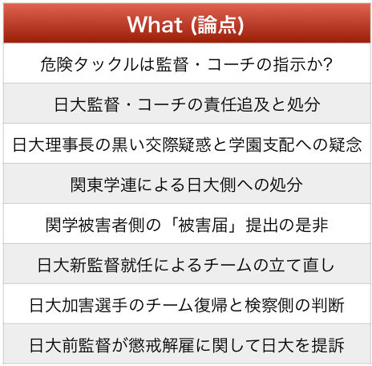

| 「情報の本質」を知れば身の回りの出来事が面白くなる ! ヒロ・キクチのヴァーチャル広報室 | |
| ヒロ・キクチ | |
| (2018) | |
みなさん、はじめまして。
広報コンサルタントで、ジャーナリズム評論家のヒロ・キクチと申します。
この度は、拙著、「情報の本質」を知れば身の回りの出来事が面白くなる！
をお買い上げ頂き、誠にありがとうございます。
私は、これまで一貫して〝コミュニケーション・オフィサー〟として実践を積んで参りましたが、その間、日本企業をはじめ、アメリカ、フランス、ドイツ、スペイン、スイス、オランダ、デンマークなど欧米諸国の企業の広報活動に携わりました。
企業の広報担当者としては日本企業で十一年、外資系企業で十九年、広報コンサルタントとしては五年、計三五年間、企業広報、商品広報、社内広報、イベント広報、業界広報、社会貢献活動などに従事し、ブランド戦略、販売促進戦略、危機管理対応、採用促進活動、デジタルコミュニケーションなどを推進してきました。言ってみれば生粋の「広報馬鹿」ということでございます。
しかしながら、長年、仕事をともにして頂きました数多くのマスメディアやジャーナリストの皆様、様々な業界の諸先輩方、同じ釜の飯を食った同僚たちの支えのお陰で、「机上の論理」ではなく「実体験」をベースにした「広報理論」と「ジャーナリズム論」を蓄積することが出来ました。
その財産を生かして、今後は社会全体のお役に立つような活動をしたい、それが、今回、執筆に至った理由です。「世の中には〝情報〟という魔物によって、嫌な思いをしたり、損失を被ったりしている方が多いのではないだろうか」そのような危惧があって、企業や行政機関などの組織で働く方々だけでなく、家族・親族、恋人・友人、学校、ＯＢ会、サークル活動、町内会など、様々な現場で、コミュニケーションや人間関係に悩んでいる方がいらっしゃれば、〝情報を取り扱う専門家〟として、難しい専門的な理屈よりも、身近な出来事を通して「捉えるべきポイント」をお示しすべきだろう、と考えたのです。
ＩＴ化が進み、世の中の情報伝達のスピードも内容も変化しているだけでなく、「世論」や「評判」が形成される仕組みとプロセスも変容しており、以前にも増して〝予測不可能〟な世の中になってしまっている、という思いがある一方で、落ち着いて考えてみれば、「人の心」というものは、社会の価値観が多少変化しても、〝今も昔も基本は変わっていない〟という安堵感もあります。
「情報」を生かすも殺すも、手にした人の力量次第ですが、〝情報を生かそう〟と躍起になっていると、騙されたり、翻弄されたりします。〝情報に頼らない〟と頑なになっていると、チャンスを逃したり、社会との調和が図れなくなってしまいます。
本書の最終節で、「情報」とは、コミュニケーションを活性化するための「触媒」である、と位置づけました。また、コミュニケーションとは、「議論」というゲームを楽しむことである、として、大方の日本人に〝苦手意識〟がある「議論」をどのようにして楽しむか、そのヒントになる解説をしております。
さらに、コミュニケーションとは切っても切れない「価値観」という概念を独自に「７つのＰ」で分類して、「共鳴」の基本条件となる「社会的価値観」を示しています。
本書は、ヒロ、亜里沙、淳一という架空の設定の三人が、ヴァーチャル空間を通して、実際に起こった社会問題や、著者が実際に経験した広報テーマを取り上げ、「議論」を進めながら、「情報」という〝魔物〟の正体を捉えようとする三日間を描いています。
本編で登場するヒロは、著者本人の現実と空想が入り混じったハイブリッドな設定になっておりますし、現実の問題を仮想空間で架空の人々が「評論」するという、ちょっと風変わりな構成ですが、お楽しみいただけますことを心より願っております。
私のサラリーマン人生を振り返ってみますと、それは「平成の歴史」そのものだったような気がいたします。今回の著作は、私自身が三五年間で積み上げた広報理論とジャーナリズム研究の一部を取り出した「卒業論文」のようなものでもあります。
「平成の歴史」を懐かしみつつ、明日の時代に思いを馳せて頂ければ幸甚の至りです。
これからも、ご高配を賜りますよう、何卒よろしよろしくお願い申し上げます。
平成三十年十二月吉日
ヒロ・キクチ
ヒロ・キクチの略歴
一九六二年生まれ、慶應義塾大学商学部卒業
企業広報をはじめとする広報実務のスペシャリストで、自動車をはじめ数種類の業界の外資系企業で広報部長を歴任した
二〇一八年より、九年前に設立した個人会社を復活させ、広報コンサルティング、講演活動、執筆活動を手がけるほか、クラシック音楽の専門家と共同で、音楽を通した〝脳力〟開発事業もスタートさせている
ヒロ・キクチはペンネームで、今年からビジネス・ネームとしても使用している
ヒロ・キクチのヴァーチャル広報室にようこそ！
ヴァーチャル広報室は、世間で起こっている出来事をサイバー空間で語り合い「情報と人々の行動」について分析し研究している未来型オフィス。
室長は日本、アメリカ、フランス、ドイツを本拠地とする企業で広報部長を歴任し、今年引退したばかりのヒロ・キクチ。生粋の日本人だが、外資系企業では「ヒロ」の名で通してきたこともあって、「ヒロ・キクチ」をビジネス・ネームにしている。問い合わせの電話で、お客さんからは「広木クチさんお願いします」とか「菊ちひろさんお願いします」とか言われることもしばしばだ。
写真スタジオのような薄暗いオフィスには、壁の大部分を占める大型のモニターがあり、研究員やクライアントとのテレビ会議はもとより、データや画像、世界中の報道結果などを一挙に表示できる。
それに加えて、オフィスの真ん中には特殊なテーブルと椅子があって、話し相手は、まるでヒロと本当に面会しているかのように、等身大で立体的に投影される。立体映像は、言葉を発するだけでなく、身振り手振りでプレゼンテーションすることもあり、まさにヴァーチャル・リアリティを体現しているのだ。訪問者をヴァーチャル立体映像としてオフィスに〝お招き〟するか、壁のモニターに貼り付けたまま平面的な映像にしておくかは、ヒロが相手の好みで決めている。
「今日は、依頼者の訪問はなさそうですね」
突然、涼しげな声とともに、北川景子似のスリムでキリッとした女性が、立体映像としてテーブルの右側に浮かび上がった。彼女のヴァーチャル・コスチュームは、さらさらとした生地で覆われたオレンジ色のワンピースだ。
この女性、ヴァーチャル広報室の筆頭研究員でヒロの秘書的存在の竹崎亜里沙。来週に迫った研究発表の資料作成が一段落したようで、リラックスした気分でヒロのオフィスにネット上からアクセスしてきたのである。
亜里沙は、日本のミッション系大学に在学中、ミス・インターナショナル日本代表候補にも選ばれたことがあり、ＩＱはヒロのそれをはるかに凌ぐ１６５という才色兼備だ。大学卒業後、フランスの音楽学校に留学。帰国して、日本のＰＲ会社に７年間勤務した。その当時、彼女が担当していたクライアント企業の広報責任者だったのがヒロで、彼がヴァーチャル・オフィスを開設したと知り、早速志願して一人目の研究員になったのだった。
「依頼者は来そうにもないね。じゃあ、早々に片付けて、いつものカフェで一杯やろうか」
ヒロのオフィスから歩いて五分の所に、ヒロと亜里沙のお気に入りのカフェがある。亜里沙の家からも十分程度の便利な場所だ。都心でありながら木々に囲まれたレストランが付設された本場仕込みのオープンカフェで、二人が好むブルゴーニュ・ワインが豊富に揃っている。
「９月がもうすぐ終わりだというのに、昼間はまだまだ暑くて外に出る気はしないけど、夕方ぐらいは外の空気にあたって寛ぐのが健康的ですわね」
亜里沙もその気になっているらしい。
「カラン」
突然、グラスが触れ合うような、透明感のある音がした。
オフィスの壁に目を向けると、安っぽい紺のスーツと白いワイシャツ、ネクタイだけはやけに高級そうな出で立ちの若者が、大型モニターの中央に躍り出ているではないか。
「カラン、カラン」
また、同じ音がした。
ヒロはこの若者に、まだアクセス権を完全承認していなかったので、彼が「呼び鈴」で催促していたのだ。
「すみません、突然。福澤学園大学で広報を専攻している北畠と申します。ヒロ・キクチ広報室さんでお間違いないでしょうか」
ヒロはにわかに眉間にシワを寄せた。
「貴方が〝お間違い〟しない限り、私は間違いませんが・・・」
若者は「あっ、」と言うと、暫く絶句した。
「まあまあ、細かいことはいいでしょう。ご用件は？」
亜里沙がヒロを嗜めるように助け舟を出して学生を促した。
「しかし、最近、若者に限らず年取った人たちも決まって〝お間違いないですか〟って言うけど、冒頭の 〝お〟が尊敬の意味だったら、こっちに間違ってませんか、と聞いていることになるよね。もし、自分のやっていることが間違ってないか、と尋ねているのなら〝お〟をつけるのはおかしいよね」
「はぁ・・・」
ログインしたばかりの学生に、ヒロがいきなり議論をふっかけている。
「この人、昔から日本語にはうるさいのよ。一緒に仕事している人からは『講釈好きのヒロ爺』と呼ばれてるから、貴方もこの場では『爺』と呼んでいいわよ」
亜里沙が〝ワル〟の目でほくそ笑んでいる。
「とんでも無い。大学の大先輩でもあるキクチさんにそんな呼び方はできません」
「そこは、とんでも無い事でございます、だね。ところで、要件はなんでしたっけ？」
「実は、卒論のテーマに、今年大いに話題になった『スポーツ界の暴力やパワハラ問題』とその『広報対応』を取り上げようと考えておりまして、教授に相談しましたところ、キクチ先生のお名前を伺いしまして・・・」
「教授って、誰？」
「宇都宮英彦教授です」
「あー、ウツか。学生時代は一緒にジャーナリズムの研究をしたり、テレビ局でバイトしたりしてた仲なんだよ。名前の通り、時々、〝鬱〟になるだろう」
「いゃぁ、まぁ」
北畠淳一、東京港区にある福澤学園大学商学部の４年生で、経営学とジャーナリズムを専攻していて、ジャーナリズムは商学部とは別のメディアコミュニケーション研究所（通称メディアコム）で学んでいるという。実はヒロも在学中、マーケティングを専攻する傍ら、当時は新聞研究所と呼ばれていた学内機関で授業を受け、ジャーナリズムに関する論文を書いていた。
「メディアコムか、懐かしいなぁ。淳一くん、って言ったね。カフェで飲みながら話そうか」
ヒロは、売上には繋がらない案件だと分かって、講釈するにしても気楽にやりたくなっていた。
「ねっ」と亜里沙に同意を求めたものの、彼女にはスルーされてしまったようだ。
「カシャカシャ、カシャカシャ」
キーボードを叩くこそばゆい音がしたかと思いきや、忽ち新聞や雑誌の記事が壁の画面上に積み上がっていく。
亜里沙が『スポーツ界の不祥事』を早速検索してくれていたのだ。
「淳一くん、君の端末で、この記事は見えているかね」
ヒロが淳一のことを気にかけると、
「はい、見えています。大学のパソコンを使ってますから」
淳一は意気揚々と返事をした。
「お家でのＩＴ環境はどうなの？」
「はい、自宅にも自分専用のＰＣがあります」
「移動中は？」
「えー、移動中は専らスマホですが、ＰＣはノートブック型なので持ち歩けます」
「そう。ならば、今後は持ち歩いてください。僕たちは、時間と場所を選ばずに仕事しているから、いつでも対応出来るようにしておいてくれたら助かるよ」
「それにしても、スポーツ界はいろいろあったね」
ヒロが溜め息混じりに亜里沙がまとめたリストに目をやった。
＊
日大アメフト選手の悪質タックル事件と日大幹部の隠蔽体質
＊
体操女子宮川紗江選手側に対する協会幹部のパワハラ疑惑
＊
レスリング女子栄強化本部長(当時)による伊調馨選手側に対するパワハラ疑惑
＊
日本ボクシング連盟山根前会長による協会の私物化と不正判定強要疑惑
＊
大相撲日馬富士の暴行事件とそれに伴う元貴乃花親方による協会批判
いずれも連日、ワイドショーで時間を割いて盛んに報道された案件だ。
それ以外でも、バスケットボール界では、日本代表男子４選手がアジア競技大会の開催地インドネシア・ジャカルタで起こした買春騒動、大阪の高校生による相手選手への試合中の暴行、留学高校生による審判への暴行と不祥事が続いた。プロ野球では、巨人軍の二軍選手によるユニフォーム窃盗事件、プロゴルフでは片山晋呉選手のプロアマ戦におけるゲストへの非礼な行為が問題化。そのほかにも、女子ウエイトリフティング日本代表監督の三宅義行氏に対するパワハラ疑惑告発、日大チアリーディング監督による特定部員に対するイジメ発覚等々、事例は枚挙にいとまがない。
「ところで淳一くん。『広報』とは一言で言うとどんな仕事だと考えますか？」
唐突にヒロが質問を投げかけた。
「えーっとぉ、企業イメージを良くするためにお金をかけずに宣伝すること、でしょうか」
ヒロから見て３時方向（右斜め45
度）に映る亜里沙が、ヒロの顔色を伺いながら心配そうな表情を浮かべている。
「では、企業イメージは、どのようにして形成されると思いますか？」
ヒロが続けざまに淳一に質問を浴びせる。
「それはーっ、広告や記事のマスコミへの露出度、社名やロゴマークの認知度、商品やサービスの満足度、ＣＳＲ活動のような社会への貢献度など、でしょうか？」
自信なさげに淳一が答えていると、ヒロはニコニコしながら誰かを手招きした。
ヒロのオフィスの隅に待機しているＡＩロボット『ギャルソン１号』に「コーヒーを入れて欲しい」と頼んだようである。
「完全とは言えないけど、淳一くんはそこそこ広報のことを理解できているようだね。但し、お金をかけずに宣伝する、と言うのはどうかな〜。あと、宣伝や広報を積極的に行っているからイメージが良くなるとは限らないんだよ。その理由は『情報の本質』を探求していく中で解明していけると思うよ」
ヒロはそう言うと、暫しパソコンに向かって何かを探し始めた。
「室長、何をお探しですか？」
亜里沙が声をかけてきた。
「うん、湾岸戦争の時、米国が仕込んだ、重油まみれの水鳥、の写真をね・・・」
ヒロがそう答えているうちに、大画面にその『写真』が現れた。
亜里沙がヒロの音声を使って検索し、瞬時に写真を引っ張り出したのだ。
「すごい！」
淳一が思わず叫んだ。
「おーっ！」
ヒロも亜里沙の早業に感嘆した。
「初めて見ました」
「そうだろうね。淳一くんが生まれる数年前、一九九一年に世界中に配信された写真だよ」
「わたしが小学校三年生の頃だったかな。イラク軍が油田を爆破して重油が海に流れ出し、海鳥たちが油まみれになった、とテレビで報道していたのを覚えているわ」
三人は、それぞれの思いで写真を食い入るように見つめていた。
一九九〇年八月、イラク軍が隣国クウェートに侵攻した。八年間続いていた「イラン・イラク戦争」の停戦からちょうど二年が経過した時だった。イラクは、長年の戦争に使った費用を米国などからの債権で賄っていたため、停戦後は債務を返済する必要があったのだが、サウジアラビアやクウェートなどが石油を増産したためイラクの主要輸出品である石油価格は下落し外貨獲得に行き詰っていた。加えて、米国はイラクからの債務返済が滞っていることを理由に、食料品や工業製品のイラクへの輸出を制限、いわゆる経済制裁を課していたためイラク経済は困窮を極めた。
そのような折、クウェートはイラクと隣接する地域で大規模な石油採掘を始めた。この油田はイラク領にまたがる巨大なもので、イラクにとっては自国の石油産出量の15 ％ を占める埋蔵量があり、そもそも領有権をめぐりクウェートと争っていた歴史がある場所だ。その油田をクウェートは「傾斜掘削法」（目標に向かって斜めに掘る方法）で大量採掘し始めたため、イラクは自国領の油田まで採掘しているのではないかと疑念を募らせ、二国間の争いはエスカレートしていった。ＯＰＥＣ（石油輸出国機構）や周辺のアラブ諸国による懐柔策の甲斐もなく、米国が紛争への非介入を表明したこともあって、イラクはクウェートへの侵攻を決行したのである。
サダム・フセイン大統領が率いるイラク軍は、クウェートの50 倍の兵力で半日足らずでクウェート全土を占領した。これに対し、国連の安全保障理事会は「即時無条件撤退」を求める安保理決議を採択したもののイラク政府は聞き入れないばかりか、クウェートから脱出できなかった外国人を人質として「盾」にした。イラク軍によるクウェート占領が続く十一月末、国連安保理は翌年一月一五日を撤退期限とする決議を採択し、期限後のイラクに対する武力行使を容認した。
一九九一年一月一七日、多国籍軍はサウジアラビアの内陸からイラク中枢部に向けた爆撃を開始。クウェート方面に軍隊を集中させていたイラク軍の意表を突いた作戦に、イラク軍は本土の防衛に徹するほかなくなってしまった。クウェートに取り残され多国籍軍に追い詰められたイラク軍は、多国籍軍のイラク本土上陸を阻むためペルシャ湾岸の油井七百箇所に火を放ったと言われている。一方、多国籍軍の中心的存在である米軍は、ペルシャ湾からのミサイルや爆撃機による攻撃を行い、石油タンカーや石油タンクを破壊していた。
「のちに明らかになったことなんだけど、ペルシャ湾に重油が流出した原因の四割は米軍をはじめとする多国籍軍によるものらしいよ」
ヒロは、画面に映し出されている当時のテレビ映像を併せて見ながら、口火を切った。
「ということは、この油まみれの水鳥は、当時のテレビ報道のようにイラク軍による石油施設破壊によるもの、とは言い切れない、という事ですか？」
淳一が身を乗り出した。
「そうだね。この写真はサウジアラビアの海岸で撮影した、との事なんだが、専門家によると、イラクが重油を流出させたとされている日から二、三日が経過しなければサウジの沿岸に油は漂着しないのに、写真公開のタイミングはそれより前だった、という事なんだよ」
「たまたまかも知れないけど、アメリカは、写真が公開されたちょうど三日前に、イラクの石油タンカーと石油タンクを爆撃しているのも疑惑を増大させたようね」
ヒロに続いて亜里沙が付け加えた。
「この写真は実はカナダで撮影されたものだ、とか、わざと水鳥を油まみれにして撮影したものだ、という噂まで出るほどで、米国による捏造は濃厚、と見られているんだ」
「でも、なぜ捏造する必要があったんですか？」
「世界中の人に、『重油まみれの水鳥』はイラクの蛮行によるもの、と思い込ませて、『イラクは悪者だからアメリカさん、懲らしめてください』というムードを世界中で作りたかったのだろうね」
「いわゆる印象操作、とも言えるし、プロパガンダ（政治的意図を持った扇動・宣伝）とも言えるわね」
ヒロと亜里沙の解説に淳一は複雑な表情を浮かべていた。
もう一つ、湾岸戦争の情報戦での米国の〝ヤラセ〟が発覚した。
「クウェート人のナイラという女の子が一九九〇年十月十日、連邦議会人権基金という米国の非政府組織で、クウェートを占領したイラク軍の非人道的行為を証言したんだ。内容は、『イラク軍兵士がクウェートの病院から保育器に入った新生児を取り出して放置し、死に至らしめた』という趣旨のもので、彼女は涙ながらにその事を話したんだ」
「もちろん世界に向けて映像が配信されたわけですよね？」
淳一が尋ねると
「そうだよ。さっき見せた『重油まみれの水鳥』より３ヶ月前のことなんだ。国連はまだイラクとクウェートの紛争に関して武力介入を決めてはいない時期だったから、この証言をきっかけに、イラクの行為は益々非難され、制裁を容認するムードが高まっていったんだよ」
ヒロが説明すると、今度は亜里沙が淳一に問いかけた。
「この〝ナイラ証言〟が、なぜ〝作り話〟だと分かったと思う？」
「その女の子が事実を暴露したとか？」
淳一の答えに亜里沙は首を振った。
「湾岸戦争が多国籍軍の勝利で決着した一九九一年三月以降、マスメディアがクウェートに入り取材する中で、『イラク軍が病院の保育器を盗んでいたという事実は見当たらず、数百名の新生児を放置したという事実もなかった』ことが発覚したのよ」
「さらに次の年になって、ニューヨークタイムズの記者が、あの『ナイラ』という15
歳の女の子は、その当時、米国に駐在していたクウェート大使の娘であることを暴露したんだ。つまり、あの少女は、クウェートには居なかった、という事になるね。事実、一度もクウェートの地を踏んだこともない子だったらしいよ」
今度は、ヒロが亜里沙の解説を補足した。
「結局、当時の人々は、米国の〝作り話〟に乗せられて一喜一憂していた、ということなんですね」
淳一は落胆したような顔で伏し目がちになっていた。
「すべてが事実に基づかない全くの〝作り話〟というわけではないけど、別の場所、別の時間に起こった現象なのに、場所や時間だけでなく登場人物や目的、動機まで〝都合よく〟すり替えて『ストーリー』を組み立てる作業は、ほとんどのニュースで行われている、と言っても言い過ぎではないね」
ヒロはこれまでになく強い口調になってしまった自分の気持ちを鎮めたいのか、ギャルソン１号が運んできたコーヒーを口にした。
「情報」とは、〝物事について、知らせる内容〟である。一方、「事実」とは、〝実際に起こった事〟である。
週刊誌などのマスメディアが、記事で摘発した企業や組織から、「事実無根」「名誉毀損」などと異議を申し立てられた時、決まったように「我々は事実に基づいて報道している」とコメントする。
「メディアがそう反論するのには一理あるんだよ」
ヒロがそう言うと、淳一は半ば不思議そうな顔をした。
「〝事実と真実は別のもの〟というのは分かるかね？」
ヒロが淳一に問いかけた。
「事実は、実際に起こったこと。真実は、本当のこと。ですよね・・・」
「そうだね。では、〝真実では無いことを淳一くんが亜里沙に話した〟とするよね。そうすると、その行為は〝事実〟かね？」
淳一が沈黙している、と亜里沙が援護した。
「わたしが記者なら、淳一くんが話した行為が〝実際に起こった事〟つまり〝事実〟として認定するわね」
「そうか、証言さえ取れていれば、その内容が真実でなくても〝事実〟に基づいている、とメディアは主張するんですね」
淳一は〝謎〟が解けたのか、嬉しそうにしていた。
「警察が、容疑者の〝自供〟のみで、事実認定して、それを揺るぎない〝真実〟に仕立て上げていくのと似た構造だね」
「今どうなっているかは定かではないんだが、新人の新聞記者は『察まわり』と言って、警察担当から記者人生がスタートするようで、それは、警察が被疑者から〝自供〟を引っ張り出すテクニックを学ぶため、という意図もあるようだよ」
ヒロの説明に、淳一はゆっくり頷いた。
「さて、今〝真実では無いこと〟を事実認定してしまうケースで考えたけど、今度は〝真実のみ〟で構成された情報であっても、その組み立て方次第で、実際とは全く違う情報になってしまう、ということを検証してみよう」
ヒロが次なる命題を提示する。
「一辺の長さが４センチの正三角形のピースが四つテーブルにある、と想像してみて」
亜里沙は手配よく淳一にヒントを出すと同時に、画面に正三角形を四つ表示した。
「えーっとぉ、それを組み合わせればいいんですね？」
淳一は、何事でも、いちいち丁寧に確認する。
「一辺が８センチの正三角形ができます」
「それ以外には？」
「えーっとぉ、・・・あっ、平行四辺形もできます」
「まだ出来るでしょう？」
「えーっ、まだありましたっけー」
淳一と亜里沙のやり取りは、まるで幼児教室の先生と生徒のようだ。
「整っているものだけが〝形〟ではないよね」
ヒロが助言すると、
「あっ、そうか、正三角形を上下に組み合わせた、ひし形が二つ出来るし、正三角形を横に四つ並べてギザギザののこぎり山も出来ます」
「そうだね。さらに、正三角形同士の接し方を変えて行けば、無数に形が出来るよね」
「あれっ、何の話だったっけ」
「真実だけで組み立てた情報、の話です」
齢のせいなのか、ややボケて始めているヒロに、亜里沙が冷たく言い放った。
「そうだった。さて、今作った形の中で、〝真相〟つまり『真の姿』は『一辺が８センチの正三角形』だとするよ。でも、マスメディアが取材を重ねる中で〝真実〟を組み合わせて、真相は『平行四辺形』だ、と主張すると、情報の受け取り手である我々は、どちらが本当なのか、分からなくなってしまうよね」
「初めから全容が見えていたなら、『一辺が８センチの正三角形』だと誰もが思うけど、世の中で起こっている事なんて、当事者であっても全容を把握していないことが多いわよね」
「僕たちは、誰かが作った〝情報〟という〝姿〟が示されれば、それが〝真相〟つまり〝本当の姿〟だと思ってしまいますね」
ヒロ、亜里沙、淳一と続く三人の議論は、始まってからまだ一時間にも満たないのに、次第に噛み合ってきたようだ。
「三十代後半の頃、勤めていた外資系企業で女性社員が自殺するという出来事があったんだ」
ヒロが唐突に昔話を持ち出した。
「そこそこの有名企業だったので、事件報道で名の知れたあの週刊誌が食いついてきてね。『自殺の原因は会社からの圧力によるもの』と決めつけて記事にしようとしたんだよ。それで当時広報課長だった僕が副編集長と何度か会ってね、会食もしたしね」
「それで、理解し合えたのですか？」
亜里沙の質問にヒロは手を小さく横に振った。
「心を許すことはなかったけど、お互い本音をぶつけ合えたと思うよ。いろいろ話している中で、彼は週刊誌ならではの常套句を使ってきたね」
「何と？」
「『火のないところには煙は立たない』とね」
「それで、どうされたんですか？」
「『世の中には放火魔と言われる人もいるぐらいで、簡単に火のないところに火をつけることもできますよ』と言ったら、副編集長さんは黙ってしまったよ」
「結局、週刊誌は記事を掲載したんですか？」
黙って聞いていた淳一が訊いてきた。
「実は、こちら側もネタを掴んでいてね。女性社員の自殺は、失恋によるものだった可能性を示す証拠をいくつか持っていたので、副編集長にその件をほのめかしたんだよ。社内調査で彼女に対する『セクハラ』『パワハラ』『いじめ』などの形跡が全く見当たらなかったことも話したよ。それに加えて、自殺した女性の父親と、週刊誌に記事を送り込んできたフリーランスのライターが左派系の人々が集まる『市民活動』を通じて知り合いだった事。その父親が、会社から弔慰金や会社都合の退職金が支払われたのに、それでも物足らず、法外な慰謝料を会社に要求してきた事も話題にしたんだ」
「それで、記事の掲載は諦めた？」
亜里沙が目を輝かせてヒロを覗き込んだ。
「いやー、亜里沙も分かっているとは思うけど、週刊誌に限らずマスメディアというのは、一旦作り始めた〝ストーリー〟を中々取り下げようとはしないよね。あの時も同じだった。『失恋』の件は自殺とは関係ない、と言い切り、『社内調査』の結果は会社に有利な結論になるはずで論外、『父親とライターが知り合いだった』のはたまたまで、『慰謝料を会社に要求』してきたのは、自殺の原因が『会社からの圧力によるもの』であることを示す何よりの証拠だ、とまで言って強行に掲載したね」
「自殺の原因は『会社からの圧力によるもの』という父親の主張は、客観的な証拠がないですよね。一方的な主張を理由に『慰謝料を会社に要求』した行為は、父親の〝勝手な理屈〟によるものであって、記者が主張する『裏付ける証拠』でも何でもないですよ。〝不当な行為〟（結果）を正当化するために、後付けで適当な〝理由〟を持ってきているようで、『因果関係』は成立していない、と見るべきでしょう」
淳一は憤慨していた。
つまるところ、『情報』という代物だけでは、『真相』を正確に再現することは不可能なのかも知れない。
誰かが一方的に主張したことを『事実』として扱う事もあるし、ある目的のために『ストーリー』を組み立てる中で、有効なパーツのみを『真実』として拾い集め、不都合な『真実』は葬り捨てて、実際とはまったく別物の『姿』を作り出していくことが出来る。
これが『情報』であり、それを使って企業や組織は『広報活動』を行い、マスメディアは『報道』するのである。「ナイラ証言」と呼ばれる、クウェート少女を使った「作り話」に、米国の大手ＰＲ会社が深く関与していたことは、本来、企業や組織と報道機関の間を取り持つ役割のＰＲ会社が社会的倫理観を軽視していた事を物語っている。
二〇一八年のノーベル生理学・医学賞を受賞した本庶佑（ほんじょ・たすく）博士が受賞発表後の記者会見の中で、「教科書に書いてあることを信じない」「自分の目でモノを見る」という自身の信条を披露した。権威ある科学誌の「ネイチャーやサイエンスに出ている９割は嘘で、十年経ったら残って１割」とも言い切った。
確かにその通りである。
研究者の発表は、証拠を伴ってはいるものの『仮説』にすぎないからだ。
辞書で『仮説』とは、事実を合理的に説明するために考えた仮定、であり、『憶説』（頭で考えただけで根拠のない意見）ともある。
ヒロたちの議論の中で、本当のことではない事であっても証言したら『事実』になってしまう、という意見が出ていたように、『事実に基づいた情報だ』と言われても、百パーセント信じるには危ういものである。それ故、その『事実』を合理的に説明しなければならないので、実験によって『再現』できるか、『再現』できる確率はどの程度なのか、『再現』を阻害する要因と促進する要因は何か、など理に適った説明をしなければならない。いくつかの実証が得られた『仮説』は、それさえも研究者が『考えた仮定』であって、万物の真理を説くには程遠いのである。まして『憶説』ならば、理論的に組み立てられた『学説』だとしても、〝憶測〟と大して変わりはないのだ。
社会の教科書でも、科学の教科書でも、そこに書いてあることが基礎的なレベルであろうが高度なレベルであろうが、自分の目で確かめない限り、信じることは危険だ。常に疑いの目を向けておく必要がありそうである。
「ところで、淳一くんは入試の時、数学は必須科目だったと思うけど、得意科目だったのかい？」
ヒロが唐突に投げかけた。
「はい得意でした。高校二年までは理系だったんですが、物理が全然できなくて、三年からは文転したんです」
「あら、誰かさんと同じじゃないですか・・・」
淳一が答え終わるや否や、亜里沙がヒロに目をやった。
福澤学園大の経済学部と商学部は、文系とはいえ入試でも大学の授業でも、数学は必須だ。経済や経営という学問には数字は付き物だし、統計、金融、会計など、数学的な要素が大方を占めるので、福澤学園大の方針は理に適っている。しかし、世の私立文系の学生のほとんどは、文学部や法学部以外の学生であっても、数学が嫌いだから文系にしたという人が少なくはないはずだ。
「経済学部は看板学部でもともと優秀だけど、商学部はイマイチだから、僕らみたいな理系崩れにとっては、ありがたい〝救済学部〟だよね」
自虐的とも取れるヒロの発言に淳一も大きく頷いて同意した。
「それに、数学は嘘をつきませんしね」
淳一の言う通り、数学で『騙された』という経験は無いし、『曖昧』という概念も存在しない。答えが導き出せない場合は『解なし』と表現するのだが、それは数学上では『存在しない』という明確な答えであり、『虚数』（二乗したらゼロ未満の実数になる数）という実際には存在しない想像上の数であっても、座標の上で表せるという手品みたいなところがある。数学は、宇宙に存在する物事の原理を追究し表現するためのツールと言っても過言ではないので、『曖昧』さは許されないのだろう。
それに対して、物理でも化学でも、ましてや地学や生物に至っては『不明』な事だらけだし、歴史や文学、さらに芸術は、取り用によってはどうにでもなる『自由』すぎる分野とも言える。それ故に、それらの分野が永遠に『検証』の対象になっているのだろう。
「曖昧だらけの『情報』というものを数学的に整理してみると面白いんだよ」
ヒロはニンマリした表情をしている。
「あら、音楽だって数学的なのよ」
亜里沙が割って入ってきた。
亜里沙は、日本のミッション系大学に現役で入学し、フランス文学を専攻した。予定通り４年で卒業した後、その年の秋からパリの音楽学校に入学。『音楽美学』の研究に５年間没頭した。
「そうだね。音というのは、周波数、波長、周期、振動、速度を伴った波動だよね。その音を組み合わせて出来上がった音楽には、リズム、音階、調和（ハーモニー）があるね。数学的には、数列、比率、関数、集合などで表現できるよ。それを感性に訴えるのか、理性に訴えるのかという表現方法の違いだね」
「淳一くんは卒論で、『スポーツ界の暴力やパワハラ問題』とその『広報対応』をテーマにしたいと言ってたね。この課題を〝数学的〟に〝因数分解〟して解いていこうか」
解説に続いてヒロがそう提案すると、淳一は目を輝かせた。
「はいっ・・・」
淳一が返事した瞬間、〝ヴォワーン〟という軽い振動音とともに、等身大の淳一の立体映像がテーブルについた。
ヒロが淳一の表示モードを画面表示から立体映像に切り替えて、オフィスに招き入れたのである。
「わーっ、・・・あ、ありがとうございます」
淳一は驚きつつ、満面の笑みで正面の亜里沙と右斜め前、３時方向のヒロにペコリと頭を下げた。
コスチュームは、〝安っぽい紺のスーツと白いワイシャツ、ネクタイだけはやけに高級そうな出で立ち〟のままだ。
「まるで宇宙戦艦ヤマトの『ワープ』（瞬間移動）みたいです！」
淳一の興奮は冷めやらないようだ。
「宇宙戦艦ヤマトは僕が小中学生の頃の映画だけど、淳一くんも見たことがあるの？」
「はい、父と一緒にＤＶＤで何度も見ました」
淳一がそう言うと、ヒロがカチャカチャとキーボードーを叩いた。
「わっ！」
今度は亜里沙が驚きの声を発した。
そして、亜里沙の〝姿〟が宙に舞った。
コスチュームは、宇宙戦艦ヤマトのヒロイン、森雪隊員の格好になっている。
「このオフィスでは、こんなこともできるんだよ」
ヒロがコンピューターを使って、亜里沙の立体映像を空間で上げたり下げたりしている。
「ちょっとー、私の体で遊ばないでくださいなっ！」
亜里沙の顔が真っ赤になっている。
「ごめん、ごめん。亜里沙にセクハラで訴えられるね」
「そうですよ。わたしだから許してあげるけど、他の方にやっちゃダメですよ」
〝定位置〟に戻った亜里沙は、髪を後ろで束ねながら、口を尖らせた。
「さて、『スポーツ界の暴力やパワハラ問題』でいくつか衝撃的な事件があったけど、淳一くんは、まずどの事件を取り上げたいですか？」
ヒロは、何事も無かったかのような気取った声で淳一に尋ねた。
「同じ学生という立場では、『日大アメフトの危険タックル事件』でしょうか」
淳一がそう答えると、亜里沙も何事も無かったかのように、『日大アメフトの危険タックル事件』に関係する資料をテーブルに広げた。
広げた、と言っても、テーブル上のモニターに複数の電子データを表示したわけだが・・・
ヴァーチャル広報室では、新聞や雑誌などの紙媒体、テレビなどの電波媒体、ＷＥＢ媒体の報道を予めタグと優先順位を付けておいて、議論や検証で直ぐに使えるようにしている。
日大アメフト事件の経緯 <日大前監督・コーチの記者会見まで>
二〇一八年５月６日、アメリカンフットボール（以下、アメフト）の日本大学（以下、日大）対 関西学院大学（以下、関学）の定期戦で、日大の選手が関学のクォーターバック（以下ＱＢ）にプレーが止まったにもかかわらず危険なタックルをして負傷させた。この動画がＳＮＳで拡散し、17
日に被害者である関学が会見。ＱＢの父親も別途会見やブログでコメントした。
５日後の22
日、加害者の日大選手は単独で記者会見を開き、怪我をさせてしまった関学の選手・家族・関係者に謝罪した。危険なタックルをした理由については「日本代表や日大のレギュラーから外され練習にも参加させてもらえなかったが、『関学のＱＢを〝潰す〟のであれば試合に出してやる』と監督やコーチから言われたので敢行してしまった」という趣旨の説明を行った。翌23
日、日大の監督とコーチが記者会見を開き「怪我をさせろとは言っていない。ルール内での激しいぶつかり合いは当然のことで〝潰せ〟はどのチームでも言っているはず。選手が我々の意図についてこれなかったのが原因」と言う趣旨の発言。会見の進行を巡って、司会を行った共同通信社ＯＢの日大広報職員が記者と言い合いになるというお粗末なオマケがついた記者会見は、『日大ブランド』を著しく傷つける結果となった。
「関学に追及された日大の立場をさらに追い込んだのは、被害者である関学ＱＢの父親が開いた21
日の会見だったね」
ヒロが情報を加えた。
「関学が組織という立場で『学生に対する指導のあり方』を論点にするのに対して、父親は『子供が怪我をさせられた家族』の立場で〝情〟に訴えかけたわね。世間に対するアピールの方法としては絶妙の『合わせ技』ね」
亜里沙の意見は、ＰＲに携わっている者らしい、鋭い分析だ。
「一つだけ疑問に感じるのは、この件のマスメディア対応は関学に任せておけばいいのに、なぜ、この父親があらためて記者会見を開く必要があったのかしら」
亜里沙は疑問も投げかけた。
「５月10
日に関学が日大に抗議文を送ったのだけど、その前日の５月９日に、父親は既に警察に『相談』していたようだよ」
「つまり、関学より先に動いて、フライングした、ということですか？」
ヒロからの情報に淳一が反応する。
「そうだね。手っ取り早く警察にコンタクトしてしまった『正当性』を独自の記者会見で主張したかったのだろうね。別の見方をすれば、父親の行動で関学も早急に対応せざるを得なくなった、とも言えるね」
ヒロがそう答えると、
「警察の捜査が入るかも知れない、と思うと、まずは急いで自分の無実や正当性を訴えようとするのが人情ですものね」
亜里沙が応じた。
「関学の質問状に対する日大の回答が、踏み込みが足りず釈然としない内容になっていたのは、日大という組織の体質に加えて、この『警察への相談』と、それに連なる『被害届』が影響していたかも知れないね。簡単に非を認めると逮捕されかねないからね」
「だから、日大は、『自分たちの指導に対して選手の意識が〝乖離〟していた』と回答書の中で自軍の選手を非難して、彼一人に罪をなすりつけようとしたのね」
「それらが引き金となって、翌日の５月22
日に日大選手側が急遽、記者会見を開くことになったのですね」
二人の話を聞いていた淳一は、脳内で色々なものが繋がってきたようだった。
「その通り。どんな人でも理由なく記者会見を開くことはないさ。むしろ、自分の正当性を主張して危機を回避するためにマスメディアを利用しているわけで、世間の同情を買って金銭的な利益を得ようとする悪人すらいるぐらいさ。今回の一件でも、当事者たちが相次いで記者会見して正当性を我れ先に勝ち取ろうとする様子は、いささか滑稽に映ってしまうね」
ヒロは吐き捨てるように言った。
「淳一くんの目には、日大選手の記者会見はどのように映ったかい？」
一転してヒロは、淳一に慈愛の眼差しを向けた。
ヒロはいわゆる〝バツイチ〟で一人暮らし。三十過ぎで結婚したから、もし子供を授かっていたならば、丁度、淳一ぐらいの息子がいてもおかしくはない。
「同い年の学生として、大人になりきれていない自分が恥ずかしい、と思えるくらい彼の会見は立派でした」
淳一はこの日大選手より一学年上ではあるが、その年代の者しか分からない「人生の岐路」でふりかかった「無情」を共有していたのだろうか。
日大選手は、冒頭、怪我をさせてしまった関学ＱＢ選手、家族、関学アメフト部とその関係者に深く謝罪した。そして、「事件」の三日前の５月３日から「その時」までの「経緯」を時系列で丁寧かつ無駄なく語り始めた。弁護士と綿密に打合せをした結果だとは思うが、それにしても若者とは思えない冷静沈着な語り口で、何かの覚悟を決めた「侍」のような実直さとともに、頭脳明晰な印象を与えた。
「日大選手の記者会見がなぜ好感を持たれたと思う？」
ヒロは亜里沙と淳一、二人に投げかけた。
「いくつか理由を挙げられるわね」
亜里沙はそう言うと、三人の眼下にある〝電子テーブル〟に、要因を書き始めた。
彼女の等身大ヴァーチャル映像の右手に携えられた〝特殊ペン〟が文字を綴っていく。
＊
いつ、どこで、誰が、誰に、何を、どのように、なぜ、という情報の基本構造が明確で分かり易かった
＊
自分の〝主張〟をアピールすることよりも〝事実関係〟の説明に主眼を置いた
＊
記者の質問に対して、戸惑いながらも一生懸命、集中して答えた。原稿を読み上げる一点張りの主張や論点をずらすような発言はほとんど見られなかった
＊
理由はどうであれ〝やってしまった事〟に対して真正面から反省し、決して他人のせいにするような意図は感じられなかった
＊
「今後、アメフトを続ける権利は無いし、続けるつもりも無い」と発言し、〝我田引水〟の利益誘導ではなく、真の〝謝罪〟会見であることを印象づけた
＊
二十歳過ぎの若者、スポーツマン、という背景があることに加え、我々が忘れかけている〝純粋〟で〝爽やか〟な立ち振る舞いが〝新鮮さ〟を醸し出した
「流石ですね！」
淳一は感心して、亜里沙がすらすらと書き上げた文字を追った。
「うちの電子テーブルは凄いだろう」
「そうじゃないでしょ！」
ヒロのトンチンカンな発言を亜里沙が苦々しく否定した。
「亜里沙が列挙した〝要因〟には、情報発信における重要なエッセンスが散りばめられているね」
ヒロは真面目な顔つきで解説を始めた。
「最初に、情報の基本、『５Ｗ１Ｈ』に触れているね。一八九〇年前後から欧州で提唱され始めた情報管理術で、事実関係を説明するには必須なんだよ。欧米では 5Ws and How と呼んでいて、Who, What, Where, When, Why, How と表している。日本では、いつ、どこで、誰が、何を、なぜ、どのように、という順番が一般的だろうか。情報の核になる 当事者を示す Who 『誰』と、Subject 『テーマ』に相当する What 『何』の順番が欧米では一番目と二番目に、日本では三番目と四番目にきているところに国民性が出ている感じがするね」
「そうそう、亜里沙は 〝(to) Whom 誰に〟も加えていたね。これも重要な要素で、6Ws 『６Ｗ１Ｈ』とも言うんだ。How much や How many といった数量、金額などを入れる場合もあるけど、入れ始めたらキリがないね」
ヒロは続けざまに講釈した。
「淳一くんは、ジャーナリズムも専攻しているから、当然、知ってたわよね」
亜里沙が尋ねると、
「はい。頭には入れていたつもりですが、当たり前過ぎるのか、ついつい忘れがちになってました」
淳一の素直な発言に、ヒロはニコりとしてコーヒーを口にした。
『５Ｗ１Ｈ』は、次のように置き換えることができる。
（説明では〝whom〟を入れて６Ｗとした）
＊
Who
『誰が』: 当事者、主体、主人公、登場人物、味方、プレーヤー
＊
Whom
『誰に（を）』: 相手、消費者・ユーザー、観客、敵、標的となる人物
＊
What
『何を』: 主題、主張、対象、目標、テーマ、ゴール、標的となる物事
＊
Where
『どこで』: 現場、場面、分野、ステージ、フィールド、ポジション
＊
When
『いつ』: 時間、時系列、経過、流れ、タイムライン
＊
Why
『なぜ』: 理由、動機、価値観、哲学・美学、目的、ポリシー
＊
How
『どのように』: 方法、手段、戦術、展開、アプローチ
『５Ｗ１Ｈ』は、情報を分析する時だけに限らず、事業戦略、マーケティング戦略にも通用するし、サッカーやアメフト、ラグビーなどの球技、演劇や交響曲などの芸術作品作りにも応用できるメソッドだ。当然、日常生活での交渉事や議論の時にも使いこなせると、有効な手が打てる。
『５Ｗ１Ｈ』をワールドカップのサッカーの戦略・戦術に当てはめてみる。
「なるほど、『５Ｗ１Ｈ』という因子を使って、全体を〝分解〟するんですね！」
淳一がウキウキした様子で立ち上がった。
ヴァーチャル立体映像には、〝情緒モード〟が仕込まれていて、ある一定の感情に達すると、立ったり、しゃがみ込んだり、うつ伏せになったり、顔が赤くなったり、それに加えてヒロは、目の玉が飛び出す、という変わった仕掛けまで組み込んでいる。
「情報によって、誰が得をして誰が損をするか、という『利害』という要素にも注目すべきだね」
「理性的見解なのか、情緒的見解なのか、客観的なのか主観的なのか、という分別も必要よ」
ヒロと亜里沙の情報論議には終わりがなさそうである。
「日大アメフト事件も『５Ｗ１Ｈ』を使って全体像を整理してみましたわ」
亜里沙はそう言うと、チャートを表示させた。
＊
筆者により10
月以降に発生した事象も追加

「前監督・前コーチによる『指示があったか無かったか』という論点は、日大選手の証言もあるので〝かなり黒に近いグレー〟と言ってもいいけど、マスメディアにしてみれば、『日大という組織の体質の問題』『理事長の責任問題』に〝問題の本質〟を移したかったと思うよ」
「そうね。でも、あと一歩、足りなかったみたいね。日大側の〝だんまり作戦〟が成功した、ということなのかしら」
「連盟や関学にしてみれば80
点、前監督・前コーチは社会的地位を失ってほぼ０点、日大選手は会見での姿勢が高評価だったし刑事訴追は免れそうだから60
点、マスメディアは十分話題性を獲得したけど日大を追い込めなかったので50
点、といったところかね」
ヒロと亜里沙が評価してみせた。
その後、前監督・前コーチは、東京地検に『立件』されなかったため、50 点を付けてもおかしくない結果になった。さらに付け加えれば、『立件せず』の判断は、争点となった『指示』について〝無かった〟と判定したことになり、現に、前監督は日大に対して、『懲戒解雇』した理由が成り立たなくなった、として提訴している。ただ、関学にせよ、関東学生アメリカンフットボール連盟にせよ、『本質論＝あるべき姿の追求』は、監督・コーチによる『危険タックルの指示』の有無ではなく、『フェアプレー精神の堅持と実践』である、という立場をもう少し明確に示して欲しかった。
マスメディアは、日大の組織としてのガバナンス（組織の支配・統治）を問題視して、「話題を引っ張りたかった」のだが、いまひとつ切り込めなかった理由は、体操女子、レスリング女子、日本ボクシング連盟、貴乃花元親方による協会批判、など『スポーツ界のスキャンダル』という〝ご馳走〟が次から次に飛び込んできて、日大を〝吟味〟する時間がなくなってしまったからであろう。
マスメディア、特にテレビメディアは、「ガバナンスの是非」を声高に叫んでいるものの、経営学や組織論的なアプローチというより、芸能スキャンダルの域を脱しておらず、彼らにとっては「事件報道」の一角を〝彩る〟「ネタ」に過ぎないようにも思える。
「今日はここらで、よかろかい（よろしいでしょうか）」
大河ドラマの見過ぎなのか、ヒロが薩摩言葉で締めようとした。
「はい、では淳一くん、あとの整理は気張いやんせ（頑張ってください）」
亜里沙が悪ノリしたかと思えば、
「チェストー（それ行け）」
最後は、淳一の叫び声で全員が、びっくりして〝立ち上がって〟しまった。
翌日は、沖縄付近まで北上してきた台風の影響で、東京も朝から悪天候に見舞われていた。９月が終わりにさしかかり、いよいよ〝秋台風到来〟の季節になったのだろうか。
ヴァーチャル広報室のオフィスは、ヒロが所有するビルの地下にある。
天井には外光を取り込むため、中庭に繋がっている小窓があるのだが、この夏は猛暑続きで一度も開けていなかったし、この日も強い雨がガラスを叩きつけていて、結局、梅雨時からずっと開放出来ずじまいのままだ。
「あれーっ・・・」
部屋に入るなり、ヒロは驚きの声をあげた。
オフィスの中央にあるテーブルの際に、亜里沙と淳一が文字通り、フリーズした状態で立っているではないか。
ヒロは、亜里沙の肩に手を置いてみた。
（ガラガラガラ）
そんな音がしたかは定かではないが、亜里沙の姿が簡単に崩れ落ちた。
今度は、淳一のお尻を軽く引っ叩いてみる。
同じように、陰影はどこかへ飛んで行ってしまった。
ヒロは、昨日のミーティングの後、コンピューターを完全に落とし切っていなかったようで、バグとして残像が残っていたのだった。
「こんなにひどい雨風だと、〝オワ蔵〟は飛べないな〜」
ヒロは独り、呟いた。
ヒロは近所のコンビニとの間で、食料品や雑貨を配達してもらう契約をしていて、運搬はヒロが所有しているドローンを使っている。
名前はフランス語で『鳥』という意味の『オワゾ』を捩ったものだ。
今日の〝オワ蔵のお使い〟は、諦めるしかない。
オフィス内に設けた格納庫に待機している〝オワ蔵〟の黒光りしたフォルムにヒロが見とれていると、電話の呼び出し音がした。
〝 Bon jour 〟（こんにちは）
鳥のさえずりのように、澄み切った声がオフィスに響きわたった。
亜里沙の声だ。
〝 Bon jour, vous allez bien ? 〟（こんにちは、調子はどう？）
ヒロが応答した。
「急な話なんですけど、わたしが卒業した学校の不祥事が、明後日発売の週刊誌に出るのよ」
亜里沙は、一転して低い声で喋った。
「学校って、どこ？」
「多摩音楽大学よ！」
「何があったの？」
「付属高校の男性ピアノ教師が女子生徒に〝セクハラ〟して退職した、という話が記事になる、って学長から今朝電話があってね。雑誌が出る前に緊急で記者会見したほうがいいかどうか相談されているのよ」
亜里沙は、いつもより早口で喋っている。
「何の為に記者会見をやりたいのかな〜」
「学長としては、今回の不祥事について、記事が出る前に世間に謝罪する必要があるのではないか、と言っているのよ」
「電車の中吊り広告は既に出てしまっているよね」
「そうなのよ」
多摩音楽大学は、大正時代に設立された日本有数の音楽学院で、戦後まもなく新制大学に認可された音楽界の名門だ。
幼稚園から高校まで付属校を持ち、亜里沙は、ここの幼稚園と小学校を卒業し、中学、高校は別の進学校に進んでいた。
今の学長は、亜里沙がパリの音楽学校に入学するまで師事した長年の恩師だ。
「学長は、高校教師の〝セクハラ〟を確認しているのかい？」
「間接的に確認してるわ。〝被害者〟である女子生徒が、ピアノの個別レッスン中に証拠を残すために動画を撮っていて、それを高校の校長に見せたそうよ。学長は校長からの報告で事実を認識し、学長と校長が男性教師を呼んで尋問したところ、教師は罪を認めたのよ」
「その一件がなぜ週刊誌に載ることになったの？」
ヒロが訊ねると、〝シュッ〟という発射音とともにＢ４版の紙が一枚、プリンターから排出された。
亜里沙が『ゲラ』（新聞や雑誌の印刷前の校正刷り）をＦＡＸで送ってきたのだ。
女子生徒は以前から個別レッスン中に、男子教師が自分がピアノを弾く時の脚の動きを盗撮しているのではないか、と不信感を持っていたようだ。いよいよ訴え出ようと、証拠動画の撮影に成功した。それを校長に見せ、教師が行為を認め、その教師は退職した、という経緯だ。
女子生徒は、撮影に成功した翌日、早々に警察に行って『相談』したところ、警察からは『学校と話し合って今後どうするか決めるように』とアドバイスされたという。
学校と女子生徒、その保護者との話し合いにより、警察に『被害届』を提出するのは取り止めることになった。
一方、学校側は、高校の生徒と全父兄に対して、当該男子教師の不祥事のお詫びと退職を報告し、学校側として今後の再発防止を約束する文書を送付した。
いくら有名大学の付属高校で起こった事とはいえ、その経緯のみを以って、週刊誌に掲載するにはインパクトが弱すぎる。
そこで、週刊誌側は、警察に通報せず、教師に懲戒免職の処分を下さなかった学校側の対応を非難する記事に仕立て上げたのだ。
「記者会見を開く必要は全く無いよ」
ヒロはキッパリ言い切った。
「やはり、そうですか」
亜里沙は安堵したとみえて、普段通りの優雅な口調に戻っていた。
「女子生徒が『被害届』を出さなかったことで刑事事件にならなかったことが大きいね。週刊誌は、『学校側は警察に通報すべき』と主張しているけど、その必要も無いよ。当事者である女子生徒が撮影に成功した翌日にすでに警察に『相談』に行っていて、警察の指導で、学校との話し合いで事を収めるよう勧められているわけだし。学校側は、同校で学んでいる生徒と生徒の父兄に謝罪し、今後の再発防止を約束しているので、それで十分責任を果たしているよ。世間の人々に対して、あらためて『事件』をお知らせして『謝罪』する必要性は今のところ見当たらないね。記事が出た後、万一、テレビのワイドショーあたりが食いついてきたら、〝敵〟の出方を見て対応すれば良いので、その時は僕らでバックアップしようよ。ただ、記事の内容に鑑みると、その可能性は極めて低いね。記者会見を開いて〝先手〟を打ったつもりが〝火に油を注ぐ〟結果になりかねない。その週刊誌は、一度出せば〝気が済む〟はず。好きにやらせておけばいいんだよ。メディアに〝扇動されない〟ことが肝要だね」
「ありがとうございます。学長にもそのように伝えておきますわ」
亜里沙は、ヒロに礼を言うと電話を切った。
天窓から雷が轟く音が伝わってくる。
ヒロは〝その週刊誌〟の記者リストを拾い出していた。
ヒロは、〝その週刊誌〟の代々の編集長、副編集長と面識があった。ヒロが三十代後半に勤めていた会社で、マスメディア数社を米国の工場見学に招待したのだが、その時に懇意になった新聞記者がのちに〝その週刊誌〟の副編集長に就任した。それからヒロと〝その週刊誌〟の関係は密になっていくのだが、〝その週刊誌〟は新聞社系列だったので、社内での異動が頻繁で、その副編集長も就任して二年後に新聞本体に戻ってしまった。彼とはその後も〝銀座で飲む仲〟だったこともあって、〝その週刊誌〟の編集長と副編集長を代々紹介してくれていたのだった。
「〝その週刊誌〟の編集長に電話してみようか・・・」
しばらくの間、ヒロは自問自答した。だが、結局やめることにした。
既に輪転機が回っているはずの発売寸前の週刊誌に、『掲載回避』や『表現の変更』を懇願しても〝無駄〟であることは百も承知だった。
ヒロは、新聞でも雑誌でも、取材中であれば何度か『自社に対するネガティブな掲載を諦めてもらう』ことに成功した経験がある。
その秘訣の一部というのは、
＊
『ネタ元』を水面下で調査して、ネタ元がなぜ情報をメディアに暴いたのか、を伝えるとともに、その情報の信頼性は確かなのか、という疑問を記者に投げかける
＊
記者が描こうとしている『テーマ』を無理に変えさせることなく、記事をより〝面白くする〟ための情報とロジックを提供することで、『攻撃対象』を自分たちではなく、他に変更するよう仕向ける
＊
テレビメディアの場合は、『絵になるネタ』を与えない
などである。
ターゲットになっている企業に経験の浅い広報や広告の担当者がいると、彼らがよくやることは、メディアに対して、広告代理店を通じて『広告を出さないぞ』と凄むのだが、それをやったところで、マスメディアの編集部門は、現場の記者の考え方を尊重する傾向があるし、広告部門からの圧力に屈するのは社内的に彼らのプライドが許さないので、結局成功しないばかりか、その後の編集部との関係は極めて悪化する。
ヒロは、「動かずして〝負けず〟」を信条としている。
孫子の兵法に『戦わずして人の兵を屈するは、善の善なる者なり』（交戦せずに敵を屈服させるのが最善の策）『善く戦う者は、能く勝つ可からずを為すも、敵をして勝つ可からしむことを能わず』（どんなに戦いが上手な者でも、敵を勝たせないようにすることは可能だが、敵を攻撃して勝つことが常に可能とは限らない）とある。
ヒロは、戦略や戦術を立てる時は、いつもこの考え方だ。
今のご時世、不祥事が起こると、すぐ『謝ろう』とするし、『記者会見』を開こうとする風潮がある。 企業幹部や広報の間では、『正しい謝罪の作法』なる講座やノウハウ本が〝流行った〟時期もあった。
『何事も正直で公正に』と、どこかの政治家が言うような〝きれいごと〟だけでは国家も企業も『守る』ことは出来ないのだ。
不祥事を起こした企業にしてみれば、『記者会見』を開いて『謝罪』することで、『早くマスメディアからの追及を逃れたい』という意識が働くのだろうが、マスメディアや世間は、そうそう甘いものではない。
『記者会見』の前半、記者たちは〝ジーっと我慢して〟発表者の〝つまらない言い訳〟を聞いている〝フリ〟をしている。その間、ライオンが爪を研ぐかのように、〝獲物〟の様子を窺い、前もって用意した質問という〝爆弾〟を磨いているのだ。
それが『記者会見』の後半の『質疑応答』で、一気に炸裂する。
余程の周到な戦略と戦術をもって臨まない限り、〝ペンという武器〟に負けてしまうのは明らかである。
『記者会見』を開く必要性の判断は、『真の公共性』を基準にしなければならない。
『真の公共性』とは、世界の人々や広く多くの国民に関わる度合いである。
順番をつけると、人の生命・尊厳、生活基盤、国家・外交・防衛、制度・法制、経済政策、食料、医療、交通、通信、教育、美容・健康、文化・スポーツ、娯楽、だろうか。一人当たりの関わり合いの深さと、人数の〝積〟（掛け算）によって測れるはずだ。
その値が高ければ高いほど、仮に些細な事であっても、知らせる『義務』がある。
そうでないものについて、マスメディアや世間が、いくら『興味』を持ったとしても、『迎合』する必要はない。
広報担当者は、会社を守る、という使命を与えられており、そのぐらいの気概を持って取り組んで欲しいものである。
正午を過ぎても激しい雨はまだ降り続いている。
「今日は一日中、こんな感じなんだろうな」
ヒロは憂鬱な気分で70
平米のオフィスの角に置かれたグランドピアノの前に座った。ピアノは、パソコンや大型モニター、ＡＩロボットやドローンといったオフィスにある近代的な装備とは馴染まない、アナログの代表格とも言える楽器だ。
ヒロは、３歳の時からピアノ教室に通って、中学の途中でレッスンをやめた。以前からピアノと並行してレッスンを受けていた金管楽器は大学まで続け、ホルンやトロンボーンを吹いた。年に数回、二、三人の同級生がやって来て、ジャズセッションをやることがあるのだが、二年前に買ったフリューゲルホルンは一度吹いたきり、ホルンとトロンボーンとともにお蔵入りしている。年を取ると腹筋が弱ってくるし、腹式呼吸も儘ならず、唇の張りも効かないので、良好なバイブレーションで金管に空気を送り込むことが出来なくなってしまったのだ。その点、ピアノは、音楽性を追求する上では管楽器より難しいのだが、素人の自己満足で弾く分には、丁度良い。
雷雨に、ベートーヴェンの旋律はよく似合う。
ヒロは、ピアノソナタ『悲愴』の第一楽章を何度かつっかかりながら弾いていた。速いテンポと複雑な和音のため、何度弾いても〝ノーミス〟を達成できないでいる。
プロなら７分で弾き終わるところを９分かかって弾き終えた時、
「二箇所、テンポの読み方が間違っているわね〜」
壁の方から、女性の声が聞こえた。
突然のアドバイスに、ヒロは、椅子から転げ落ちそうになってしまった。
亜里沙である。
彼女は、〝合鍵〟を持っているので、オフィスのサーバーに自由にアクセスできる。ヒロが気がつかないうちに演奏を聞いていたようだ。
「多摩音大の学長さん、記者会見不要の件、納得した？」
ヒロは、気を取り直して、今朝の週刊誌の一件について尋ねた。
「えぇ、記者会見の必要がなくなって安心してましたわ」
ヒロによって立体映像モードに切り替えられた亜里沙の〝フィギュア〟がテーブルについた。
「そろそろ淳一くんがアクセスして来る頃だね」
そう言ってコーヒーカップを手にした数秒後、福澤学園の応援歌が流れた。
淳一専用の着メロをヒロが作っておいたのだ。
「おはようー」
ヒロから挨拶した。
「おっ、こっ、おっ、おはよう、ございます・・・」
午後になっているのに、〝おはよう〟と言われて、淳一がたじろいだ。
芸能界やマスコミ界の真似をしたいわけではないのだが、仕事のスタートは「おはよう」の方がヒロにはしっくりくる。
「お二方、昨日のレクチャー、ありがとうございました」
淳一は、ヒロの〝操作〟でテーブルにつくと、まず、礼を述べた。
淳一の家、北畠家は、公家出身の武家、南北朝時代に活躍した北畠親房を先祖に持つ名家である。
淳一は、前回とは違って、ブランド物のサックスブルーのポロシャツとベージュのコットンパンツという出で立ちだ。
「今日は品の良いカジュアルだね」
「何気に、高い服を着てオシャレしてるわね」
おじさんとお姉さんが若者をからかっている。
「いやっ、祖母から百貨店の株主優待券を貰ったので、それで買ったんですよ」
淳一は、照れながら答えた。
「株主か、資産家はいいね〜」
「株主、といえば、企業にとっては重要な利害関係者ですわね」
「そうですね。前回、情報の基本である『５Ｗ１Ｈ』に加えて、『利害』との関係に注目せよ、と教えて頂きましたので、今日は、それを学びに来ました」
そう言うと、淳一はピンと背筋を伸ばした。
「それでは〝問題〟です。同じ『情報』でも、受け手が変われば、〝有益〟になったり〝不利益〟になったりする例を挙げなさい」
いきなり、ヒロが淳一に課題を突きつけた。
「うーん・・・」
淳一は、何かが浮かんできているようだが、上手くまとまらないようだ。
「分かりやすい例としては、省庁や自治体が発表している『ハザードマップ』でしょうかね」
空白の時間を好まない亜里沙が、すぐさま提示した。
「うん、いい例だね」
ヒロはそう言うと、解説を始めた。
「『ハザードマップ』は、自然災害による被害を予測し、その被害範囲を地図にしたもので、災害の発生地点、被害の拡大範囲、被害の程度、避難経路、避難場所などが示されている。予測の精度はともかくとして、専門家によって作成されたものだから、基本的には万人にとって〝有益〟なはずだね」
「ところが、被害を受けると予測された場所の住民や土地の所有者にとってはどうだろうか」
ヒロがそう投げかけると、淳一が口を開いた。
「まず地価が下がるし、家屋やマンションの価値も下がる。危険地域に指定されたのだから、転入する人も少なくなりますね」
「表向き、行政や不動産業者は『現在の地価に災害はすでに織り込み済みで、『ハザードマップ』の発表によって、地価が大幅に下落することはない』と予防線を張っているようだが、その〝織り込み済み〟という点が〝怪しい〟ね」
「これまでの地価の算定で〝織り込んだ〟災害予想は、『ハザードマップ』のような科学的レベルでは無かった、という逆の解釈もできますわね」
「そうなんだよ。これからは、災害予測やインフラなどの指標が算定に取り入れられるようになれば、評価が変わってくるね」
ヒロと亜里沙がそう話していると、
「価格というのは、需要と供給によって変動するものだから、『ハザードマップ』によって〝危険〟のレッテルを貼られても、もし〝人気〟が衰えなければ、地価が下落することはありませんね。とは言え、『ハザードマップ』に〝危険〟と示された場所に、好んで幼稚園や小学校は作らないですよね」
淳一は、資産家の息子ならではの冷静な分析をした。
社会全体の利益を重んじれば、ある特定の個人は不利益を受ける。個々の利益を重んじた政策をとると、全体の秩序が乱れて、結果、各個人にも不利益が及ぶようになる。『情報』も同じように、全体を重んじるのか、個人を重んじるのか、によって、発表するか否か、発表するとしたら、いつ、何処で、どのように発表するのか、十分に考慮しなければ混乱を生じさせることになる。
かつて、行政から国民に発信される情報は、今とは比べものにならないほど少なかった。
国民全体のインテリジェンス・レベルが低くて公正な判断力がなかったからなのか。それとも、行政が、発信された情報によって不利益を被るであろう一部の国民からの反発に対して、処する術を持っていなかったからなのか。
何れにせよ、『秘密主義』の方が、〝安全運転〟するには便利な世の中だった。
それが一転して、『情報公開』や『透明性』が叫ばれる世相に変わリ、行政も企業も、情報発信を強化するようになったのだ。
きっかけは、一九九一年から一九九三年に発生した『バブル崩壊』である。
バブルを引き起こした直接の原因は、不動産や株式に対して、実体経済から大幅にかけ離れた過剰な投機が行われたためで、一九八六年末から一九九一年初頭にかけて進行した。好景気が泡と化した後、多くの企業は、自社の株式、保有する有価証券、自社所有の土地・建物などの不動産、それらの資産価値が暴落しただけでなく、景気悪化による売上の減少、上昇して高止まりしている人件費などが原因で、収益率は悪化の一途を辿っていった。金融機関は、業績が悪化し資産価値が暴落した企業から、貸し付けた資金を回収できないばかりか、資産価値が下がった担保を処分することもできない、いわゆる大量の『不良債権』を抱える事態になったのだ。それにも拘らず、一部の金融機関では、『不良債権』を隠すために、債権の評価を甘くしたり、返済資金を『追い貸し』するといった不適正な操作が横行した。
このような状況に鑑み、政府は、戦後から採用していた〝金融機関から落伍者を出さない〟という『護送船団方式』を断念せざるを得なくなってしまった。加えて、『バブル崩壊』を機に、日本における金融システムのあり方や企業統治（コーポレート・ガバナンス）システムの早急な改善要求が国内外から提起され始めたのだ。
そして、一九九六年度から二〇〇一年度にかけて、『第一次金融ビッグバン』と呼ばれる政府による改革が断行されたわけだが、その骨格は、金融市場の自由化、平準化（透明性）、国際化である。これに相応するように、日本における企業統治も、それまでのメインバンク（銀行）による統治から、投資家による支配へと変化し、投資家をはじめとする世間に向けての情報公開の積極化、外部による監視システムの強化、コンプライアンス（法令遵守）の徹底が求められるようになったのである。
「特定の集団だけが得をしないよう、『情報共有』できる仕組みを作って、自由競争を健全に促進させようとしたのですね」
淳一が赤ん坊の頃、日本という国も、もう一度〝生まれ変わって〟新たな発展を目指していたのだ。
「先ほどの『ハザードマップ』のところで、〝情報によって得する人と損する人〟が生まれる、という話題になったわね。でも、公に対しては、実情を詳らかにすることが〝健全な姿〟よね。その中で、〝競争原理〟が働いて、結果として損得が発生するのは、ある意味、必然と考えるべきだわね」
亜里沙の言うとおりである。
「この頃を境に、日本人の価値観も大きく変わっていったんだよね」
就職後、ほどなくして『バブル景気』を享受し、その先の『失われた20
年』の煩悶を目の当たりにしてきたヒロは、自分のサラリーマン人生を顧みているようだった。
「淳一くんは、『ステークホルダー』というワードは知っているかい？」
例によって、ヒロが質問した。
「はい。広報を研究する者の基本ですから、もちろん知っています。〝企業や行政などの組織に対して利害関係を持つ人〟のことですよね」
「そうだね。淳一くんが『研究』と言ったのは真っ当だね。学生の中には、大学は高校の延長で、『学習』する所だと思っている人が多いからね」
ヒロが褒めたのは「そっちの話か！」と淳一は少し拍子抜けしている間に、
「〝ステーク〟とはどういう意味？」
「えーっとぉ・・・」
ヒロからのフェイントに、淳一は慌てた。
「〝ステークホルダー〟という言葉は、ＰＲ先進国である米国で生まれた言葉で、僕が駆け出しの頃、日本でも盛んに提唱されるようになったんだよ。当時、日本人の学者が書いた広報の本を読んでいて見つけた言葉だったんだけど、『ステークとは、企業活動に関与することで、ステーキを食べるが如く美味しく利益を享受する人』と書いてあって、ちょっと違和感があったので調べてみたら、ステーキの steak ではなく、stake だった、というエピソードを思い出したよ」
ヒロは、三十年以上前の事を懐かしそうに話した。
「〝ステーク〟（stake）には、報酬、利害、出資、掛け金という意味があるんだ。米国は資本主義の先進国であり、株主至上主義の国でもあるから、『企業は株主のもの』という意識が強いんだね。企業をまるで投機の対象のように売り買いする傾向は益々強くなっているし、日本でもそうなってきてるね。『株主』目線で考えれば、保有株式に応じて企業から配当金を受け取り、業績アップなどで株価が上がれば株を売って利益を得ることもできる、つまり『金儲け』の対象なんだね。株価は業績だけでなくて、『評判』にも影響されるんだ。『評判』が悪くなると、顧客が離れてしまうばかりか、取引先にも相手にされず、有能な人材も確保しにくくなるから、企業の『総合力』が落ちてしまう。そういう意味で、『評判』というのは、企業の行く末に大きな影響を与える『無形の資産』なんだよ」
淳一は、丁寧にメモを取っていた。
「それじゃ、自動車メーカーにとって、ステークホルダー、つまり利害を握っている人、はどんな人たちですか？」
ヒロは、昨日の初対面の後、淳一が送ってくれたプロフィールで、彼が福澤学園大の自動車部（自動車による競技を行う部活動）に所属していることを知ったので、彼にとって馴染みがある分野で聞くことにした。
「まずは商品を買ってくれるお客さん、販売や修理をするディーラー、宣伝を担当する広告代理店、新型車発売などの情報を報道するマスメディア、オートローンを取り扱う信販会社、損害保険を取り扱う会社、自動車税や重量税を徴収する行政機関、自動車が保安基準を満たしているか検査する国の機関、出来上がった車を運搬する会社、自動車を組み立てる工場労働者、部品を供給するメーカーの社員、自動車メーカーの様々な部署で働く社員、出資する投資機関、まだまだ沢山ありそうですが・・・」
淳一は、クルマの流通を下流から上流に遡るように答えていった。
「そうだね。まだまだ沢山あるけど、ステークホルダーを『利害の種類』で整理すると分かりやすくなると思うよ」
ヒロは、そう言うと、
「淳一くんが今、列挙した人々が求める『利益』をそれぞれ追ってみましょうか」
亜里沙が提案した。
ユーザーの利益
支払った金額に見合う、または、それ以上の「商品価値」「商品やサービスへの満足度」→ 自動車の所有権、満足感のある商品・サービス、満足感のある生活
ディーラーの利益
ユーザー顧客の獲得、顧客からの「商品やサービスに対する良い評判・人気」、メーカーから提供される「高品質の商品」「商品情報」「販売支援金・販売支援策」→ 売上・利益の増大、評判の上昇
広告代理店の利益
メーカーから発注される「広告宣伝」→ 売上・利益の増大、話題性の上昇
報道機関の利益
メーカーから発表される「新商品の情報」「企業戦略情報」、新商品に影響される消費者の「ライフスタイルの変化」「悪い評判・良い評判」、メーカーや部品メーカーの「売上・利益の変化」「社内環境の変化・揉め事」→ 情報コンテンツの増加、話題性の上昇
信販会社の利益
自動車メーカー・ディーラーからの「信用」→ 売上・利益の増大
損保会社の利益
ユーザー顧客からの「信用」、商品・サービスに対する「良い評判」→ 売上・利益の増大、評判の上昇
行政機関の利益
自動車登録台数の増加 → 税収の増加
車両運送会社の利益
自動車メーカーからの発注 → 売上・利益の増大
自動車工場の労働者の利益
自動車メーカーの生産量・利益増大 → 就業の安定とモチベーション向上、賃金の上昇、福利厚生の充実
部品メーカーの利益
自動車メーカーの生産量・利益増大による部品発注の増大、部品メーカーとしての技術革新・新製品開発、部品メーカーとしての評判・株価の上昇 → 売上・利益の増大、株価の上昇、評判の上昇、有能な社員の獲得
自動車メーカーの利益
→ 売上・利益の増大、株価の上昇、評判の上昇、有能な社員の獲得
部品メーカーと自動車メーカーの社員の利益
→ 就業の安定とモチベーション向上、賃金の上昇、福利厚生の充実
投資家・投資機関の利益
自動車メーカーの株価の上昇、売上・利益の増大 → 株式売買による利益の獲得や金融資産の価値上昇、配当による収入の上昇
「今、羅列した事と反対の結果になると、それぞれの『ステークホルダー』にとっては、〝損害〟になるので、両方を合わせて『利害』となるわね」
亜里沙が取りまとめた。
「ここで確認だけど、主体は、『自動車メーカー』だよね。それを取り巻くのが、『ステークホルダー』。自動車メーカーは、ステークホルダーに、いつ、どこで、誰が、何を、何故、どのように、情報を伝え、情報を収集するか、という戦略と戦術を組み立てる、ということだね」
ヒロが考察の目的を振り返った。
「淳一くん、次は『ステークホルダー』が獲得する『利益』を整理してみようか」
ヒロが促すと、淳一が早速、〝電子テーブル〟に「三つに分類した利益」を書き出した。
（１）金銭的利益
: 売上・利益、税収、賃金、福利厚生、株価、金融資産、配当
（２）物質的利益
: 商品、情報コンテンツ、有能な社員
（３）情緒的利益
: 満足感、評判、話題性、就業の安定性とモチベーション向上
「金銭的利益は、基本的には、好調な売上や収益が上がったという〝結果〟によってもたらされるものだね。株価に限っては、結果だけでなく〝期待感〟によっても上下するね。但し、株式を〝公開〟していない企業もあるので、その場合は〝株価の変動〟は除外して考えても良いと思うよ」
「物質的利益のうち、『商品』を得るというのは消費行動の本来の目的だね。報道機関にとっては、商品情報や商品に纏わるライフスタイルのニュースを制作する、つまり『情報コンテンツ』が〝商売の種〟になる。『有能な社員』を獲得するのは自動車メーカーや部品メーカーなんだけど、〝利益・収益〟の増大と〝社員・従業員の待遇〟が改善された結果、〝企業イメージ〟が向上してはじめて実現することになるね」
「情緒的利益の中で、消費者（ユーザー）の『満足』とは、〝価格に見合った質の良い商品〟を手に入れて〝喜ぶ〟こと。
『評判』は、商品だけでなく、修理や将来の下取り、問い合わせ対応などのサービス面を含めた、企業の総合的な〝姿勢〟に対する消費者（ユーザー）の〝評価〟がものを言うけど、それだけじゃなくて、取引先企業の〝満足度〟や〝利益〟の影響も大きいね。
『話題性』とは、極めて〝ザックリ〟した表現なので、もう少し分解していかなければならないけど、キーワードは〝変化〟だと思うよ。良くも悪しくも、どのような変化・変革をもたらすのか、そのインパクトの強弱が、そのまま『話題性』の強弱に結びつくよ。
社員・従業員にとっての『就業の安定性』は、一見すると無形で地味な感じだけど、非常に重要な要素だよ。〝企業の存続〟と直結していて、〝安心・安全〟に対する願望が強い日本人にとっては、〝同じ会社でずっと働ける〟という〝将来への安心感〟が大事なんだよね。それが仕事に対する『意欲・士気』（モチベーション）向上に繋がっていくよね」
「こうやって整理してみると、企業内での組織のあり方と『広報』の役割が見えてくる感じがしますわね」
ヒロの解説を受けて、亜里沙が論評した。
企業が得る『利益』に沿って、企業内の『組織の役割』 を考察すると、
（１）金銭的利益 は、財務部門 、ＩＲ （インベスター・リレーションズの略で投資家に対応する部門）の管理のもと、営業・サービス部門 が売上を叩き出し、社内全部門がコスト削減の努力をする。生産性と効率性の向上に関しては、人事部門、ＩＴ部門、不動産管理部門 などの役割も大きい。
（２）物質的利益
は、消費者ニーズを正確に把握するマーケティング部門
、事業戦略を構築する事業戦略部門
、実際に製品をデザインする研究・開発部門
、製品を作り出す製造部門
、消費者の目に触れることができるように工場出荷から店頭までを受け持つ流通管理・物流管理部門
。販売やアフターサービスも担っている場合は、小売部門
、サービス部門
、自動車の場合は、下取り価格等を管理する中古車部門などがある。
注 : 製品とは〝製造した品物〟商品とは〝売り買いや取引の対象となる品物〟
英語にすると、製品は〝Product〟商品は〝Merchandise〟〝Goods〟
（３）情緒的利益
は、金銭的利益や物質的利益によってもたらされるもの以外に、『ヒトによる評価』
が大きな影響力を持っている。
『ヒト』を社内系、社外系に分けると、
社内系は『社員・従業員』とその〝家族〟、部品供給、金融サービス、情報システムサービス、法務コンサルティング、金融サービス、運搬サービス、人材派遣等を提供する『パートナー企業』
社外系は、自動車の場合は国土交通省などの『規制当局』、『業界団体』、『投資家・投資機関』、『報道機関』（マスメディア）、実際に商品を購入している『顧客』、近い将来顧客になる可能性がある『潜在顧客』、購入には関係が薄い『一般消費者』
注 : 「従業員」とは、社員以外の派遣労働者、パート、アルバイトなど、すべての従事者を指す
『ヒトによる評価』に関しては、広報部門 以外に、社内系（対パートナー企業を含む対応）では、人事、法務、財務、ＩＴ、製造 などが関与し、社外系では、渉外、ＩＲ、営業、マーケティング、顧客相談 部門も関与することになる。しかし『ヒトによる評価』に関わる情報発信や情報管理は、マニュアル通りに通知したり、その場を切り抜けさえすれば良い、という考え方では通用しない。様々な状況や情報によって移ろうであろう社内や社外の『ヒトの心』を捉える為には、会社のすべての部門を総合的かつ横断的に見渡した上で、「５（６）Ｗ１Ｈ」に基づいて、有効で洗練された「メッセージ」を発信し、受け手である『ステークホルダー』の反応を見ながら、こまめに対処していかなければならない。
「会社によっては、ＩＲ部門がすべての外部向け情報を管理したり、マスメディアに関してはマーケティング部門が一手に引き受けたりしているところもあるようだけど、『ヒトによる評価』のマネジメントは、全社的かつ経営者的な視点と情報管理の専門技術が必要
なんだ。そういう意味で、広報は、そのスペシャリスト
でなければならないんだ」
淳一は、長年の経験から出たヒロの言葉に、〝強い信念〟を感じていた。
「十六年前、自動車メーカーの新型車のテレビＣＭで、『まじめ、まじめ、まじめ』と連呼するシリーズがあったんだけど、覚えてる？」
ヒロが、亜里沙と淳一の二人に聞いた。
「わたしは二十歳で、大学での研究課題、ピアノとヴァイオリンのレッスン、それにアルバイトで忙しく動き回っていて、テレビはほとんど見る時間がなかったわ」
亜里沙がそう答えると、
「僕が小学校に入る前の頃ですね。小さい頃からクルマ好きだったので、テレビＣＭを見て喜んでいたはずなんですが、幼児でしたのでさすがに〝キャッチコピー〟までは覚えていませんね」
淳一も記憶がないようだ。
「ＣＭの二年前の二〇〇〇年に、その自動車メーカーが、過去二十三年間、乗用車や大型トラックなど一〇車種、一八件、六九万台に及ぶ『リコール』案件を隠していた事が発覚したんだ。『リコール』とは、車両の『重要不具合』が検出された際に、製造元であるメーカーが全額を負担してユーザーから車両を回収し、無償で修理することなんだけど、必ず『監督官庁』（当時は運輸省、現在の国土交通省）に届け出をして、監督官庁の命令によって実施しなければならないんだ。その届け出を長期に亘って〝隠蔽〟していたことが、『内部告発』によって二〇〇〇年に暴露された、という、自動車業界では前代未聞の不祥事だったのさ」
「新型車の発表より十ヶ月ほど前の二〇〇二年一月、『リコール』隠しと関連するような悲惨な事故が起きたんだ。一九九三年に製造された大型トラックの車輪（重量一四〇キロ）が走行中に外れて、一歳と四歳の子供を連れて歩いていた二九歳の母親に当たり、母親が死亡してしまったんだよ。当初、メーカーはユーザーの整備不良によるもの、と主張していたものの、警察の捜査で、そのメーカー製の大型車の車輪脱落事故が、それまでに五一件、そのうち、事故を起こした大型車と同型の一九九三年製の車両が七割を占める、ということが判り、その後の判決でメーカーの敗訴が確定したんだ」
「そんな最中に、『まじめ、まじめ、まじめ』と連呼するテレビＣＭとは、いかがなものかしらね？」
ヒロの説明に聞き入っていた亜里沙が、苦笑いを浮かべた。
「今なら、そのメーカーはＳＮＳで〝叩かれる〟でしょうね」
淳一が追随した。
「そのＣＭに対して、世間の批判は無かったのですか？」
亜里沙が尋ねた。
「特段目立った批判は無かったね。ある意味、いい時代だったのかな〜。一応、メーカーに代わって〝言い訳〟すると、『日本とドイツでまじめに考えた』新型車、という意味で使っていたようなんだけどね。言ってることとやってることが〝真逆〟なので、大丈夫かな、と心配してたんだよ」
ヒロが意味深な表情を浮かべている。
「つまり、また『不祥事』を起こした、ということ？」
亜里沙の勘はするどい。
「そうなんだ。問題が起きてから間もない二〇〇四年に、前回を上回る七四万台の『リコール隠し』が発覚しただけでなく、二〇一二年にも二〇〇五年からの『リコール隠し』を監督官庁から指摘され、二〇一六年には『燃費偽装』が問題化したんだよ。あの〝キャッチコピー〟を世の中に発信したスタッフは、どんな思いで度重なる『不祥事』を見つめてきたのだろうね」
「考えてみると、人でも会社でも、妙に違和感を感じる『主張』は、〝実態〟とは『正反対』だわね」
亜里沙が呟いた。
「政治の話で恐縮だけど、〝民主主義〟と叫んでいる人たちほど、異論反論を向けられると〝言論統制〟かと思えるほど強烈な反撃を浴びせる傾向があるし、〝ヘイトスピーチ反対〟と言っている人たちの中には、対立する勢力に対して〝口汚いののしり〟で差別的発言をする人たちもいるね。マスメディアも似たような性質があるかもね」
ヒロの脳裏には、世間で起こっている様々なシーンが駆け巡っていた。
「逆説的な意味を含めて、〝言葉〟は〝心を映し出す鏡〟と言えるのかもしれませんね」
二人の話を聞いていた淳一は、満を持して発言した。
「蓋し名言だね」
ヒロが感心している。
「〝鏡〟は、左右逆転するわね。鏡に映った人の姿を写真に撮って別の人に見せた時、写真を見せられた人は、映っている人の〝右手を左手〟〝左手を右手〟と勘違いするかもしれないわね。つまり、〝情報とは逆の真実〟に気づかないことがある、っていうことね」
亜里沙が、淳一の理屈を解説した。
「そういえば、淳一くん。小学校か中学校の理科の授業で、『実像と虚像』の実験をしたことはあったかね？」
例によって、ヒロが唐突な質問を投げかけてきた。
「はい、ちょっとややこしかった、という印象がありますが・・・」
「亜里沙は？」
「わたしは理科は得意だったわよ。今でもちゃんと説明できると思うわ」
亜里沙の専攻は、フランス文学と音楽なのだが、中学、高校と理系科目も学校でトップクラスの成績だった。
実像とは、単純に〝実際の姿〟という意味だが、世間一般での〝イメージ〟と〝実際の姿〟の差が激しい時、「これが、あの人気俳優の実像だ」などとして使われる。
理科の実験で登場する『実像』は、『光』がレンズを通り、または、鏡で反射した時に、ある場所に作られる像のことである。
ここで言う『光』とは、私たちが日常生活で見る事ができる『あらゆる物体』と同じものである、と考えて良い。
なぜなら、『光』が『物体』に反射することによって、私たちは『物体』の形や色を認識しているわけで、厳密に言うと、『物体』を見ているのではなくて、反射した『光』を見ている、という理屈なのだ。
「人間も、カメラも、レンズが無ければ『実像』を捉えることはできないのよ」
亜里沙は、図を使って説明し始めた。
物体＝光のうち、樹木の先端部分の光だけに注目してみる。
凸レンズに入った光は、入る時の角度（入射角）によって屈折する〝方向〟がそれぞれ異なる。（因みに、同じ角度でレンズにぶつかった光でも、レンズの中に入っていく光もあれば、反射して跳ね返る光もある）
先端部分の光を三つ取り出して考えてみる。
（Ａ）レンズの上の部分から入り、『焦点』の方向に屈折し、その後はそのまま下方向に進んでいく光（Ｂ）レンズの中心を通り直進する光（Ｃ）レンズの下の部分から入り、僅かに屈折する光
この三つがフィルム上の一点で集まっている。これを『結像』と言う。
これと同様に、物体のすべての部分から〝三つの光〟がレンズを通って『結像』する。『結像』した光の集合体が、『実像』と言われるものなのだ。
「しかし、よく見てよ。結像されたものは、元の樹木と上下逆さまになっているでしょう。これ、上下だけでなくて、左右も逆さまなんだよ」
ヒロがそう言うと、
「そうですね。物体の光は、上下の関係だけでなく、左側の光はレンズを通って右側へ、右側の光はレンズを通って左側へ進みますね」
淳一は目を輝かせた。
「カメラの通常のフィルムが〝ネガティブ〟と呼ばれているように、上下左右が反対に焼き付いているでしょう。人間の目の奥にある網膜にも、フィルムと同じで、物体の実際とは上下左右が反対に投影されるのよ」
「えっ、・・・」
亜里沙の解説で、突然、淳一の目から輝きが消え、怪訝な表情に変わってしまった。
「と言うことは、我々人間は、常時、上下左右反対の状態で〝モノを見ている〟ということですか？」
淳一は、取り残された子犬のような顔をしている。
「そうだよ」
そう言い放ったヒロの言葉に、淳一はますます不安になった。
「心配しなくてもいいわよ。左右逆転に関しては、左目と右目の関係性もあるけど、単純に言えば、私たちの脳は〝像が反転している〟と認識した上で、〝下のものは上、上のものは下〟などと瞬時に判断する〝脳力〟があるのよ」
亜里沙の言葉に、淳一はやっと、胸を撫で下ろすことが出来たようだ。
『実像』がなぜ、上下左右反転してしまうのか。
それには『焦点』というものが大きく関与している。
『焦点』とは、国語的には、多くの人の注意や行動が一つに集まる点、という意味だ。
光学的には、図のように、レンズを垂直に立てている場合、レンズの中心に直角に入る光の線上を『光軸』と呼んでいるが、その『光軸』上に、物体からの光が集まってくる場所があり、それを『焦点』と呼んでいる。
その点を中心に、上から来た光は下へ、下から来た光は上へ、左から来た光は右へ、右から来た光は左へ進むのである。
「情報も『実像』と同じように、光を当てられて、人々の注目が集まる『焦点』が形成された後、上下左右が反転した姿でキャプチャーされてしまうのだろうか。さっき話題にした自動車メーカーのテレビＣＭのエピソードでは、不真面目な実態をレンズを使って反転させてみたものの、社会の叡智によって再度、反転されてしまった、つまり実態が暴かれた、ということなのかね」
ヒロは、情報と実像の関係の話に、まだまだ興味が尽きないようである。
「『実像』は、上下左右が反転して映し出されているけど、人間の脳と同じように〝像が反転している〟と認識しさえすれば実態を把握出来るわ。それより厄介なのが『虚像』なのよ」
亜里沙は亜里沙で、理科の話に飽き足りていないようだ。
彼女は、再び図面を使って説明し始めた。
『虚像』とは、国語的には〝実際とはかけ離れている、作られた立派な姿〟である。今度は「カメラ」ではなく、同じ凸レンズでも、「虫メガネの原理」だと考える。
ここでもポイントになるのは『焦点』だ。
図の左から、実物、レンズ、人間の目、の順に並んでいる。『焦点』はレンズを挟んで二つあって、この図の場合では、レンズ左側が『前側焦点』、右側が『後側焦点』で、ともにレンズとの間隔である〝焦点距離〟は同じだ。
さて、物体を『前側焦点』とレンズの間に置いてみる。
すると、『実像』の時に考察した物体の〝先端の光〟はどうなるだろうか。実像の時と同じように、物体からレンズに向かい後側焦点へと屈折する光や、物体からレンズの中心を通って直進する光などがある。しかし、これらの光は一箇所に集まることが出来ず『結像』しないのだ。
その代わり、物体の左側で『結像』していないだろうか？
レンズの右側にある「人間の目」が、レンズ越しに〝向こう側〟の『ぼやっとした像』を捉えている。これが『虚像のしくみ』だ。
このように、『実像』と『虚像』では、〝成り立ち〟が違うのである。
「〝虚〟とは、中身が無いこと、虚しいことだね。その割には、上下左右の反転もなく正立していて、しかも、実態より大きく見える。世の中の人々は、この中身が無い『虚像』を見せられて、〝立派だ〟と思い込まされ、結果、騙される、という構図が目に浮かんでしまうね」
「実際とは真逆に取り扱われても、まだ、『焦点』を伴った『実像』の方がマシだわ」
「僕たちは、情報が実態を映し出したものなのか、それとも〝お化け〟のように現実からかけ離れたものなのか、そして、その〝上下左右〟は実際どうなっているのか、知恵を巡らせて、検証しなければなりませんね」
淳一は、『情報』について評論することが、少しずつ面白くなってきているようだ。
「一つお願いがあるんですけど」
淳一の立体映像が、突然立ち上がった。
彼のモチベーションが高まっているらしい。
「どうぞ・・・」
ヒロが優しい表情で促した。
「昨日、日大アメフト危険タックル事件を通して、『記者会見をする人々の狙いと、議論の主導権争い』を考察させていただきました。もう一つ、『スポーツ界のガバナンス』にも踏み込んでみたいのですが、ご指導いただけませんでしょうか」
淳一の言葉遣いは、だんだん学生臭さが抜けて大人っぽくなってきたように感じた。
「具体的にはどのスポーツを取り上げますか？」
ヒロも丁寧に聞き返した。
「〝体操女子宮川紗江選手側に対する協会幹部のパワハラ疑惑〟と〝レスリング女子栄強化本部長による伊調馨選手側に対するパワハラ疑惑〟を併せて考えてみたいと思います」
淳一は、言葉遣いだけでなく、〝当事者意識〟の表れなのか、それとも、二人に対する〝慣れ〟なのか、それまでよりも明確に発言するようになっていた。
「この二つの問題は、ともに、有望な女子選手の指導を巡る〝主導権争い〟だね」
ヒロがそう言うと、
「〝指導権争い〟とも言えますわね」
亜里沙が、軽く〝洒落〟を披露した。
「〝ガバナンス〟と似た言葉で〝ガバメント〟という英語があるでしょう」
「はい、〝ガバメント〟は、〝政治〟あるいは〝政治的支配〟〝政府〟という意味ですね」
淳一が、ヒロの投げかけに即座に答えた。
「二つの言葉も、〝govern〟という動詞（統治する、運営する、管理する）の派生語だけど、〝-ment〟が付いて『結果や動作』という意味の名詞になるのに対して、〝-ance〟が付くと『行動、状態、性質』という意味の名詞になる。わかりやすく言うと、〝-ment〟はカチッとしていて、〝-ance〟はフニャっとしている。〝ガバメント〟は、法的拘束力を伴う意思決定による支配・統括で、〝ガバナンス〟は、組織における合意形成の仕組み
、と言い換えることができるね」
「〝ガバナンス〟を語る時は、〝どのようにして組織における『合意形成』が出来ているのか〟という点に注目しなければならない、ということですね」
淳一が、ヒロの趣旨を明確に言い当てた。
「そう。体操女子にせよ、レスリング女子せよ、いずれも『組織』としての『合意形成』が機能しているのか、という観点に立って議論する必要があるね。ただ、この『合意形成』というのが〝曲者〟でね。なぜなら、今日勉強した『ステークホルダー』は様々な『利害』を持つ多様な人々でしょう。つまり、様々な『価値観』がぶつかり合っている中で、それを〝一つの意見にまとめなければならない〟という難儀な作業なんだよ。ウィン、ウィン、ウィンなんてきれいごとを言ってる場合じゃないんだよね」
ヒロは、サラリーマン時代に嫌というほど、この『合意形成』に携わり、そして苦労もしてきた。
「それでは、体操女子、レスリング女子、それぞれに、『利害』のぶつかり合いを復習してみませんか？」
効率性重視の亜里沙が、話を前に進める。
体操女子問題
二〇一八年八月十五日
日本体操協会が、速水佑斗（はやみ・ゆうと）氏を『無期限の協会登録抹消』と『ＮＴＣ（ナショナル・トレーニング・センター）での活動禁止』という懲戒処分を発表。懲戒の理由は、速水氏がコーチを務める体操女子リオ五輪日本代表選手・宮川紗江（みやかわ・さえ）選手に対して、度重なる暴言・暴行があったから、というもの
二〇一八年八月二一日
被害者とされる宮川紗江選手は、「速水コーチから〝パワハラ〟を受けたとは感じていない。速水コーチ以外のコーチと金メダルを目指す、ということは考えていない」という趣旨のコメントを発表
二〇一八年八月二三日
東京地裁は、速水佑斗氏より〝協会の処分を不服〟とする仮処分申立を受理
二〇一八年八月二九日
宮川紗江選手が「協会幹部は私と速水コーチを引き離そうとしている」という趣旨の記者会見を行う
二〇一八年八月三〇日
日本体操協会副会長（女子担当）の塚原光男（つかはら・みつお）氏が「宮川選手のコメントは全部ウソ」という趣旨のコメント。一方、日本体操協会副会長（男子担当）の具志堅幸司氏は「18
才の少女がウソをつくとは思わない」と反論。因みに、塚原光男氏は一九七〇年に日本体育大学を卒業、ミュンヘン五輪（72
年）とモントリオール五輪（76
年）の金メダリスト。具志堅幸司氏は一九七八年に日本体育大学を卒業、ロサンゼルス五輪（84
年）の金メダリスト
二〇一八年九月二日
塚原光男氏と妻で日本体操協会強化本部長（女子担当）の塚原千恵子（つかはら・ちえこ）氏が「自分たちにも責任がある。宮川選手に対して申し訳ない」という趣旨の文書を発表
二〇一八年九月六日
速水佑斗氏が記者会見を開き、宮川選手への謝罪と〝暴行〟と言われている行為について時系列で説明。加えて、塚原夫妻が主宰する『朝日生命体操クラブ』から再三、宮川選手に対する〝入部要請〟があった事と、それに対して〝お断り〟した事を明かす。
尚、同日発売号の『週刊文春』で〝塚原千恵子氏の過去の暴行・暴言〟に関する記事が掲載された。（塚原夫妻側は、発売前の九月三日、東京地裁に『掲載禁止の仮処分申立』を行なったが、九月五日に却下されている）
二〇一八年九月七日
フジテレビが、速水佑斗氏による宮川選手に対する〝暴行映像〟を放映。速水氏は、九月十日のテレビ番組で「処分を全面的に受け入れている最中、このような映像を流されるのは不本意」という趣旨のコメントをした
二〇一八年九月十日
日本体操協会は、塚原光男副会長と塚原千恵子女子強化本部長に対して、『第三者委員会』からの調査報告書が提出され理事会で措置を決定するまでの間、『職務を一時停止する』と発表。『第三者委員会』の委員長には『朝日生命体操クラブ』の母体企業が株主となっている会社の顧問弁護士が就任していることについて異議が噴出し、委員長は当該会社の顧問弁護士を辞任するという形で『第三者委員会』の委員長職を堅持した。
レスリング女子問題
二〇一八年一月十八日
レスリング関係者が内閣府に「日本レスリング協会強化本部長で至学館大学レスリング部監督の栄和人（さかえ・かずひと）氏は、その地位を利用して、リオ五輪で女子個人成績初の四連覇に輝いた伊調馨（いちょう・かおり）選手とそのコーチに対して、練習拠点の制限やコーチの指導禁止を命じるなど、パワーハラスメントを行なった」という告発状を提出した。
それに対して、日本レスリング協会と栄強化本部長は『事実を否定』するコメントを出した
二〇一八年三月十四日
伊調馨選手は、所属先の企業を通じて、『内閣府の調査』に応じた旨と、日本レスリング協会が設置した『第三者委員会』の調査にも応じる旨のコメントを出した
二〇一八年三月十五日
日本レスリング協会副会長で至学館大学学長の谷岡郁子（たにおか・くにこ）氏が記者会見を開き「至学館大学所属の選手に謂れのない風評被害が発生している」「栄氏は練習場所を指定する権限が無くパワーのない人間であって、パワハラには疑問」という趣旨の発言をして疑惑に『反論』した。また、伊調選手に対しては「そもそも選手なのか」と独自の見解も披露した
二〇一八年四月六日
日本レスリング協会は、栄和人氏による『パワーハラスメントを認定』、伊調選手側に『謝罪』した。
同日付で栄和人氏は日本レスリング協会強化本部長を『辞任』
二〇一八年六月十四日
栄和人氏が、明治杯全日本選抜選手権の初日、記者会見を行い「コミュニケーション不足」が今回の事態を招いた、として『反省』の意を表明するとともに、伊調選手とコーチに対して『謝罪の意向』を示した
二〇一八年六月十八日
至学館大学は、栄和人氏をレスリング部監督から『解任』した。前日に谷岡学長が解任の意向を発表していた
「体操女子もレスリング女子も、これまでの『権力者』が〝第一線から退く〟事で一応の決着をみたようだね」
「いずれもオリンピックでメダルが期待されている『選手』とその『コーチ』対、競技団体の『強化本部長』という構図ですわね」
ヒロと亜里沙が全容を振り返った。
「『利害』の観点で見ると、どのように分析されますか？」
淳一が質問した。
「選手にとっての『利害』は、〝オリンピックに出場できるか否か〟という事だよね。日大アメフトでもそうであったように、選手は〝出場機会を与えられるかどうか〟が最大の関心事だし、その思いが『弱み』にもなる。それに対して、強化本部長は、〝オリンピック代表選手を選考する権限〟を持っている『強み』があって、その関係性において、〝弱い側〟から見て〝不利な状況〟であれば『パワハラ』で訴えることになるわけだよ」
ヒロがそう解説する。
「そうすると〝強い側〟の対抗手段はないのでしょうか？」
淳一は的確な質問を投げかけた。
「もちろんあるよ。どうしたら良いと思うかい？」
ヒロが淳一に逆に質問した。
「うーん」
淳一は、暫し考えた挙句、
「決定権を持っているわけですから、それを明確に示して合意を得る、ということでしょうか」
そう答えた。
「合意を得る、とは誰との間で？」
ヒロが追い込んできた。
「やはり、協会や強化本部長が、チームの監督・コーチと選手、全員に『合意』を求める、ということでしょうか」
「ウーーン」
ヒロは淳一の〝解答〟に半ば難色を示した。
「〝権限〟が〝人〟に付随していることが問題なのではないかしら」
亜里沙の指摘は核心を突いていた。
「そうなんだよ。この〝権限〟という武器を特定の〝人〟が握っていることが『諸悪の根源』
なんだ。〝権限〟は『組織』が持つべきもの
であって、一人の人間に自由に扱わせてはならないんだ。それが出来ていない組織は、〝ガバナンス〟が機能していない、という判定を下さなければならないね」
ヒロが明言する。
「ということは、日本体操協会も日本レスリング協会も組織としての〝権限の行使〟に問題がある、ということですね」
淳一は、そう結論づけた。
「日大アメフト事件も結局は、マスメディアが追及したかったように、チームや大学としての〝ガバナンス〟の問題であり、〝権限や権力〟の独占が問題なんだよ」
ヒロがそう言うと、
「『パワハラ』の加害者である〝人〟を辞めさせるだけでは片手落ち、ということですわね。そういう意味では、わたしの学校の『セクハラ』問題も〝ガバナンス〟の問題なのですね」
亜里沙は、少し悲しそうな顔をした。
「亜里沙の〝学校〟での〝セクハラ騒動〟は、『権限や権力の行使』の問題ではなく、『教師のモラルと職員管理』の問題だね。いずれにしても、〝組織〟で起こったことはすべて、その〝組織〟に責任があるわけだけど、単純に〝謝罪〟したり〝解任〟したりすれば問題が解決するというわけではないね。それよりも〝権限〟の行使に関して、組織がどのような『合意形成』の仕組みを持っているのか 、を問わなければならないのさ。どんな組織でも、完璧に機能している『合意形成』システムを持っているわけではないので、マスメディアであれ、一般の市民であれ、他人事のように『非難』に明け暮れるだけでなく、自分たちを含めた社会全体の事として〝悩み〟を共有しなければならない、と思うね」
「政治の世界では、〝投票〟という行動によって、『合意形成』の第一段階である〝代表者〟を選ぶ権利を一般市民は持っていますけど、スポーツ団体において、選手たちはどのようにして『合意形成』に参加できるのでしょうか？」
淳一は、難しい問いを投げかけてきた。
「スポーツ団体も一般的な企業も同じように考えてみようか」
ヒロが提案した。
「淳一くんが、ある会社に入社しようとすると、まずどのようなアクションを取りますか？」
「募集要領に〝従って〟入社試験を受けます」
「不合格になったとするよね。それに対して〝抗議〟しますか？」
「しない、とい言うか、出来ませんね」
「どうして、出来ない？」
「それは・・・、会社の『採用基準』に適合しているか否かを〝判定する権利〟は会社が持っているからです」
「そうだね。入社を希望する者には〝判定する権利〟は無いよね」
「昨今、話題になっている医科大学の合否判定のも同じことかしら」
亜里沙が疑問を投げかけた。
「基本的には同じだね。ただ、受験する学生に、男女や現役か浪人かで合格枠を設定していることを〝明らかにしていなかった〟ことが問題だね。学生たちは、〝点数〟が高ければ〝合格〟すると思い込んでいたかも知れないけど、二次試験で〝面接〟や〝小論文〟というれっきとした試験科目があることに加えて、様々な条件での合格枠が定められていても〝不正ではない〟からね。女子大は基本的には女子しか入れない、というのと同じことだよ。ただし、『口利き枠』というのは完全な〝不正〟だけどね」
「確かに、大学では『定員』が公表されているし、外部機関が合格者のレベルを調査して『偏差値』が、ある程度明確に示されていますね。もし〝男女〟や〝現役・浪人〟での枠があるのであれば、それとなく受験情報誌などに情報を流しておけば、学生にしてみれば、『選択』の余地が持てますよね」
「そうなんだよ、淳一くん。会社でも、大学でも、受験者には『選択する権利』があるんだ」
「そのためには、『情報』がないことには『権利の行使』が出来ない、ということですね」
淳一は、『情報』と『人々の行動』について、少しずつだが理解を深めているようだった。
「受験では〝筆記試験での獲得点数〟が基本的な尺度で、プラスアルファとして、受験者の〝属性〟や、特に私学の場合は、学風への〝適合性〟も基準になるね。医学部の場合は、どんな人が医者として求められているのか、法学部の場合は、今後、法律家が何人程度必要なのか、という社会情勢も反映した評価基準が設けられるのは当然だと思うよ。
一方、スポーツの世界でのオリンピック候補選考に関しては、選考基準となる〝大会での成績〟が基本的な尺度で、プラスアルファとして、選手の過去の戦績やオリンピック開催地の環境に対する適応力、競技別の採点やルール変更に伴う適合性などが評価基準になるよね」
「その『基準』を〝組織〟ではなく〝個人〟が定めてしまっては大問題になる、ということなんでしょうね」
亜里沙は、体操やレスリングで当事者となった人物たちを思い浮かべていた。
「その『基準』というのは、会社では〝取締役会〟が、スポーツ団体では〝協会の理事会〟が決めるわけだよ。〝取締役〟を選任するのは〝株主〟だし、〝協会の理事〟を選任するのは〝投票権を持つ協会員〟だけど、選任されたメンバーの『意思決定』に問題がないかどうか、〝株主〟や〝投票権を持つ協会員〟によるチェックもさることながら、日常的に〝第三者機関〟が機能していることが肝心なんだよ」
ヒロがそう発言すると、
「不祥事があると、どの組織でも二言目には『第三者委員会を立ち上げて調査する』と言ってますけど、その事でしょうか？」
淳一が聞いてきた。
「〝第三者〟という単語は、何やら〝客観的で公平だ〟という印象を与えるから、不祥事を起こした組織が好んで使っているようだけど、組織が選んだ〝第三者〟が〝客観的で公平〟な筈がないよ。何せ、特定の『利害』を持つ側が選任したメンバーだからね」
「そうすると、チェック機能を発揮することができるのは、どのような機関なのでしょうか？」
淳一が質問を続けた。
企業活動は多岐に及んでおり、証券取引、税金、商取引、製造物、雇用・社員待遇、消費者保護など、分野に応じて、不正を監視し指導する監督官庁が存在する。スポーツ団体は、おもに文部科学省およびその外局であるスポーツ庁が管轄するが、公益法人の認定に関しては内閣府の公益認定等委員会が管轄しており、レスリング女子問題の告発状はこの委員会に提出された。
「原則としては、『利害』の中立性が担保されている監督官庁（行政機関）が〝第三者機関〟として機能することが望ましいけど、ワイドショーが取り上げるような『セクハラ』『パワハラ』『権力争い』などの個別案件をいちいち行政が監視するわけにはいかないよね。そこで、『利害』を異にするステークホルダーが、相互に監視
するのが現実的だね」
「会社の場合は〝経営陣と労働組合〟学校の場合は〝教職員と保護者会（場合によっては生徒会）〟スポーツ団体の場合は〝協会幹部と選手会〟という相反するステークホルダーが有機的に作用し合うことが望ましいわね」
ヒロと亜里沙のコメントに淳一は頷いた。
「なるほど。会社の社員、学校の生徒とその親、スポーツ団体に所属する選手は、通常、組織運営の『意思決定』に参加することはできませんが、組織の意思決定のプロセスを『監視』することは十分にできますね」
淳一は嬉しそうにペンを走らせていた。
企業や組織は、その「意思決定」のプロセスに、組織に属するメンバーすべての人々を参加させる必要はないが、意思決定のプロセスをメンバーあるいはそれ以外の人々が「監視」できるように、「意思決定のプロセス」を透明化 しておかなければならない。さらに、「意思決定の結果を速やかにメンバーに通知し、その合理性を説明 する必要がある。
「気をつけて見ておかなければならないのは、従業員や選手が訴え出る目的が、『組織の意思決定のプロセス』に対して異議を唱えるためなのか、暴言・暴行を受けた『被害者』として『加害者に対する制裁』を要求するものなのか、待遇などに不満を持っていて『恨みを晴らす』ために組織を攻撃しているのか、さらに立場が逆の例として、体操女子問題のように、権力者側が『権限をより集中・独占』しようとして『邪魔者を排除』するためのものなのか、様々な目的を読み取らなければならない、ということなんだよ」
「訴え出た側が〝弱者〟だから、という理由で、盲目的に片棒を担ぐと、とんだ一杯を食わされることがありますわね」
「そうだね。一部のマスメディアでは、過去に、〝善人を加害者扱い〟し、〝悪人を被害者扱い〟して報道した例が数多くあるね。『報道の姿勢』についても、業界内の監査だけでなく、外部の専門家による『監視の目』が間違いなく必要だね」
ヒロと亜里沙が言うように、「報道の自由」だけでなく、「報道の責任」も問われなければならない
のだ。
一九九四年にオウム真理教が引き起こした『松本サリン事件』では、実際には被害者だった男性が当日〝自宅の倉庫で農薬を調合していた〟という警察の『作り話』で容疑をかけられ、警察もマスメディアも盛んに彼を〝犯人扱い〟していたが、９ヶ月後にオウムの犯行だったという事が判明した。
一九八〇年代から九〇年代にかけて、朝日新聞が吉田清治なる人物の著作本をもとに『慰安婦強制連行』を報じ続けてきたが、一九九七年３月に「著述内容の真偽は確認できない」とし、二〇一四年８月に、ようやく「慰安婦報道の取り消し」を行い、９月に社長による「謝罪会見」が行われた。
「マスメディアの人たちは、『言論の自由』を盾に、自分たちは『聖域』だ、と主張して、批判や批評を受け付けない『特権階級意識』が強すぎるわね」
亜里沙がそう言うと、
「国民、市民という〝弱者〟の応援を装って、結果的には、一部の団体や活動家を〝強者〟に仕立て上げることもできますしね」
淳一が付け加えた。
「マスメディアに対しても、〝被害〟を訴える〝弱者〟に対しても、行政、企業、団体に対しても、〝利害の中立性が担保されている市民〟によって、『客観的で科学的な監視』
を続け、『真相』を明らかにしなければならないね」
ヒロの発言が終わるのを待っていたかのように、ヒグラシの涼やかな鳴き声が天窓から雨上がりを伝えてきた。
「かんぱーい！」
三人の声が、昼下がりのテラスに響きわたった。
「おめでとうございます」
淳一がそう言うと、亜里沙は照れ臭そうにワイングラスで顔を隠すような仕草をした。
〝Joyeux anniversaire〟（ジョワイュ・アニヴェルセル お誕生日おめでとう）
ヒロはフランス語で祝った。
ヒロの自宅近くのビストロ・カフェで、亜里沙の誕生日を祝うランチョンを催しているのだ。
亜里沙は、ブルーグレーのラップスカートに、ネイビーのブラウスと薄いカーディガン、というシックな出で立ちだ。
亜里沙は、10
月に入ってすぐに、それまで手がけていた広報活動に関する「研究発表」を終え、その翌々週には、彼女が所属している音楽事務所が主催するリサイタル・イベントで、ピアニストとして出演するなど、大忙しだった。
前回の三人のミーティングから三週間が経ち、時折肌に当たる風が冷たく感じられるようになっていた。
「ネットを繋いで、それぞれの室内で議論するのも便利だけど、こうやってアナログに過ごすのもいいもんだね」
ヒロは、亜里沙の誕生日祝いのランチョンなのに、ここでも〝議論〟するつもりでいるらしい。
当の亜里沙も〝お姫様扱い〟をされるのを嫌っていて、お祝いのランチョンだけなら「来ない」と言い張っていた。
料理が終わり、バースデーケーキの代わりに、アイスクリームとフルーツをあしらったプレートが出てきた。
ヒロは、亜里沙の性格をよく知っているので、キャンドルを付けて、などとオーダーをするはずもなく、ただ、亜里沙のプレートの余白にチョコレートで〝Bon anniversaire〟（ボナニヴェルセル お誕生日おめでとう）と書いてもらうことにしておいた。
三人がデザートを頬張っていると、突然、黒い物体がヒロの頭上に現れた。
『オワ蔵』である。
ヒロに届いた郵便物をドローンであり、彼のペットでもある『オワ蔵』が届けに来たのだった。
ヒロのオフィスに届いた郵便物は、ポストから地下のオフィスにある専用のボックスに自動転送されるようになっている。今日は、久々に出かけるので、『オワ蔵』に、郵便物が来たら天窓を〝開け閉め〟して出入りし、届けに来るよう〝指示〟していたのだ。
ヒロが、ある封書から手紙を取り出した。
「うーん、ダメだなー」
彼は残念そうな顔をした。
「どうされたんですか？」
亜里沙が気になったのか、手紙の要件を聞いてきた。
「僕に、役員として就任して欲しいと言ってきた新興のＰＲ会社があってね、ある人に、その会社の調査を依頼したんだが、報告によると、そのＰＲ会社は、財務状況が不鮮明で〝ちょっと怪しい〟かな、と思ってね」
ヒロは、昨年末に米国系グローバル企業を退職したばかりだったが、ヘッドハンティング会社や一般的な人材紹介会社から、いくつか就職案件を持ちかけられていた。ヒロはもともと、五十六歳を超えたら会社に縛られずに仕事をしたい、と希望していたので、今の自分の仕事環境がベストなのだが、そのＰＲ会社からの〝誘い〟だけは、ちょっと気になっていたのだ。
「そう言えば、淳一くんは就職は決まったのかね」
ヒロがそう尋ねると、
「はい、お陰様で、菱刈商事に決まりました」
嬉しそうに答えた。
「それは、おめでとう。これで一生、心配なしね」
亜里沙が、ワイングラスを淳一の方に突き出すようして、軽く持ち上げた。
「僕らの学生時代は、リクルートが制作する電話帳よりも分厚い情報誌が毎週のように届いていたね」
ヒロの昔話が始まった。
「今では、ネットの『リクナビ』ですね。就職イベントも盛んにやってますよ」
淳一がそう答えた。
「ところで、お二人は、一九八八年に起こった『リクルート事件』って知ってますか？」
いよいよ、今日の〝屋外レクチャー〟が始まりそうだ。
「室長は、だいたい、このあたりの年代がお好きなので、予め勉強しておきましたわ」
亜里沙が、したり顔で言った。
「僕にとっては、ほとんどが生まれる前のことで知らないことだらけです。いつも聞く一方になってしまって申し訳ありません」
淳一は、初めから〝受け身〟に甘んじる気でいるらしい。
「平成がスタートしたのが一九八九年１月８日。バブル景気の真っ只中だね。考えてみると、この前後に、世界でも、日本でも、価値観の変更を余儀なくされるような大きな事件が起こっているんだね」
ヒロは、自分が今までに出したいくつかの〝お題〟が〝結構いい線を行っている〟と自己満足しているようだ。
「一九八四年末から一九八五年初頭にかけて、リクルート社が、自社の政界財界での地位向上と業容拡大を目的として、子会社の『リクルート・コスモス社』の未上場株を有力政治家、官僚、取引企業に譲渡したんだ。翌一九八六年10 月末、『リクルート・コスモス社』が株式上場（店頭公開）を果たし、譲渡された未公開株の上場後の売却益は、合計で６億円以上と言われた。この未公開株の〝賄賂性を持った譲渡〟が、一九八八年６月以降に発覚して戦後最大級の企業犯罪事件になったんだよ」
「元々は、川崎駅西口の再開発に絡んで、便宜供与を図ってもらう目的で、リクルート社が川崎市の助役に『リクルート・コスモス未公開株』購入のための〝資金〟を同じ子会社の『ファーストファイナンス』から融資させ、助役側が上場後の売却で１億２千万円の利益を得た、という事を新聞社にスクープされただけだったのよね。この一人への便宜が、真相を探っていくうちに、政界財界の数十人、数十社との贈収賄疑獄事件に化けたってことですわね」
流石、亜里沙である。
ヒロが問題にしたいのは、このポイントなのだ。
当時の証券取引法（現在の金融商品取引法）でも公開買付に関する禁止行為が定めらていて、いわゆる『インサイダー取引』は『法令違反』であったはずなのだが、現在ほど明確な規制や監視体制が整備されていなかったため、社会の風潮としては、株式上場前に『重要事項』に関わる情報を入手し、株を譲り受けることに〝罪悪感〟が無かったのも事実である。
しかし、リクルートのように、株式上場（店頭公開）を明白に予定していて、株式の譲渡期間や数量に関する当時の規定を擦り抜けるようにして大量の未公開株を有料であれ無料であれ〝ばら撒いた〟行為は、強い賄賂性を帯びていた。
因みに、証券取引法は一九八八年に改正され、『内部者取引規制』を追加して『インサイダー取引』を明確に規定することになった。
「問題が発覚した直後の事態収拾に携わっていた関係者と、事件から数年後に会う機会があってね。その人が語っていたことが興味深かったんだよ」
ヒロが、二十数年前のことを振り返った。
「川崎駅再開発での未公開株譲渡のスクープ後、記者団との対応で、リクルート側は〝完璧〟に近い『想定問答集』を準備していたそうだよ。東大卒の社長らしい〝負けず嫌い〟と〝頭の良さ〟の為せる技だったのだろうね。恐らく、規定に沿って株式を有料で助役に売却したのであって〝違法性は無い〟と主張したのだろう。しかし、その主張の内容の端々に、記者たちが〝疑念を抱く要素〟がたくさん散りばめられていたようなんだよ」
「それで、記者たちは『売却益』を得た政界、学界、財界の関係者に取材を進めて、次々に多数の収賄者を摘発していった、ということなのね」
ヒロの説明に、亜里沙は、合点がいったようだった。
「どんな人たちが利益を享受していたんですか？」
淳一が、口を開いた。
「政界だけでも、当時のリーダーと言われる人、ほぼ全員じゃないかな〜」
「えっ、そんな凄い事になってしまったんですか」
淳一は、驚きすぎたのか、融けたアイスクリームを鼻の先にくっつけてしまった。
政界では、中曽根康弘元首相、藤波孝生元官房長官、竹下登首相、宮澤喜一副総理兼大蔵大臣、安倍晋太郎自民党幹事長、渡辺美智雄自民党政調会長など、当時の大物がズラリと並んでいる。
この疑獄事件によって、藤波元官房長官が起訴され、中曽根元首相も国会で証人喚問を受けるなど、消費税導入の影響とあいまって政権への影響は甚大で、川崎駅再開発に絡む贈収賄発覚から一年後、竹下内閣は総辞職した。年号が『平成』に変わって、半年が経過した頃だった。
当時、政界を揺るがす「大疑獄」を首謀し、世の中の批判の的となったリクルート社だが、三十年近く経過した今では、採用サポート事業や人材派遣事業、学生や一般に対する就職・生活情報メディア事業などによって、二〇一六年度の年間売上高は連結で一兆八千億円を超える日本有数の巨大企業に成長した。かつて不動産事業進出のために設立した「リクルート・コスモス」の未公開株を〝ばら撒いた〟あの事件が「まぼろし」だったかのように思えるほど見事な復活だ。
つまり、結果論とはいえ、「無理なことをしなくても」大成長を遂げるだけの実力を持っている企業だったのだ。
それは、ヒロが学生時代にも感じていたことだった。
リクルートは、ヒロが学生になる約二十年前から、「情報」に関する「新しいスタイルと価値」を提供していたからだ。
その「先進性」を〝一刻も早く日本のリーダーたちに認めてもらいたい〟という「焦り」が不祥事を生み出したのかも知れない。
「実力」がある者であればあるほど、「時間」の使い方が成功の鍵
を握る。
徳川家康の〝鳴かぬなら鳴くまで待とうホトトギス〟と同じで、「評価」が世間に浸透していく時間を〝楽しむ〟心意気が必要だったのではないだろうか。
「せっかく『新しいスタイルと価値』を社会に提供していたのに、企業と社会との関係構築においては、『古い価値観のまま』で進めてしまった、という悲哀を感じるね」
ヒロが総括すると、
「気の毒だとも言えるわね。〝時代〟の転換期で、それまでの『善悪の基準』や『価値観』が通用しなくなる時期でもあったのよね」
亜里沙がフォローした。
「〝理屈〟は時代によって変わっていきますけど、人々の〝良心〟はいつまでも変わらないでいてほしいものです」
淳一は、淀みない表情でテラスに咲く花を見つめていた。
ヒロがトイレから戻ってテラス席に着こうとした時、一匹のミツバチが顔の周りを舞った。
「今年の夏は酷暑だったから、虫さんたちも運動不足よね」
緑色のパラソルを搔い潜って低い位置から進入する陽の光が、亜里沙の目元を明るく照らしている。
「そうだね。こないだ、ちょっと涼しくなったから気を緩めて二階の窓を開けたんだけど、蚊がブンブンと入ってきてね。何箇所も刺されたよ」
痒みを思い出したのか、ヒロは腕を摩りながら話した。
「蚊の卵というのは越冬するらしいですね。交尾を終えたメスの蚊は、気温が15
度以下になる前に産卵しなければならないので、今、吸血して栄養を摂っておかなければ、という焦りがあるのでしょうね」
淳一は、ちらっと亜里沙に目を向けたような気がしたが、亜里沙は、涼しげな表情を変えなかった。
（コイツ、意外としたたかだな）
ヒロは心の中で呟いた。
「おまたしぇしました」
黒いエプロンに白シャツ姿の〝本物の〟ギャルソン（ウェイター）が追加のコーヒーを運んで来た。
「メッ、シー」
「ボン、メッシー」
ヒロに続いて亜里沙も礼を言った。
（注）フランス語 〝Merci〟の一般的なカタカナ表記は「メルシー」だか、実際にはこのような発音はしない
「虫、といえば、会社にも沢山のが〝ムシ〟がいるよね」
ヒロが話を蒸し返した。
「どういうこと？」
亜里沙が興味深そうに、大きな目を輝かせている。
「一番多いのは、仕事のムシだろうけど、最近多いのは、シロアリかな？」
「シロアリ、ですか・・・」
淳一は、ヒロの言っている意味が理解できなかった。
「シロアリは古い一軒家の軒下や木材の中などで繁殖して、最悪は家屋を潰すこともあるわよね」
亜里沙がそこまで言うと、
「あっ、わかりました。『バカッター』のことですね」
淳一が、得意気に答えた。
「えっ、『バカッター』って何。バッタの一種じゃないよね？」
今度はヒロの頭が真っ白、というか〝真緑〟になっているようである。
バカッターとは、簡単にいえば、ツイッターなどで公序良俗に反する投稿を行う、〝馬鹿なツイッター〟という意味で、その投稿内容や投稿者のことを指すネットスラングのようだ。
「いやいや、僕が言いたいのは、反社会的ではなくて、反〝会社〟的な書き込みを好んで行う会社員のことなんだ」
「じゃあ、わたしたちの間では、これから『シロアリ族』と呼びましょうか」
亜里沙の提案に、ヒロも淳一もウンウンと頷いた。
「去年まで働いていた会社は、世界に３万人、日本に３千人の社員がいるんだが、日本支社の３千人のうち、現場で働く社員は２千５百人もいたんだよ。事務系１に対して、営業やコンサルティングなどの現業系が５の割合だから、現場で働く社員の〝圧力〟は半端なかったね」
「あの会社の『社内広報』は、本当に大変でしたよね。扱いを一歩間違えば、〝大炎上〟しかねないような危険が満載でしたものね」
亜里沙は、７年間のＰＲ会社勤務で数社の大手企業を担当したが、ヒロの会社に対しては、ヒロの在任中一貫して担当した。彼らは苦楽を共にした同士である。彼女は、対外的な広報活動はもちろんのこと、『社内広報』にも深く携わっていたので、社員満足度の向上のノウハウだけでなく、社員向けのメッセージ発信の難しさなども熟知していた。
「ある事業部長が経営幹部会で『ネットでのネガティブな書き込みは、真面目に取り組んでいる社員のモチベーションやリテンション（人材維持）に影響が出る。書き込みをしている現場社員を早急に摘発して欲しい。それが広報部門の責任である』と偉そうにぶち上げてね」
「それで何とお答えに？」
亜里沙は知っている筈だが、淳一の手前、敢えて秘書としての顔で尋ねてみせた。
「『ネットでの書き込みに対して、軽々かつ直接的に手を下すのは、スズメバチの巣を棒で突っつくようなもの。恐れを成したハチたちが開き直って、我々に総攻撃を仕掛けてくる可能性がありますよ。現状の書き込みは、対外的にも社内的にも企業イメージやレピュテーション（評判）に悪影響を及ぼすレベルではないので、事業部におかれては、まず、〝慌てないよう〟社員を指導して下さい。広報としては、早急に現状を再確認し、ある方法で〝封じ込め〟を画策します』とね」
ヒロは、少し誇らしげな表情で過去を思い起こしていた。
危機管理には、対処の原則というものがある。
世の中では、様々な立場の人が、様々な言い方で『原則』を発表しているが、
ヒロが長年、広報の現場での体験を通して確信した『原則』は以下の通りである。
一、リスクを『特定する』
リスクとは、危険かつ危機的な物事や状況のことで、その「状況を把握」するのが第一段階だ。ポイントは、『５（６）Ｗ１Ｈ』に沿って正確に把握 し、的確な分類によって、全体像を単純化すること（複雑化しないこと） である。発生源や発生の原因と考えられるものは「すべて」機能を停止にすることも重要で、これが〝甘い〟と、同様のリスクが再び発生することがある。翻って言えば、これまでリスクが発生しなかったのは、「たまたま」 運が良かったからだった、と考えるべきである。あわせて、救助や救済の対象を「緊急性」が高い順に「優先順位づけ」 して対処する必要がある。
二、リスクを『封じ込める』（拡散を防止する）
特定したリスクの拡散を防ぐ、つまり「二次被害」を避けるためには、リスクを一定の範囲内で「封じ込める」必要がある。食品の異物混入などの場合は、まず「広くお知らせ」して、異物混入の可能性がある食品について〝購入しないよう〟また、〝購入してしまった〟顧客には、適切な「対処法をお知らせ」する。災害であれば、現場に〝行かないよう〟注意喚起し、商品・サービスに関して〝提供が不可能になった〟場合などは、不可能になった旨の「お知らせ」を行う必要がある。緊急性が高く影響する範囲が広い場合はテレビやＷＥＢなど速報性の高いメディアや新聞社を集めて『記者会見』を行うが、対象範囲が「特定」できて「限定的な範囲」の場合は、顧客に対する「直接的なお知らせ」でも十分に要件を満たす 。
三、リスクを『排除する』
封じ込めたリスクを「消滅」させる、「無力化」する作業が最も危険を伴う。下手な対処を行うと、せっかく封じ込めたリスクが殻を破って飛び出してくる。
このフェーズではじめて、第一・第二段階で絞り込んできた「原因」を最終的に確定させる
。この「原因の特定」は、あくまでも〝科学的〟で〝客観的〟に
行われなければならない。〝情に流されやすく意外とせっかち〟な日本人にとっては、最も難しい作業だ。
リスクによっては〝原因の特定自体が難しい〟 ものもある。その場合は、どうするか。これまで見てきた限りでは、日本の企業や組織において〝放置しておく〟ことが多かったようだが、正解は、『原因として可能性があるものを一旦すべて排除』 することだ。外資系企業では、セクハラやパワハラ、暴力事件などで、嫌疑の対象となっている人物は、すべて「職務停止」にし、〝科学的〟で〝客観的〟な調査を待って、「職務復帰」させることもあれば、「退職」してもらうこともある。食品や医薬品などの場合は、〝容疑〟がかけられた原因物質を使用している製品・商品をすべて〝販売停止〟〝使用停止〟にして、高レベルで総合的な判定によって、疑いが晴れたモノから解放していく、という方法が妥当である。
不祥事が発生すると、さっさと「謝罪」して、〝再発防止に努めます〟とコメントする企業が数多く見受けられる。この「再発防止」は、これまで説明してきた『リスク対応の三原則』を経て、あらゆる角度で検証した上で、「再発防止策」を十分に議論して策定 し、さらに再発を防ぐための「行動計画」 を立てて、それを「実行」する 。ここまでやってはじめて「再発防止に努めます」と言えるのであって、不祥事が発生して間もなく、ましてや当日に言うことではないのだ。
「前の会社でのお仕事で、ネット書き込みの『特定』と『封じ込め』は、上手くいったのですか？」
淳一が、待ちわびていたかのような声を出した、
「書き込みの『特定』は、ネット犯罪を調査する専門の会社に依頼して、一週間でデータを集めて整理分析したよ。その中で、興味深いパターンが出たんだ」
ヒロがそこまで言うと、淳一は、身を乗り出した。
「僕に『書き込みを何とかしろ』と〝命令〟した事業部長が月に一度、事業部員全員にメッセージを送っていたんだけど、その直後に『ネガティブな書き込み』が一気に増える、と言うパターンが出たんだよ」
「つまり、メッセージの内容に問題があった、ということですね」
「そうだね。最初のうちは毎月のメッセージを広報部でチェックしていたんだけど、事業部長が〝ノーチェック〟にしてもらいたい、と言い出してね。広報がチェックしなくなった後、一年のうちに『ネガティブな書き込み』がみるみるうちに増えていったんだよ」
「広報部長として〝ノーチェック〟はダメだ、と言張れなかったんですか？」
亜里沙が〝真顔〟で指摘した。
「四十代中盤でありながら分不相応な言動が多い〝ちょっと背伸びしたがり〟の事業部長でね。経済紙や業界紙のインタビューを毎月行っていたんだけど、記者たちの感想も〝同じ〟だったね。記者にはインタビュー後、30
分ほど時間をもらって、広報の立場で、事業部長の〝背伸び発言〟を〝読者目線発言〟に変えてもらうのに苦労したもんだよ。〝ノーチェック〟に関しては、ちょっと意地悪な思いもあって、〝何のために広報がチェックしているのか分かるまでは好きにさせよう〟と考えて〝ノーチェック〟で行くことにしたんだ。ただ、事業部内には多くの〝知り合い〟がいるから、その中で、仕事上の利害が衝突しない、かつ、信頼のおける人物に、そのメッセージが出た後、必ず転送してもらうようにしていたのさ」
ヒロの説明に、亜里沙はそこそこ納得したような顔をしていた。
「メッセージのどんな点に問題があったのでしょうか？」
淳一が引き続き質問してきた。
「問題は三つあったんだ。一つ目は、業務の拡大実績を盛んにアピールしながらＩＴ化の促進と同時に人員削減をほのめかしている点、二つ目は、ライバル企業を過度に攻撃している点、三つ目は、彼が就任する前の事業部の業務体制や業務プロセスについて徹底的に否定している点だね。この会社の事業は、労働集約型だったので、業容が拡大しても人員数が変わらなければ、一人当たりの仕事量が増えることになるのさ。それに、業界内からの転職者が多かったので、元はライバル企業に所属していた社員が多勢いる。インタビューの事前レクチャーで僕から事業部長にはたびたび要請していたんだけど『ライバル企業を含めて業界全体の発展を第一に考えている』と〝本心〟ではなくても言わなきゃならないし、それが〝立場〟というものだよ。さらに、十年以上勤務している社員も多くいるので、この事業部長が入社した五年前より前の体制を〝否定〟してしまうと、彼らの過去も〝否定〟してしまうからね」
「なるほど〜。一見すると問題なさそうな発言でも、受け手側の利益や尊厳に鑑みると、反発が生まれてくるのですね」
淳一が将来、企業広報を担当することになった時、この学びは、きっと為になることだろう。
「そういう理由で、『書き込み』の内容は、事業部長に対する〝個人攻撃〟と〝待遇に対する不満〟〝管理職に対する不満〟が多くを占めていたよ。内容から『書き込んでいる社員』の属性も判定できたよ。スレッドを立ち上げているのは、おもに勤続五年以上のベテラン社員で管理職に昇格していない者。フォロワーの三分の一は、同じく勤続五年以上の社員。残る三分の二は、勤続年数五年未満の社員と、退職してライバル会社などに転職した元社員。こんな具合だね」
「どうやって、『書き込んでいる社員』の属性がわかるんですか？」
淳一の質問は、記者の質問より〝粘り強い〟
「それは、おもに、固有名詞の使い方や批判の為に引用した話題がヒントだね。業務名称やクライアント名、携わったメンバーなどは、もちろん略したり、仲間でないと理解できない表現になっているけど、僕たち広報は、業務での必要性もあって、かなり古い情報でも詳しく知っているから、勘が良ければすぐに分かるんだよ。『書き込み』で使われる表現から推測して、入社の時期まで探り当てることも出来るしね」
ヒロは、淳一がまた何か言いたそうだったので、すぐさま発言を続けた。
「で、どうやって『封じ込めた』かというとだよね」
「まず、この『書き込み』チーム、つまり『シロアリ族』には、〝女王シロアリ〟とそれにぶら下がっている〝貴族シロアリ〟たちが数匹、配下の〝働きシロアリ〟が数十匹、スパイ的な働きをする〝偽シロアリ〟が数匹いる、という構造だったんだ。そこで、まずは、〝女王シロアリ〟と〝貴族シロアリ〟に的を絞って、その可能性のある数人のグループを四つ選んだよ」
「次に、〝飲み仲間〟のＩＴ本部長に依頼して、ターゲット社員たちが会社のＰＣから調査対象とした複数の『書き込み』サイトにアクセスしているか、調べてもらったんだ。そうすると、難なく〝実行したグループ〟を特定できたんだ」
「さて、今度は『排除』だね。会社のＰＣからサイトへのアクセスを制限することは簡単にできるけど、そんなことをしても、警戒心を煽った上に、プライベートのＰＣやスマホなどからアクセスできるから、益々、事態が悪化する可能性があるよね」
「あの有名な『北風と太陽』というイソップ寓話を知ってるよね。簡単に言えば、コートを脱がすために〝風で飛ばしてやろう〟とするか、〝暖かくして自発的に脱いでもらおう〟とするかの違いの話だよね。もちろん『太陽』に近いやり方をしたよ。ただ、『甘やかし』ではなく、『自発性』を促してね」
「それで、どうやったんですか？」
淳一が、せっかちに尋ねた。
「今度は人事に頼んだのさ。当時、職場環境改善のプロジェクトが動いていたんだけど、恒常的な取り組みでもあるし、各部門の総務的な仕事をしている人たちがメンバーだったから、結局、プロジェクトというより日常業務の一環に過ぎない感じで、成果が出てなかったんだよ。経営幹部会でも、度々この件が取り上げられていて、どのように活性化したら良いか、人事としても悩んでいたんだね。そこで、僕から提案したのさ。『五年以上の社歴があって、本来なら管理職になってもおかしくない社員にもプロジェクトに参加してもらったらどうか』とね。このプロジェクトリーダーは、そこそこ信頼のおける人物だったので、実は、ということで、人事部内で共有しないことを条件に、『シロアリ族』駆除作戦の第一段階での調査結果を話したのさ。プロジェクトというのは、要件にもよるけど、課長クラスがリーダーシップを取ることが多くて、このリーダーも課長だったね。でも、プロジェクトに限っては、部長たちより執行権を持っているから、事は順調に進んだよ。リーダーが例の事業部長に承諾を得て、問題の『シロアリ族』のうちの一人をプロジェクトメンバーに入れる手筈が整ったんだ。リーダーには、その『シロアリさん』に、こう言ってもらったのさ」
『プロジェクトの活性化を図るため、順次、各部門から勤続十年前後の社員にも協力して頂くことになりました。身近な社員の業務の実態把握や、ワーク・ライフ・バランスの実現など、どのような仕事環境を作っていくべきか、管理職とは違った目線で提言して欲しいのです。プロジェクト会議の場に限らず、個別でも良いので自由闊達な意見を頂きたい。社員のほとんどの人は、社内では中々本音で言えないことも多いと思います。もし、ネットやＳＮＳなどに詳しければ、そういう所での〝隠れた声〟も拾い集めてもらえれば大変助かります』
「その社員は、プロジェクトメンバーに渋々ではあったけど、入ってくれたんだ。そして、問題の『ネガティブな書き込み』は、一週間ほどで〝ピタッ〟と止まったね。メンバー入りを断ると、会社に反発する動きをしている人物としてマークされるし、一方で、今まで散々、流布してきたネガティブ情報を今後、プロジェクトメンバーとして〝どの口で〟報告するのか、というジレンマに陥ったと見えるね」
「それで、事業部長さんには感謝されましたか？」
亜里沙が訊いてきた。
「されるわけがないでしょう。というか、協力してくれたＩＴ本部長にもプロジェクトリーダーにも『僕がこの会社にいる間は、例の事業部長を含めて他の人に対して、絶対に本件のネタバラしは厳禁だよ』と言っておいたので、彼らはそれを守ってくれたはず。ただ、『リスクの排除』に向けて、事業部長には、『事業部長のメッセージ発信のタイミング』と『ネガティブな書き込み』の相関関係だけは、定性的な情報（数値で表した定量的情報ではなく要点だけを箇条書きにしたメモランダム）でお伝えしておきましたよ」
「広報は機密情報機関と同じで、〝俺がやった〟〝何をやった〟などと『手の内』を見せてしまっては、その組織内では『諜報的な仕事』はやりにくくなるからね」
広報という仕事は、企業にとって〝守りの要〟であるが、その活動実績をアピールできない〝損な仕事〟なのだ。
「悪貨は良貨を駆逐する」という言葉がある。
これは、十六世紀のイギリス国王財政顧問のトーマス・グレシャムが、国王に提唱した「グレシャムの法則」と呼ばれる理論を説明した文言だ。
同じ交換価値の貨幣が二種類流通しているとする。一つは金（Gold）九割・銀（Silver）一割で出来ている。もう一つは、金八割・銀二割だとする。そうすると、人々は、金八割・銀二割の貨幣を使いたがる。なぜなら、金にも銀にも貴金属としての交換価値があり、金の価値が銀をのそれを上回っているから、金九割・銀一割の貨幣は使わずに手元に置いておきたいのだ。
転じて、集団において、〝悪い人間〟と、〝良い人間〟を同等に扱った場合、全体的には〝悪い人間〟だらけになる、ということを言う時に使われる言葉だ。
今回ヒロが披露した『シロアリ族』駆除の〝顛末〟は、「悪貨を良貨に変えたら、悪貨が駆逐された」という事例なのだろうか。
〝クォーーーーン〟
お堀の方角から聞こえた高く乾いた排気音が、あっという間に並木道に近づいて来る。
〝ブォン、ブォン、ブォン、ブォン〟
どうやら、ヒロたちが居るカフェの近くで、車は停まったようだ。
〝下品な感じ〟は皆目なく、むしろ〝心地よい〟サウンドだ。
「今響いているアイドリング音は、低い〝ラ〟の音だわ」
音楽家の亜里沙が解析した。
そう言っている矢先、淳一は〝クルマ〟を見るために立ち上がって、歩道の方へ歩み寄って行った。
「あーん、やっぱり」
淳一が満足気に頷いている。
「どうしたの？」
亜里沙が尋ねる。
「アストンマーチンＶ12
ヴァンキッシュですよ」
福澤学園大の自動車部、淳一が興奮気味に答えた。
「イギリスの自動車メーカー〝アストンマーチン〟が二〇〇一年に発売したスポーツカーで、ロンドンに住んでいる僕の叔父も所有してた車なんだ。映画００７で、ボンドカーにも選ばれたんだよ」
ヒロは、様々な業界で広報の仕事をしてきたが、自動車業界には通算十七年という長き亘ってお世話になっていたので、そこそこクルマには詳しいのだ。
「あと一ヶ月経つと、自動車業界はカーオブザイヤー最終選考会で盛り上るんだろうね」
ヒロは遠くにそびえる高層ビル群に目を向けた。
＊ ＊ ＊ ＊ ＊ ＊ ＊ ＊ ＊ ＊ ＊ ＊ ＊ ＊ ＊ ＊ ＊ ＊ ＊ ＊ ＊ ＊ ＊ ＊ ＊
二〇〇二年十一月、ヒロは栃木にあるサーキット（自動車レースやオートレースの競技場）のクラブハウスに到着した。まだ昼食を摂っていなかったので、カツカレーを急いで食べ終わると、ウエイトレスに食後のコーヒーを持って来るよう頼んだ。
〝本番が近づくと、やはり緊張してくるなー〟
ヒロは不安と焦りを感じながらも、それを抑えようと、カバンから一枚の紙を取り出した。
午後二時から『ＲＪＣカーオブザイヤー』にノミネートされた車のプレゼンテーションが始まる。
ヒロはフランスの自動車メーカー・シトロエン日本法人の広報部長として、ノミネートされた新型車「シトロエンＣ３」のプレゼンテーションのため登壇することになっているのだ。
ノミネート車は国産車６台、輸入車６台で、国産車と輸入車それぞれ分けて選考され、初日はプレゼンテーション、二日目は選考委員による最終試乗と投票が行われ、即日、カーオブザイヤーが決まる。
輸入車では、毎年のようにドイツ勢が栄冠を独占し、フランス、イタリア、アメリカ勢などはノミネート入りすらままならない情勢だった。それもそのはずで、当時の輸入車販売台数は、６割以上をドイツ車が占めていて、十数年経った今でも、その状況は変わっていない。
この年のノミネートは、ドイツ勢から５台と、他国からは、ただ一つ、フランス勢のシトロエンが食い込んでいた。
ドイツ勢のフォルクスワーゲンから「ポロ」と「パサート」、ＢＭＷから「ミニ」と「３シリーズの派生モデル」、メルセデス・ベンツから「Ｅクラス」と、世界に名だたる三社から、人気の高いのモデルの「新型車」が勢揃いしていたのだ。
「シトロエンＣ３」という新型車がノミネートされたのには、それなりの理由があった。
この年の四月、シトロエンは、海外メーカーでは最も遅く「日本法人」を設立した。
それまで日本でのシトロエンの販売は、国内の流通系企業に委託していたのだが、経営基盤や販売体制が脆弱なため、シトロエンの販売台数は地を這うまでに落ち込んでいた。そこで、フランス本社は、ようやく直接資本を投下する決断をして、日本法人を立ち上げることになったのだ。
ヒロは、かつて輸入車業界でナンバーワンの地位を誇っていたヤナセで、広報担当を十一年間勤めた経験から、シトロエン日本法人の立ち上げメンバーとしてスカウトされたのだった。
四月の事業開始の時は、銀座プランタンの向かい側にあるカフェでマスメディアを呼んでパーティを開催し、九月の新型車「シトロエンＣ３」のデビューでは、お台場の日航ホテルに千人以上のマスメディアとジャーナリストを集めて盛大な「新車発表会」を行い、翌月には木更津のオークラ系列のホテルで四日間に亘り報道試乗会を実施した。
前年までとは一転した積極的な広報活動によって、マスメディアやジャーナリスト諸氏の注目が集まったことは言うまでもない。
加えて、「シトロエンＣ３」の完成度の高さにも〝驚きの評価〟が上がった。〝シトロエン〟と言えば、コウモリ傘に四つの車輪が付いたような形の「２ＣＶ」（deux chevaux ドゥ・シュヴォ／２馬力という意味）の印象が今でも根強い。第二次世界大戦後間もない一九四八年から一九九〇年まで市販されたロングセラーの大衆車だ。〝風変わり〟なスタイルとは裏腹に、〝悪路でも卵が割れない〟と言われるほどの走行性と乗り心地に優れ、廉価という条件も加わって〝ディープなファン〟が多い。しかし、古いメカニズムを踏襲していたため、頻繁に〝故障〟しやすく、それがシトロエン・ブランドを代表するクルマだったので、「シトロエンは品質が悪い」というイメージが自動車評論家の間でも定着していたのだ。
「２ＣＶ」の〝引退〟から十二年が経過する間、同じフランスの自動車メーカー・プジョーを主体とするＰＳＡグループによって、シトロエン・ブランドへのテコ入れが行われた。（シトロエンは一九七四年からＰＳＡの傘下に収まっていた）そして二〇〇一年秋のフランクフルト・モーターショーで「２ＣＶ」を彷彿とさせるスタイルの「シトロエンＣ３」が鮮烈なデビューを果たし、翌二〇〇二年四月にフランスで発売、日本でも、わずか半年後の十月に発売された。輸入車においては、日本の道路交通法に適合するための改良や右ハンドル車の製造準備などのため、当時は、本国での発売から一年以上後に日本で発売されることが多かったのだが、『シトロエンＣ３』の本国での発売から半年後の日本上陸というのは〝かなり意欲的〟と評価されたのだ。その上、プジョーで実証されているＰＳＡの最新テクノロジーが搭載された「シトロエンＣ３」は、走行性、実用性、居住性、安全性においてドイツ車に引けを取らない出来栄えだった。
＊ ＊ ＊ ＊ ＊ ＊ ＊ ＊ ＊ ＊ ＊ ＊ ＊ ＊ ＊ ＊ ＊ ＊ ＊ ＊ ＊ ＊ ＊ ＊ ＊
「そうは言っても、下馬評からドイツ勢が強く、特にフォルクスワーゲン「ポロ」が本命視されていたね」
ヒロは、亜里沙と淳一に向かって話した。
「メルセデスの評価はどうだったんですか？」
淳一が興味深げに尋ねる。
「もちろん評価は高かったよ。ただ、『メルセデス・ベンツＥクラス』は価格帯が七百万円以上で、〝庶民的〟ではないことから『ＲＪＣカーオブザイヤー』ではチャンピオンには成りにくいのさ。一九八〇年からスタートしている〝老舗〟の『日本カーオブザイヤー』であれば可能性はあったと思うよ」
「『シトロエンＣ３』はおいくらだったんですか？」
今度は亜里沙が質問した。
「『シトロエンＣ３』には、いくつかタイプがあって、廉価版は約一八〇万円、最上級のタイプでも約二三〇万円だったから、価格競争力はあったんだ。ただ、この車格と価格帯は日本に限らず世界中で最も競争が激しいクラスなんだよ」
ライバルのフォルクスワーゲン「ポロ」の当時の価格帯は、約一七〇〜二九〇万円、「パサート」は三百万円以上。ＢＭＷ「ミニ」は、タイプ別で約二百万円〜約四百万円の幅があり、「３シリーズの派生モデル」は三一三万円だった。
〝安ければ良い〟というものではないが、今回の〝賞獲りレース〟で有利なのは、「ポロ」、「ミニ」、「Ｃ３」の三車種ということになる。
＊ ＊ ＊ ＊ ＊ ＊ ＊ ＊ ＊ ＊ ＊ ＊ ＊ ＊ ＊ ＊ ＊ ＊ ＊ ＊ ＊ ＊ ＊ ＊ ＊
カーオブザイヤーの選考会場になっているサーキットのクラブハウスで〝プレゼンテーション〟のスピーチ原稿に目を通していたヒロだったが、時間が経つのを忘れていたようで、気がつくと集合時間の５分前になっていた。
慌ててロビーに駆け出すと、ヤナセ時代の先輩で、兄弟会社・プジョー日本法人の広報部長から声を掛けられた。
「頑張れよ」
彼は一言、そう言った。
「先輩、一つお断りしておきます。スピーチでプジョーを〝ネタ〟に使うかも知れませんが、お許しを」
ヒロはそう言って、先輩からの返事を聞くこともなく、そそくさと会場に駆け込んだ。
スピーチは国産メーカー、海外メーカーの順で行われるが、それぞれのカテゴリー内は抽選で順番を決める。
ヒロが会場に入った時は、すでに順番が決まっていた。
部下で同い年のヒデが、クジを引いてくれていたのだ。
「一番最後になっちゃいました」
ヒデは残念そうな顔で報告してきた。
彼は、日本法人が設立される前から、シトロエンの輸入販売を手がけてきた流通大手の子会社の元社員で、シトロエンの広報を長く担当していたことから、日本法人の立ち上げメンバーとして採用されていたのだ。
「いやいや、いいんじゃないかな。選考委員の先生方がお疲れになっているラストで、〝目が覚める〟ようなプレゼンをしようぜ」
ヒロたちは、四〇歳になったばかりで、サラリーマンとしては〝脂が乗ってきた〟頃だった。
ヒロには作戦があった。
相手は強豪ドイツ勢の３ブランド５車種。時代劇の〝チャンバラ〟シーンでの台詞ではないが、〝えーい、まとめてかかってきやがれ〟といった心境だったし、そこがポイントでもあった。
ヒロは、輸入商社のヤナセ時代に、フォルクスワーゲン、アウディ、メルセデス・ベンツ、オペルというドイツ車の広報活動に長年携わっており、マスメディアやジャーナリストにもそこそこ名を知られている存在だった。ヤナセ退職から六年のブランクを経て自動車業界に戻ってきたのだが、選考委員の重鎮たちとは当時からの顔馴染みだ。ただ、六十六人の選考委員のうち、三分の一以上は国産メーカーの開発やマーケティングの出身者で占められていて、ヒロがシトロエンに入って初めて言葉を交わす人が何人もいたのだ。
『ＲＪＣカーオブザイヤー』は、ヒロがヤナセに在籍していた一九九一年からスタートしていたが、〝メーカー〟ではないという理由で、ヤナセはカーオブザイヤーには深く関わっていなかったこともあって、ヒロは、半分の選考委員からは〝ベテラン〟と評価してもらえるものの、残り半分の人たちからは〝新参者〟としか見られていないはずだ。
＊ ＊ ＊ ＊ ＊ ＊ ＊ ＊ ＊ ＊ ＊ ＊ ＊ ＊ ＊ ＊ ＊ ＊ ＊ ＊ ＊ ＊ ＊ ＊ ＊
「プレゼンで、ドイツ車を〝ほめ殺し〟にしよう。そう考えていたね」
ヒロがドイツ車に精通していることは、選考委員の大部分が知っているし、シトロエンに入社以降、ジャーナリストとのやりとりの中でも頻繁にドイツ車との比較においてフランス車、特にシトロエンが持っている特長をアピールしてきたのだ。
「どうやって〝ほめ殺し〟したのかしら」
亜里沙が悪戯っぽい目で、ヒロの顔を覗きこんだ。
「基本的には〝笑わす〟作戦だよ。最後のプレゼンで〝聞き疲れ〟している先生たちに、楽しんでもらわなければいけないからね。でも、言ってる内容は、ちょっと辛辣だったかも知れないね」
ヒロがそう話すと、
「〝笑い〟と〝辛辣〟は相反するものですよね。何をお話になったのか、興味があります」
淳一は真面目な顔でヒロを直視した。
「一言で言えば、〝座標軸〟を取り替えることだね」
ヒロはそう言うと、お気に入りの方眼紙にペンを走らせながら説明を始めた。
「クルマの性能を評価する基準は、〝走る〟〝曲がる〟〝止まる〟だね。つまり、エンジン、トランスミッション、ステアリング、サスペンション、アクセル、ブレーキ、タイヤ、それに何と言っても決め手は〝ボディ〟だよね。それに加えて、前後左右の視認性、エンジン音や走行時の風切り音などの静粛性、エアコンや空気循環の効率性、ハンドル・シフトレバー・スイッチ類の操作性、衝突時に乗員を守る安全性など、チェックポイントは沢山あるんだ」
淳一は、ヒロの説明を楽しそうに聞いている。
これらすべてを性能としてまとめてＸ軸に、価格などの経済性をＹ軸にして座標を作り、右上にプロットされている商品が優れている、というのが一般的な評価方法だ。ドイツ車は他国のものに比べてＸ軸の「総合的な性能」が群を抜いて高い位置にあり、Ｙ軸の「経済性」で、他国のものより多少低かった（価格が高かった）としても、ＸとＹの値を掛け合わせた「面積」は断然大きいのだ。
「長年ドイツ車の広報に携わり、その良さを熟知していることを話した上で、ドイツ車、特にフォルクスワーゲンの素晴らしさを讃えたのさ。その性能において、フランス車は到底追いつけない、とね」
「その上で、座標軸を取り替えた、ということですか」
ヒロは、淳一の問いに、頷いた。
「あの時は、〝軸を変える〟というよりは〝面を取り替える〟べきだと訴えたんだ。なぜなら、今まで使ってきた〝座標面〟は〝自動車というモノ〟を主体にしていたからね。しかし、評価するための〝座標面〟は本来は〝ユーザー〟を主体とするものでなければならないよね。
『〝カーオブザイヤー〟は、〝クルマ〟に詳しくない女性や高齢者などを含め、広く多くの人のためのものであって欲しい。そのためには、〝ユーザー〟を主体にした〝新しい座標面〟そして〝新しい評価軸〟を導入していくことこそ、皆さんの使命ではないでしょうか』と訴えたんだ」
ヒロが示した〝新しい評価軸〟は、Ｘ軸に「実用性」、Ｙ軸に「経済性」、そしてＺ軸に「生活者の満足と個性」を置く〝座標空間〟だった。「実用性」とは、〝実際に使って役立つ度合い〟であり、ユーザーが使いこなせる「必要十分」な性能である。ドイツ車の性能は極めて優れているものの、Ｆ１レーサー程のスキルが無いことには使いこなせないような高性能なメカニズムだったとしたら、それはユーザーにとっては「必要性を超えているもの」と指摘した。さらに、外観のスタイリング、内装のデザイン、シートの座り心地、ガラス面の広さからくる開放感など、安心感と満足感の高い居住空間と、個性を表現できるスタイリングをもう一つの軸、「Ｚ軸」として採用すれば、『シトロエンＣ３』は、Ｘ、Ｙ、Ｚの値を掛け合わせた「体積」では、「他のノミネート車のいずれにも劣ることはない」と言い切ったのだ。
「よく言った ！」
客席の後ろの方から、聞き覚えのある大きな声が飛んだ。
当時、テレビの新車情報番組でキャスターを務めていた〝自動車ジャーナリスト界の重鎮〟が強烈な後押しをしてくれたのである。
＊ ＊ ＊ ＊ ＊ ＊ ＊ ＊ ＊ ＊ ＊ ＊ ＊ ＊ ＊ ＊ ＊ ＊ ＊ ＊ ＊ ＊ ＊ ＊ ＊
〝ブォン、ブォン、ブォン、ブォン〟
並木道の陰で、今までなりを潜めていた〝アストンマーチン〟のイグニッション（点火装置）が発動したようだ。
〝クォ、クォ、クィーーーン〟
淳一が見送る間も無く、クルマは丘の上の方へ走り去って行った。
〝À votre santé !〟（ア・ヴォゥトル・サンテ／みんなの健康に）
〝Tchin-tchin !〟（チンチン／乾杯）
テラスの下にある、歩道に面した席から、若いフランス人たちが乾杯している声が聞こえてきた。 仕事を早めに切り上げて、自宅に帰る前の〝一杯〟を楽しんでいるようだ。
「ここに居ると、海外旅行をしているような気分になりますね」
淳一は、まだまだ元気な様子だ。
「今ごろ、サン・マルタン運河沿いの木々は色づいているのかしら」
亜里沙は、パリの秋の風景に想いを馳せている。
「セーヌ川をエッフェル塔より下流に向かったところに、アンドレ・シトロエン公園があるんだ。亜里沙は行ったことあるかい？」
ヒロが尋ねた。
「いいえ、５年以上パリに住んでいたけど、行ったことはないわね。そこはバリ市の南西側で、私の住んでたところは北東側だから、中心部を挟んでちょうど反対の位置ね」
「アンドレ・シトロエンって、シトロエンの創業者のお名前ですよね」
ヒロは、淳一が創業者の名前まで知っているとは、驚いた。
アンドレ・シトロエンが創業したのは、第一次世界大戦直後の一九一九年。セーヌ川沿いに工場を建設したのが始まりで、今ではその広大な跡地が「アンドレ・シトロエン公園」になっている。
一方、シトロエンの兄貴分のプジョーは、一八一〇年前後にフランス東部、スイス国境近くの「フランシュ・コンテ」を発祥とし、一八八二年に自動車メーカーとして創業している。
「さて、ちょっと話が〝脱輪〟しかかってますので、先程までの、カーオブザイヤーの続き、お願い出来ますか？」
進行役の亜里沙から、催促がかかった。
「まだ判然としない点もあります。〝プジョーをネタにする〟という点と〝笑わす作戦〟というところです」
淳一は、亜里沙に似てきたのか、ちょっと手厳しくなっている。
「では、二〇〇二年十一月のＲＪＣカーオブザイヤーの会場に話を戻すね」
＊ ＊ ＊ ＊ ＊ ＊ ＊ ＊ ＊ ＊ ＊ ＊ ＊ ＊ ＊ ＊ ＊ ＊ ＊ ＊ ＊ ＊ ＊ ＊ ＊
ヒロは、部下で同い年のヒデに、一緒にプレゼンテーションの壇上に上がって、スライドを操作するようお願いした。ノートブック型のＰＣなので、スピーチ台の上に乗せて、喋りながら一人で操作できるのだが、ある狙いがあったのだ。
選考委員の中には、古くからシトロエンの輸入販売で苦労してきた前の会社に対する〝同情〟と、フランスから乗り込んで新しく設立した新会社に対する〝反感〟を持っている人は少なくないはず、とヒロは感じていた。前の会社から頑張っているヒデも一緒に登壇してもらうことで、「力を合わせてブランドを再生させていく」〝意気込み〟と同時に、〝爽やかさ〟を演出したかったのである。
冒頭のスライドは、シトロエンのブランドマーク「ダブルシェブロン」だけを大きく投影した。
ヒロは、この「ダブルシェブロン」に込められた、アンドレ・シトロエンの「創業の精神」を簡単に紹介した。
そして、経営難に陥り、同じフランスのプジョーに〝救われた〟話題に入ると、
「シトロエンは、本日、名実ともに兄貴分として〝応援〟に、と言いますか、〝監視〟に来ていただいているプジョーには頭が上がらない状況です。ただ一つ、プジョーがフランス東部の山岳部から発祥したのに対して、私たちシトロエンはパリを発祥としておりまして、プジョーが持つ確固たるテクノロジーをベースに、都会的なパリの香りで包み込む、という手法でクルマづくりを行なっております。その結晶が、この『シトロエンＣ３』なのです」
そう語って、最初のくだりで三度の〝笑い〟を取った。
プレゼンの時間は、わずか６分。
限られた時間で、賞を獲るために〝最善〟を尽くさなければならない。
他社のプレゼンは、予想通り、クルマの性能を〝あれや〟〝これや〟と小さい文字で説明している。これでは、聞いてる方が気の毒だ。
ヒロは、「クルマのスペック（specification の略で、構造、性能などを表にまとめたもの）は、カタログや広報資料に記載されておりますので、そちらをご覧下さい。具体的なメカニズムについては、明日のご試乗の前後で、直接ご説明させて頂きます」と言って、スライドでは、コンセプトやデザイン、ユーザーが享受するスタイリッシュなカーライフを想起させる画像を多用した。
折角、喋るのだから、話す内容を文字にしてスライドで映し出すことは、基本的に無意味だと感じている。
そして、前節で説明した「これまでの評価軸」と「新しい評価軸」をチャートで示した。それまでは、椅子の背にもたれかかっていた多くの選考委員が、そこからは〝ピン〟と背筋を伸ばして、ヒロの顔を覗き込むように聞き始めたのが印象的だった。
「今、フランスの実業界全体が、欧州域内に限らず全世界に向けて積極展開を図っています。シトロエンも同様で、特に、日本に対しては、国産メーカーが欧州で揺ぎない地位と信頼を確立したおかげで、自動車先進国である日本のジャーナリストの声をクルマづくりに反映させたい、と大きな期待を寄せています。皆さまのお力添えが、このブランドの再生と発展に不可欠なのです」
ヒロは、このようにして、シトロエンの日本市場に対するコミットメントと、選考委員の協力が不可欠であることを訴えて、プレゼンテーションを終えた。
ヒロたちは、当然のことではあるが、ノミネート前も、ノミネート発表からこの最終選考会までの間も、〝票固め〟に全力投球してきてきた。だが、プレゼンテーションの素案をヒデと一緒に作っている時、ヒデがボソッと言った。
「トップを取らなきゃダメでしょうか。ノミネートされただけで十分だと思うのですが・・・」と。
「二番以降ならビリでも同じ。結果を恐れずにトップを目指す。もう〝負け犬根性〟は捨てようぜ」
ヒロはこう言ってヒデを奮起させた。
初めのうちはヒロも「初出場で初優勝はないだろう」と気楽に構えていた。
しかし、数人の選考委員から、「是非、トップを狙って欲しい」と頼まれたのだ。
どんな世界でも〝派閥の力学〟が生まれる。六十六人いる選考委員の集まりもそうだった。大きくは、新聞記者や自動車雑誌の編集者出身のグループと、国産メーカーの開発やマーケティング出身のグループに分かれていたが、それぞれのグループは、さらに主流派と反主流派に分かれていた。
ヒロが分析したところでは、おおよそ全体を６つのグループに分別できた。
選考委員同士の対立以外に、選考委員によっては、特定のメーカーに対する〝不満〟もうごめいている。恐らく、メーカーが〝取り込みたい〟選考委員と、〝どうでも良い〟選考委員を色分けして、差別的な待遇を処してきた結果によるものだろう。
シトロエンに「トップを取って欲しい」と願っている選考委員は、ライバルメーカーに強い不満があるように思えた。
彼らは、ヒロのプレゼンに大きな期待を寄せていた。
ヒロのプレゼンの〝受け〟が良ければ、初日夕方に開催される全員参加のレセプションで、支持者の獲得に動くのだと意気込んでいたのだ。
『ＲＪＣカーオブザイヤー』の選考方法は、国産車と輸入車のノミネート車が６つずつあって、国産車と輸入車を別々に評価する。
各選考委員は、ノミネートされた全車に順位をつけるのだが、それぞれが付けた順位に対して、１位には９点、２位には６点、３位には４点、４位には３点、５位には２点、６位には１点が与えられる。その合計値で国産車、輸入車それぞれの総合順位が決定するのだ。
ヒロは、トップを獲るための〝集票計画〟を立てた。
全員から最高点９点が取れたら選考委員が六十六人なので、五九四得点で完全勝利だが、そこまで頑張らなくてもトッフは獲れる。とはいえ、本選で、１位９点を最も多くの選考委員から獲得できた〝クルマ〟がグランプリに輝く可能性が高いのは言うまでもない。
今回の〝賞獲りレース〟は、フォルクスワーゲン「ポロ」、ＢＭＷ「ミニ」、シトロエン「Ｃ３」の３台に絞られている。
〝ノミネート〟６台の順位は、公式発表されていて、１位「ポロ」、２位「ミニ」、３位「Ｃ３」の順だった。 〝ノミネート〟は、選考委員六十六人が一人一票を投じて決まったのだが、得票数は公表されていなかった。
ヒロは、数人の選考委員に〝取材〟して、おおよその得票数を早くから割り出していた。
〝推定値〟として、「ポロ」二七、「ミニ」十二、「Ｃ３」八、メルセデス・ベンツ「Ｅクラス」七、フォルクスワーゲン「パサート」四、ＢＭＷ「３シリーズの派生モデル」三、それ以外にノミネートされなかった他の車に投票した人が合計五、と読んだ。
（注）推定値であり、実際とは異なっている可能性大です
推定値とはいえ、このままでいけば、フォルクスワーゲン「ポロ」の圧勝は揺るぎない状況だった。だが、「ポロ」が過半数の三四人まで達していないのだから、一縷の望みはある。
注目したのは「ミニ」を支持している一二人と「３シリーズの派生モデル」に投票した三人、合わせて十五人の動きだ。この十五人のうち何人が、本気でＢＭＷに〝賞をとらせたい〟と思っているのか、という点だ。もし、全員をシトロエン「Ｃ３」に引っ張り込めれば計算上では、基礎票の八に十五を足して、二三。さらにノミネート車以外に投票した五人を取り込んで、二八になり、「ポロ」の基礎票を上回る。
片や、フォルクスワーゲンは「パサート」の四人を「ポロ」に振り替えてもらって、基礎票を三一に上積みするだろう。
現実問題として、ＢＭＷの支持は盤石である可能性もあり、「ポロ」、「ミニ」、「Ｃ３」の三つ巴の展開になった場合は、それ以外の十九人の取り合いになるのだが、もし「Ｃ３」が総取りできれば、二七となり、「ポロ」と勝負できる状態に持っていける。
ただ、選考委員の心理に鑑みれば、「Ｅクラス」、「パサート」、「３シリーズの派生モデル」をノミネートした人たちは、〝多くの人の意見になびかず〟確固とした信念を持って投票したと考えられるので、本選でもそれらに１位９点を投じることになり、シトロエン「Ｃ３」に回してもらえる票は、最大でも五で、基礎票は十三止まりになってしまう。
＊ ＊ ＊ ＊ ＊ ＊ ＊ ＊ ＊ ＊ ＊ ＊ ＊ ＊ ＊ ＊ ＊ ＊ ＊ ＊ ＊ ＊ ＊ ＊ ＊
「やはり、フォルクスワーゲンとシトロエンの〝一騎打ち〟の構図に持っていくしかない、そう考えたね」
ヒロは当時を振り返った。
「十数年も前のことなのに、まるで今起こっていることのようにドキドキします」
淳一の目がキラキラしている。
「具体的には、どのような作戦に出たのですか？」
亜里沙が質問した。
「まずは、ある程度まとまった支持を持つＢＭＷ派へのアプローチだね。『ＢＭＷをやめてシトロエンにして下さい』なんてお願いするのは〝逆効果〟だよ。なぜなら、ＢＭＷをノミネートした選考委員の見識を〝否定〟することになって〝反感〟を買いかねないからね。カーオブザイヤーの本選での投票は、一般的な選挙の『一人一票』ではないので、ほかを支持している層に対して、『一番とは言いません。二番手にしていただければありがたいです』と説得して回ることができるんだよ。その上で、『シトロエンにとって賞を獲れるチャンスは、これが最初で最後かもしれません』とも訴えて、〝１位９点をシトロエンに切り替えてもらえるよう〟暗にお願いしたんだ」
ヒロが言う通り、シャカリキになって〝１位９点〟を獲りにいく必要はない。
仮にＢＭＷ派の一五人が全員、ＢＭＷ「ミニ」に〝１位９点〟シトロエン「Ｃ３」に〝２位６点〟をつけたとすれば、ここで「九〇点」を確保することが出来る。
ヒロは、フォルクスワーゲン派、メルセデス派にも同様の〝斬り込み〟を行なった。
フォルクスワーゲン派は、「ポロ」と「パサート」で三一人だから、すべてから〝２位６点〟を貰えれば、「一八六点」になる。
メルセデス派は、七人だから、「四二点」
シトロエンには、八人の〝鉄板支持者〟がいて、この選考委員からの〝１位９点〟「七二点」はもちろんのこと、ライバルの「ポロ」に対しては〝５位２点〟や〝６位１点〟をつけてもらい、点差を稼ぐことにも期待した。
ノミネート車以外に投票していた五人の取り込みは〝必須〟で、〝１位９点〟「四五点」だ。
こうして積み上げると、トータル「四三五点」になる。
一方、フォルクスワーゲン「ポロ」は、三一人が〝１位９点〟を投じ「二七九点」、ＢＭＷ派十五人の〝２位６点〟をすべてシトロエンが確保しているならば最高でも〝３位４点〟なので「六〇点」、メルセデス派七人も同様で「二八点」、シトロエン派八人が全員〝６位１点〟をつけたとしたら「八点」、残る五人が〝２位６点〟をつけたとして「三〇点」、トータル「四〇五点」となる。
このシミュレーションでは、何と、〝１位９点〟を三一人持っているフォルクスワーゲン「ポロ」に、元々は八人しかいないシトロエン「Ｃ３」が勝ってしまうという現象が起きるのだ。
勝算はあった。
実際の最終投票では、シトロエン「Ｃ３」に〝１位９点〟を投じた選考委員は二九人にも及んだ。
残る三七人のうち、〝２位６点〟が十九人、〝３位４点〟が十五人、〝５位２点〟が二人、〝６位１点〟が一人。
トータル四四〇点で、ライバルたちに圧勝したのだった。
「この勝負においては、とにかく〝嫌われない〟ことが最優先だったね」
再び、ヒロが当時を振り返った。
「強敵の胸に飛び込んでいく心境だったのかしら」
亜里沙が言う。
「そうだね。かつてのシトロエンの名車『２ＣＶ』は、その前近代的メカニズムとコミカルな形状から〝みにくいアヒルの子〟と呼ばれて小馬鹿にされていたけど、その評価を素直に受け入れて、〝呑み込まれる覚悟で〟強い者たちの中に飛び込んでいった、という気分だったかな」
ヒロは、三年後の二〇〇五年、ひとクラス上の「シトロエンＣ４」で『ＲＪＣカーオブザイヤー』の輸入車部門グランプリを再び獲得した上に、『日本カーオブザイヤー』のベスト10 （国産車を含めた評価で〝テン・ベスト〟と呼ばれる）を受賞。翌年の二〇〇六年には、高級車「シトロエンＣ６」で、『日本カーオブザイヤー』のベスト・インポート賞（輸入車部門グランプリ）を獲得している。
「かつて小馬鹿にされていた『２ＣＶ』という〝みにくいアヒルの子〟が、気がつかないうちに『シトロエンＣ３』という〝白鳥〟に変身して、栄冠を勝ち取るまでに成長した、という物語のような出来事ですね」
テラスに灯された松明の光のせいなのか、淳一の顔が紅潮しているように見えた。
大通りを渡る途中、皇居の方角にオレンジ色の丸い光が見えた。
東の空に上がったばかりの、月齢十五の満月だ。
「わぁー、素敵。最高の誕生日プレゼントだわ」
プレゼントは要らない、と言い張っていた亜里沙が、大手を振って歩いている。
「すごいですね。これぞ〝中秋の明月〟ですね」
淳一も、機嫌良く飛び上がって、空を見上げた。
大通りを渡り終えると、ヒロが淳一に言った。
「十月は〝秋の真ん中〟だから〝中秋〟と言っても間違いではないけど、〝中秋の明月〟と言う場合は、『旧暦の八月十五日の月』のことを言うんだよ。今年は九月二四日の月、月齢十四・四で〝ほぼ十五夜〟だったようだね」
講釈好きの〝ヒロ爺〟が全開している。
「〝暦〟といえば、来年の五月から『年号』が変わりますわね。楽しみだわ」
亜里沙がそう言うと、
「僕にとっては、社会人のスタートが新しい『年号』の年になりますから、区切りが良くて嬉しいです」
前途洋々の淳一らしい発言だ。
「これからだね、淳一くんは。僕は、『平成』の三十年間が、ほぼそのまま、サラリーマン人生だったね」
ヒロがノスタルジーに浸りながら喋っていると、昼間と同じように、ヒロの頭上に黒い物体がやって来た。
青白い発光ダイオードが〝ホバリング〟している物体に反射して、物体の輪郭が暗闇に照らし出されている。
『オワ蔵』が三人を迎えに来たのである。
〝レクチャーのまとめ〟を〝ヴァーチャル広報室〟のオフィスでやることにしたので、亜里沙と淳一もヒロのビルに向かって歩いている途中だった。
こうなるともはや、〝ヴァーチャル〟ではなく〝リアル広報室〟なのだが・・・。
『オワ蔵』の誘導で、三人がビルの入り口に近づくと、ドアロックが自動的に解除された。
そして、エントランスに描かれた直径２メーターの円の中に入ると、床がゆっくり下降し始めた。舞台の一部が切り取られて下に降りていく「セリ」と同じ仕組みだ。大きな機材を運ぶ時は、エントランスのフロアごと上下に動かすことができる。
「うひょーっ・・・」
淳一が突拍子もない声を出した。
亜里沙は何度かオフィスに足を運んでいたので、全く驚きはしなかったが、ガラス越しに見える薄暗いサロンのような、スタジオのような空間に、淳一は興奮を隠せない。
三人が地下室にゆっくりと〝着地〟すると、誘導灯がともって、部屋の中央のテーブルが明るく浮かび上がった。
彼らがテーブルに着くと、女性型ＡＩロボット『セルヴーズ２号』が手際よく、コーヒーとミネラルウォーターを運んできた。
今日は、男性型ＡＩロボット『ギャルソン１号』には〝休暇〟を取ってもらっていて、今頃、母屋でゆっくりしているはずだ。
「さっき話しかけた『平成』の三十年間の中で、〝僕たち日本人がどのように変遷してきたのか〟振り返ってみたいんだけど」
ヒロが提案した。
淳一が同意して頷く。
それを確認するや否や、電子テーブルに、「平成のおもな出来事」が表示された。
亜里沙の〝早業〟である。
「こうやって眺めてみると、平成は『崩壊と再生の歴史』だったようだね」
ヒロが所見を述べた。
最初の十年、平成元年（一九八九）〜平成十年（一九九八）から振り返ってみる。
＊
平成の出来事については「にほんのれきし！」www.papy.in、〈 〉内の流行語は、「現代用語の基礎知識」選 ユーキャン新語・流行語大賞」www.jiyu.co.jp を参照し、それぞれ、必要と思われる項目を抜粋し引用した。内容に相違がない程度に文体や表記の変更、説明のための加筆等を行なっている。
平成元年（一九八九）
・竹下内閣が消費税３％
を導入
・中国で民主化を訴える学生たちによる天安門事件が発生
・ベルリンの壁が崩壊し、翌年に東西ドイツが統合される
〈セクシャル・ハラスメント、Ｈａｎａｋｏ、ＤＯＤＡ／デューだ（する）、まじめ×ゆかい、濡れ落葉、オバタリアン（旋風）、ケジメ、「２４時間タタカエマスカ」、イカ天、「こんなん出ましたけど〜」、『壁』開放、平成、ＮＯと言える日本〉
平成二年（一九九〇）
・日本で不動産融資に対する総量規制が導入され地価高騰に歯止めがかかり、バブル経済の崩壊へと繋がる
〈ファジィ、〝ブッシュ〟ホン、オヤジギャル、アッシーくん、ちびまる子ちゃん（現象）、バブル経済、一番搾り、パスポートサイズ〉
平成三年（一九九一）
・湾岸戦争が勃発し、米国が主導する多国籍軍がイラクに勝利する
・米国とソ連が軍縮に関する条約を締結
・韓国と北朝鮮が国際連合に加盟
・ソ連が崩壊しＣＩＳ（独立国家共同体）となる
〈「・・・じゃあ〜りませんか」、火砕流、「ひとめぼれ」、八月革命、川崎劇場、地球にやさしい、紺ブレ、若貴、損失補填、「僕は死にましぇ〜ん」、「ダダーン ボヨヨン ボヨヨン」、ダンス甲子園、チャネリング〉
平成四年（一九九二）
・ＰＫＯ協力法に基づく自衛隊カンボジア派遣が行われる
・東京佐川急便事件で自民党・金丸信氏が議員辞職
〈きんさん・ぎんさん、ほめ殺し、カード破産、もつ鍋、複合不況、９Ｋ、冬彦さん、宇宙授業、ツインピークス〉
平成五年（一九九三）
・国内のコメが凶作で、タイ米や中国米などの緊急輸入を行う「平成の米騒動」が起こる
・一九五五年から続いてきた自民党政権に代わり日本新党を主体とする細川政権が発足
・自民党総裁河野洋平氏が〝慰安婦の強制連行〟を認める「河野談話」を発表（朝日新聞は四年後「著述内容の真偽は確認できない」と自社の報道に懐疑的なコメントを出した）
・欧州連合（ＥＵ）誕生
・環境基本法が制定される
〈Ｊリーグ、サポーター、ＦＡ（フリーエージェント）、規制緩和、清貧、天の声、親分、「聞いてないよォ」、お立ち台、２５００円スーツ、ウゴウゴ・ルーガ、たま・ひよ（族）、「悪妻は夫をのばす」〉
平成六年（一九九四）
・松本サリン事件発生
〈「すったもんだがありました」、イチロー（効果）、「同情するならカネをくれ」、価格破壊、ヤンママ、新・新党、契約スチュワーデス、ゴーマニズム、就職氷河期〉
平成七年（一九九五）
・Windows95
発売
・阪神・淡路大震災発生、死者六五〇〇人
・オウム真理教による地下鉄サリン事件、死者十三人
・村山首相が〝アジア諸国に対する過去の植民地支配〟に関する謝罪「村山談話」を発表
〈無党派、ＮＯＭＯ、「がんばろうＫＯＢＥ」、ライフライン、安全神話、だ・よ・ね まいっか、「変わらなきゃ」、官官接待、「見た目で選んで何が悪いの！」、インターネット〉
平成八年（一九九六）
・大規模金融改革「金融ビッグバン」開始（〜二〇〇一）
〈「自分で自分をほめたい」、友愛／排除の論理、メークドラマ、援助交際、ルーズソックス、チョベリバ／チョベリグ、閉塞感（打開）、アムラー、「ガンと闘うな」（がんもどき理論）、不作為責任〉
平成九年（一九九七）
・橋本内閣が消費税を５％
に引き上げ
・英国が香港を中国に返還
・北海拓殖銀行、山一證券が相次いで経営破綻
・介護保険法が制定される
・地球温暖化防止条約「京都議定書」締結
〈失楽園（する）、たまごっち、時のアセス、ガーデニング、日本版ビッグバン、透明な存在、もののけ（姫）、パパラッチ、マイブーム、郵政３事業〉
平成十年（一九九八）
・長野オリンピック開催
・金融監督庁（現在の金融庁）設置
〈ハマの大魔神、「凡人・軍人・変人」、「だっちゅーの」、環境ホルモン、貸し渋り、老人力、ショムニ、モラル・ハザード、冷めたピザ、日本列島総不況、スマイリング・コミュニスト、ボキャ貧〉
「こうして羅列すると〝凄い十年〟だわね。五十年から百年単位で変化することが、この十年で一気に噴き出している感じね」
「そうだね。『崩壊と再生』はどんな時代でもあることだけど、この十年は、特に『崩壊』の印象が強いね」
亜里沙とヒロが感想を述べた。
「ということは、今まで〝当たり前〟だと思っていたことが、〝当たり前ではなくなった〟時代。つまり、『価値観の変革』が起こった時なのでしょうね」
このコメントは、たった三回のディスカッションで淳一が格段に成長したことを表していた。しかし、
「淳一くんは、この十年の最後のほうで生まれたわけだけど、どのような『価値観の変革』が起こったと読み取りますか？」
折角気の利いた発言をした淳一を〝耳触りの良い言葉〟だけでは終わらせない、というヒロの〝悪い〟ところが出た。
「えーっ・・・」
少し考えた後、
「平成八年に開始された『金融ビッグバン』の三原則は、フリー、フェア、グローバルだったと思うのですが、その言葉の通り、『自由化』『透明化』『国際化』に本気で取り組み始めたということですよね。つまり、政治経済でも、生活の面でも、それら三つの『価値』が重視され始めたのではないか、と思います」
淳一は、数秒の間で、見事に答えを絞り出してきた。
答えが正しいか、正しくないかは関係ない。
この瞬発力と〝何となく理に適っている〟ような答え方が、議論に参加する〝第一歩〟なのだ。
これなら淳一くんは、世界のビジネスシーンでバリバリ活躍できそうだな、そうヒロは感じた。
それでは、次の十年、平成十一年（一九九九）〜平成二十年（二〇〇八）を見てみよう。
平成十一年（一九九九）
・携帯電話の加入数が五千万人を超え、普及率が四〇％
に
・道路交通法の改正により、運転中の携帯電話使用が禁止に
・ＩＴバブルで過剰投資が行われるが、翌年にバブルが崩壊
・行政機関の保有する情報の公開に関する法律（情報公開法）が制定された
・ポルトガルがマカオを中国に返還
〈ブッチホン、リベンジ、学校（級）崩壊、カリスマ、西暦二〇〇〇年問題、だんご３兄弟、癒し、ｉモード〉
平成十二年（二〇〇〇）
・ストーカー規制法が制定される
・伊豆諸島・三宅島が噴火
・主要国首脳会議（Ｇ８＋ＥＵ）が沖縄で開催される
・〔筆者補足〕白川英樹氏が「導電性高分子」の発見と発展によりノーベル化学賞を受賞
〈ＩＴ革命、ジコチュー（ジコ虫）、パラパラ、「ワタシ（私）的には・・」、「官」対「民」〉
平成十三年（二〇〇一）
・中央省庁の再編が行われ一府二二省庁から一府十二省庁に
・ユニバーサル・スタジオ・ジャパン（ＵＳＪ）大阪に開園
・小泉内閣が誕生
・米国で同時多発テロ発生、死者約三千人
・アルカイーダの指導者ウサマ・ビン・ラーディンが米軍により殺害される
・〔筆者補足〕野依良治氏が「キラル触媒による不斉反応（光学活性な物質を作り分ける）」の研究によりノーベル化学賞を受賞
〈狂牛病、生物兵器、抵抗勢力、ドメスティック・バイオレンス（ＤＶ）〉
平成十四年（二〇〇二）
・パソコンの普及率が全世帯の七〇％
を超える
・学校週５日制がスタートする
・日韓ＦＩＦＡワールドカップ開催
・〔筆者補足〕小柴昌俊氏が史上初の「自然に発生したニュートリノの観測」に成功しノーベル物理学賞を受賞
・〔筆者補足〕田中耕一氏が「生体高分子の同定および構造解析のための手法」の開発によりノーベル化学賞を受賞
〈タマちゃん、貸し剥がし、声に出して読みたい日本語、内部告発、ムネオハウス、拉致〉
平成十五年（二〇〇三）
・イラク戦争が勃発しサダム・フセインが逮捕される。二〇一一年に集結宣言
〈毒まんじゅう、なんでだろう〜、マニフェスト、コメ泥棒、ＳＡＲＳ、年収３００万円、バカの壁、ビフォーアフター、へぇ〜〉
平成十六年（二〇〇四）
・営団地下鉄が民営化され東京メトロに名称変更
・日朝首脳会談（二〇〇二年以来二回目）が開かれ、日本人拉致被害者５人が帰還
〈チョー気持ちいい、気合だー！、サプライズ、自己責任、セカチュー、中二階、負け犬、冬ソナ〉
平成十七年（二〇〇五）
・愛知万博（愛・地球博）開催
・ＪＲ西日本・福知山線で列車脱線事故、死者約百人
・郵政３事業（郵便・簡易保険・郵便貯金）を民営化
〈小泉劇場、想定内（外）、クールビズ、刺客、ちょいモテオヤジ、富裕層、ブログ、萌え〜〉
平成十八年（二〇〇六）
・ライブドアが粉飾決算で堀江社長が逮捕。株式市場全体の急落（ライブドア・ショック）を誘引する
・ライブドア堀江氏が前年の衆議院選挙出馬に際して自民党幹部の次男に三千万円を要求した、として追及した民主党永田議員が証拠として採用したメールが偽造されたものであった、という「永田議員偽メール騒動」が起こった
・第一次安倍内閣誕生
〈イナバウアー、品格、エロカッコイイ（エロカワイイ）、格差社会、たらこ・たらこ・たらこ、脳トレ、ハンカチ王子、ミクシィ、メタボリックシンドローム（メタボ）〉
平成十九年（二〇〇七）
・ＮＴＴドコモがポケベルサービスを終了
・福田康夫内閣誕生
・世界金融危機（米国のサブプライムローン危機に端を発したリーマン・ショックによる世界同時不況）が発生
〈どげんかせんといかん、ハニカミ王子、（消えた）年金、そんなの関係ねぇ、どんだけぇ〜、鈍感力、食品偽装、ネットカフェ難民、大食い、猛暑日〉
平成二〇年（二〇〇八）
・秋葉原通り魔事件発生、死者七人
・麻生内閣誕生
・〔筆者補足〕益川敏英氏、南部陽一郎氏、小林誠氏が素粒子物理学における「ＣＰ対称性の破れの起源」の発見によりノーベル物理学賞を受賞
・〔筆者補足〕下村脩氏が「緑色蛍光タンパク質」の発見と生命科学への貢献でノーベル化学賞を受賞
〈アラフォー、グ〜！、居酒屋タクシー、名ばかり管理職、埋蔵金、蟹工船、ゲリラ豪雨、後期高齢者、あなたとは違うんです〉
「淳一くんは、この十年をどう見るかね？」
ヒロの質問に、今度は少し余裕有り気に淳一が答える。
「はい、やはりＩＴ関連の機器が普及したことによる『ネット社会』の興隆が、人々のライフスタイルを変えていったような気がします」
「それに関連するけど、『ネット社会』が〝個〟の存在意識を強めて、〝自己主張〟や〝自己満足〟の風潮が顕著になると同時に〝不満、批判、格差〟というネガティブな側面も露見されるわね」
亜里沙はこの時期、日本の大学を卒業しフランスに留学していて、二〇〇五年、パリ郊外のサン＝ドニで起きた「暴動」を目の当たりにしていた。これは、北アフリカ系移民の若者３人が警察に追われて変電所に逃げ込み感電死するという事件に端を発し、フランス国内十数箇所で、〝移民の不満〟が車や建物への放火という暴挙となって〝飛び火〟し、沈静化に３週間を要した事件だ。背景には、一九六〇年代の経済成長期に導入した百万人の移民の二世、三世が、貧困や差別に対する〝不満〟を募らせていたことが挙げられている。
フランスにおけるＩＴ化の進展は、その当時の日本と同等レベルではあったが、この暴動は、「インターネットによる呼びかけ」によって規模が拡大したとも言われている。
また、移民を中心とする若者たちの暴挙に対して批判的な団体と、擁護する団体との対立も見られ、二年後の二〇〇七年、ユダヤ人を母に持つハンガリー移民二世で保守系のニコラ・サルコジが大統領に就任したことは、フランス社会における民族分布の変容を映し出しているように思える。
それでは、ラスト十年、平成二一年（二〇〇九）〜平成三〇年（二〇一八）の日本に目を向けてみる。
平成二一年（二〇〇九）
・Andoroid 搭載スマートフォン発売
・エコカー減税スタート
・オバマ大統領誕生
・裁判員制度開始
・鳩山民主党内閣誕生
〈政権交代、こども店長、事業仕分け、新型インフルエンザ、草食男子、脱官僚、派遣切り、ファストファッション、ぼやき、歴女（レキジョ）〉
平成二二年（二〇一〇）
・宮崎で口蹄疫（家畜の伝染病）が流行
・小惑星探査機「はやぶさ」が帰還
・尖閣諸島中国漁船衝突事件
・〔筆者補足〕根岸英一氏と鈴木章氏が「クロスカップリング」（二つの化学物質を選択的に結合させる反応）の開発でノーベル化学賞を受賞
〈ゲゲゲの、いい質問ですねぇ、イクメン、ＡＫＢ４８、女子会、食べるラー油、ととのいました、〜なう、無縁社会〉
平成二三年（二〇一一）
・携帯電話普及率１００％
（対総人口）達成
・東日本大震災発生、死者約一万五千人、経済被害約二三兆円
・〔筆者補足〕大震災の翌日、九州新幹線鹿児島ルートが全線開通した
・地上デジタルテレビ放送開始
・〔筆者補足〕ドイツで開催されたＦＩＦＡ女子ワールドカップで日本代表が優勝
・円相場１ドル７５円の戦後最高値（円高）
〈なでしこジャパン、絆、スマホ、どじょう内閣、どや顔、帰宅難民、３・１１、風評被害、ラブ注入〉
平成二四年（二〇一二）
・ＩＰ電話加入三千万件
・スマートフォン世帯普及率約５０％
・東京スカイツリー開業
・韓国・李明博大統領が竹島に不法上陸
・韓国・李明博大統領が天皇に「土下座謝罪」要求
・日本維新の会結党
・尖閣諸島国有化
・京都大学・山中伸弥教授がｉＰＳ細胞の開発でノーベル生理学・医学賞を受賞
・第二次安倍内閣誕生
・アベノミクス（金融政策、財政政策、成長戦略）スタート
〈ワイルドだろぉ、ｉＰＳ細胞、維新、ＬＣＣ、終活、第３極、手ぶらで帰らせるわけにはいかない、東京ソラマチ、爆弾低気圧〉
平成二五年（二〇一三）
・自動車の衝突被害軽減ブレーキが普及
・韓国・朴槿恵大統領就任
・習近平中国国家主席就任
・富士山が世界文化遺産に登録される
・二〇二〇東京オリンピック開催決定
・西之島付近の大噴火で新島出現
・韓国の「反日活動」活発化
・和食が無形文化遺産に登録される
・特定秘密保護法制定
・日経平均株価が前年の１・５倍、１万６２９１円で一年の取引を終え、為替相場は１ドル１０５円に是正される
〈今でしょ！、お・も・て・な・し、じぇじぇじぇ、倍返し、アベノミクス、ご当地キャラ、ＰＭ２・５、ブラック企業、ヘイトスピーチ〉
平成二六年（二〇一四）
・天野浩氏・赤崎勇氏・中村修二氏が「青色ＬＥＤの発明」でノーベル物理学賞受賞
・ウェアラブルコンピューター（サングラス、リング、腕時計など）登場
・ＮＩＳＡ（少額投資非課税制度）開始
・あべのハルカス開業
・クリミアがロシアに編入。ロシアとウクライナの領有権争いが激化
・消費税８％
導入
・理化学研究所元研究員・小保方晴子氏によるＳＴＡＰ細胞騒動
・西アフリカでエボラ出血熱が大流行
・中東にイスラム国樹立
・集団的自衛権を閣議決定
・日本でデング熱流行
・朝日新聞が「慰安婦強制連行」の記事を取り消し
・御嶽山が噴火
〈ダメよ〜ダメダメ、集団的自衛権、ありのままで、カープ女子、壁ドン、危険ドラッグ、ごきげんよう、マタハラ、妖怪ウォッチ、レジェンド〉
平成二七年（二〇一五）
・大村智氏が感染症の新治療薬開発でノーベル生理学・医学賞を受賞
・梶田隆章氏がニュートリノの質量発見でノーベル物理学賞を受賞
・日経平均株価がＩＴバブル以来の２万円越えに
・箱根山に火口周辺警報が発令
・トヨタ自動車の当期純利益が日本企業史上最高の２・１兆円に
・大阪都構想、僅差で否決される
・東芝の不適切会計が発覚
・マイナンバー（個人番号）制度運用開始
・文部科学省の外局としてスポーツ庁、防衛省の外局として防衛装備庁設置
・旭化成建材の「杭打ちデータ」改ざん発覚
・パリ同時多発テロ事件発生
・慰安婦問題で日韓合意、最終的かつ不可逆的解決を確認
〈爆買い、トリプルスリー、一億総活躍社会、エンブレム、五郎丸（ポーズ）、ＳＥＡＬＤｓ、ドローン、まいにち修造〉
平成二八年（二〇一六）
・大隅良典氏がオートファジー（細胞内のタンパク質を細胞自体で分解する仕組み）でノーベル生理学・医学賞を受賞
・日本銀行がマイナス金利を導入
・北朝鮮が長距離弾道ミサイルを発射（沖縄上空を通過）
・東芝が白物家電事業を中国の美的集団に売却
・北海道新幹線が開通
・第一回働き方改革実現会議開催
・女性活用推進法制定
・台湾のホンハイがシャープを買収
・熊本地震発生、死者（直接死）五十人
・先進国首脳会議（Ｇ７）伊勢志摩サミット開催
・改正公職選挙法で選挙権年齢が一八歳以上に
・英国の国民投票でＥＵ離脱賛成派が勝利
・ポケモンＧＯが日本で配信開始
・東京都知事に小池百合子氏就任
・リオデジャネイロ・オリンピック開催
・豊洲市場移転問題勃発
・中国人民元が国際通貨に
〈神ってる、聖地巡礼、トランプ現象、ゲス不倫、マイナス金利、盛り土、幼稚園落ちた日本死ね、（僕の）アモーレ、ＰＰＡＰ〉
平成二九年（二〇一七）
・米国ドナルド・トランプ大統領就任（一月二〇日）
・小池百合子氏が「都民ファーストの会」設立
・稀勢の里が横綱に昇進
・国有地売却をめぐる森友問題勃発
・東芝が債務超過に陥る
・日米首脳会談開催
・金正男氏がマレーシアで暗殺される
・残業時間月百時間を上限とする働き方改革法案が成立
・名古屋市にレゴランドがオープン
・獣医学部新設を巡る加計問題勃発
・韓国・文在寅大統領就任
・有効求人倍率が１・４８倍に（バブル期の１・４６倍を超える）
・日経平均株価が一年半ぶりに２万円台に戻る
・天皇の退位等に関する皇室典範特例法が公布される
・東京都議会議員選挙で自民党が大敗し、都民ファーストの会が第１党に
・関税撤廃などを盛り込んだ日本・ＥＵ経済連携協定（日欧ＥＰＡ）が大枠合意
・国連が核兵器禁止条約を採択
・テロ等準備罪が成立
・公的年金運用で資産総額が過去最高の１４９兆円に
・日産自動車の無資格者による検査が問題となる
・日系英国人のカズオ・イシグロ氏がノーベル文学賞を受賞
・衆議院議員選挙で自民党大勝、希望の党大敗、立憲民主党が台頭
・ソニーの営業利益予想が過去最高の６３００億円に
・米国が北朝鮮をテロ支援国家に再指定
・横綱日馬富士が暴行事件の責任を取り引退
・日経平均株価・年最終日の終値２万２７６４円、為替相場１ドル１１２円
〈インスタ映え、忖度、３５億、Ｊアラート、睡眠負債、ひふみん、フェイクニュース、プレミアムフライデー、魔の２回生、◯◯ファースト、９・９８、２９連勝〉
平成三〇年（二〇一八）
・仮想通貨不正流出事件発覚
・財務省による文書改竄問題発覚
・南北朝首脳会談開催
・米朝首脳会談開催
・大阪府北部地震発生、死者四人
・平成三十年七月豪雨発生、死者二二七人
・オウム真理教事件の死刑囚全員に死刑執行
・統合型リゾート整備法（ＩＲ実施法）が成立
・北海道胆振東部地震発生、死者四一人
・京都大学・本庄佑特別教授が、免疫チェックポイント阻害因子の発見とがん治療への応用により、ノーベル生理学・医学賞を受賞
「最後の十年で衝撃的だったのは、何といっても３・１１の東日本大震災だわ。日本に戻ってきて会社に勤め始めた時で、それまでは学生だったから、新卒と同じ社会人一年生よ。オフィスが入っているビルは、〝ギー、ギー〟と頭上を摘まれているかのように、どこかに引っ張られているのが分かったし、エレベーターが〝ゴツン、ゴツン〟と壁に当たっていたわ。本当に恐怖だった。こんなことならフランスにあと数年居残ればよかったかな、と思ったりしたぐらいだわ。でも、もし居たら、二〇一五年の〝パリ同時多発テロ〟に巻き込まれていたかもしれないわね」
亜里沙が当時を思い出して、興奮気味に喋った。
「僕は、中二の期末試験が終わって週末に家族で九州旅行をしようとしていた矢先のことでした。翌日に九州新幹線が開通するのに合わせて母が準備していたのですが、そもそも東京から出られなくなってしまって旅行は中止になりました。父は、会社で人事の責任者だったので、地震直後の土日も東北地域で働く社員の安否確認や物資などの支援、東京をはじめとする全国の社員への情報提供などに大忙しだったことを覚えています」
淳一の家族も大変だったようだ。
ヒロはヒロで、〝ガイジン〟相手に大変な毎日だった。
幸い、会社の施設や社員に大きな被害はなかったものの、福島第一原子力発電所の事故は、時間が経過して実態が明らかになればなるほど、海外の専門機関の危険度評価は悪化していったのだ。米国の科学国際安全保障研究所は、震災から四日後の三月十五日に、事故の深刻度を表わす「国際原子力事象評価尺度」を〝最高レベルの７（深刻な事故）に到達する可能性あり〟との見解を示した。
社内の日本人は、〝日本政府から真相を知らされていない〟からなのか、〝政府も東電も真相が把握できていない〟からなのか、さらには〝起こってしまったものは仕方がない〟という『諦観』（諦めて事態を見守る姿勢）が備わっているからなのか、海外の人から見ると〝strange〟（変わり者）と思われるほど〝落ち着き〟払っていた。
一方、日本に居る外国人社員たちは、米国内からの情報で〝生死に関わる一触即発の危機〟という認識から、そそくさと本国に帰る者もいたし、関西オフィスに逃げ込む者もいて、全く助けにならないどころか、ヒロたちにとっては〝邪魔〟で仕方がなかった。
米国本社のクライシス・マネジメント（危機管理）の担当者からは、今が〝自分の存在感を示す絶好の機会〟とばかりに、連日、日本時間の夜九時から十時過ぎまでの間、電話会議を設定され、日本国内の社員や家族の安否、取引先の状況や事業活動への影響、売上・収益に対するインパクトなど、ＢＣＰ（事業継続計画／Business Continuity Planning）の進捗確認を超えた、事業評価（ビジネスレビュー）のような会議が二、三週間続いた。さらに、ヒロは、政府や東電が発表する原発事故の状況や放射能漏れに関する情報、計画停電やライフラインなど社会生活に関する情報を毎日英文にして資料を作り、必要に応じて説明する役割もあって、まるで、この担当者のために無駄な労力を割いているようにも思える毎日だった。
ただ、ヒロにとって、悪い事ばかりではなかった。
ヒロは、前年に米国本社に直接採用されて入社していたので、日本法人の社長や事業部長からは、とかく〝敵視〟されがちな立場だったのだが、この一件で、やっと〝日本チームの一員〟として認めてもらえたようだった。
クライシス対応では過去、複数の会社で場数を踏んでいたのに加えて、国内の社員、米国本社の幹部や危機管理担当者、取引先など、ステークホルダーの特性を意識して、「伝えるべき情報」の選別やタイミング、メッセージの組み立てや伝達方法、情報収集などの専門能力を遺憾無く発揮することが出来たのだ。
平成最後の十年は、ヒロにとっても、企業で働く〝コミュニケーション・オフィサー〟として〝最後の十年〟となった。
この十年の日本に目を向ければ、全体的には、「原点回帰」「再生」という言葉で言い表せるのではないだろうか。
東日本大震災をはじめ数々の自然災害によって、我々の生活が自然とどの様に向き合っていくべきか、インフラ整備やエネルギー政策を含めた〝まちづくり〟の「原点」に立ち返って考える必要があることを思い知らされた。
〝東京オリンピック〟や〝大阪万博〟という一九六四年と一九七〇年に〝日本を元気にした〟国際イベントが、二〇二〇年と二〇二五年に〝戻ってくる〟が、それを決めたのもこの十年の成果だ。
ノーベル賞を受賞した京大・山中教授が開発した〝ｉＰＳ細胞〟は、今後の「再生医療」（障害を受けたり失ったりした体の組織や臓器を人工的に再生させる医療）において中心的な役割を担うものであり、日本の将来に大きな夢と希望を与えている。
日経平均株価は二〇一八年九月末に２万４千円台を付け、為替相場も年終盤で、昨年と同水準の１ドル１１２円に戻してきている。
九月の有効求人倍率１・６４は四四年八ヶ月ぶりの高水準、完全失業率が２・３％
と低水準になっており、安倍総理が二〇一二年の総選挙で掲げた「日本を、取り戻す。」という「原点回帰」が実現されつつあるようだ。
「あれっ、格好いい〝ふばこ〟ですね ！」
淳一は、ヒロがデスクの引き出しから取り出してきた手紙入れの箱を見て、そう言った。
〝文箱〟は黒い漆塗りで、蓋の中央には、金箔であしらわれた〝並び鷹の羽〟の紋章が輝いている。
「その紋章は〝お家〟のものですか？」
亜里沙が尋ねた。
「うん。この家紋は一族の証として文箱に彫られたもので、今から二十年前、平成十年に他界した父の形見なんだ。曽祖父の時代に作ったものでね、長男だった祖父、父、僕と引き継がれてきたんだけど、残念ながら、僕の時代で終わりだね」
子供がいないヒロに、この〝形見〟を引き継ぐ者はいない。
「大河ドラマで、壮年期の〝西郷さん〟の黒羽織に同じような家紋が付いているのを見た覚えがあるんですけど」
淳一が記憶を確かめるように文箱の家紋に目を凝らしている。
「あれは、〝違い鷹の羽〟といって、この〝鷹の羽根〟が斜めに交わっているものだね。西郷家は、僕らの一族から派生したから、似通った紋章を代々使っていたのだと思うよ。ただ、西郷さんの功績は多大なものだったから、維新になって直ぐ、明治天皇から新たな紋章を下賜されたんだよ」
淳一は静かに頷いた。
「明治維新の当時、今まで〝正しかったことが正しくなくなり〟逆に、〝正しくなかったことが正しくなる〟ということも多々あったでしょうね。武士にしても平民にしても、相当〝混乱〟したのではないかしら」
亜里沙が想像を駆け巡らせた。
「その為に、『新聞』というメディアが登場したんだよ」
ヒロがそう言うと、
「福澤先生が広めた『啓蒙思想』ですね」
淳一がそう言い放った。
「うーーん」
ヒロは渋い顔をしている。
『啓蒙』という語義は、〝一般の人に知識を与えること〟であり、『啓発』＝〝気がつかないことや足りないところを教え導くこと〟を含んでいる。そういう意味では、情報提供であり、教育であり、アドバイスである。
しかし、『啓蒙思想』となると、幾分解釈が変わってくる。
ウィキペディアによると、〝理性による志向の普遍性（すべてのものに当てはまること）と不変性（いつも同じであること）を主張する思想〟とある。加えて、〝ルネサンスを引き継ぐ側面もあり、科学革命や近代哲学の勃興とも連動し、（中略）一般的には、専ら（経験論的）認識論、政治思想・社会思想や道徳哲学（倫理学）、文芸活動などを指す事が多い。一七世紀後半にイギリスで興り、一八世紀のヨーロッパにおいて主流となった。フランスで最も大きな政治的影響力を持ち、フランス革命に影響を与えたとされる〟と書かれている。
福澤諭吉は、薩長を中心とした中央集権的な国家運営に対して、〝民権〟〝民活〟を唱え、『官民の調和』を主張した。一八七四（明治七）年に、板垣退助、後藤象二郎らが下野して『国会開設運動』が盛んになると、当時の有力紙の一つである『郵便報知新聞』（現在の『スポーツ報知』の前身）で運動を支援する社説を展開している。七年後の一八八一（明治一四）年初頭に、政府幹部から〝政府広報〟を目的とした『公報新聞』の発行を依頼されたものの、この年に起こった「明治十四年の政変」で〝自由民権派〟の大隈重信や慶應義塾の門下生が政府から追放されたことなどから立ち消えとなり、翌年、自らの手で『時事新報』を創刊した。
『時事新報』は、東京日日新聞（毎日新聞の前身）、報知新聞（後に読売新聞に統合）、国民新聞（東京新聞の前身のひとつ）、東京朝日新聞（朝日新聞の前身）と並ぶ〝五大新聞〟の一つで、他紙に比べて経済記事も充実させ、漫画や料理のレシピなどを掲載する画期的な編集方針から、発行部数は創刊から二年で五千部に達して隆盛を極めていった。しかし、一九二三（大正十二）年の関東大震災をきっかけに昭和に入る頃には経営が悪化し、一九三六（昭和十一）年に東京日日新聞に吸収されている。
〝言論界のリーダー〟だった福沢諭吉のもう一つ、注目すべき側面は、〝日本の軍備は日本一国のためではなく、西洋諸国の侵略から東洋諸国を保護する〟為にあり、朝鮮半島における〝清国の影響力を排除〟し、〝日本国によって朝鮮の近代化を進める〟という〝対清主戦論者〟だったことだ。一八九四（明治二七）年に勃発し日本が勝利した『日清戦争』に際しては、『時事新報』を通じて、言論によって政府や軍を激励している。
福澤諭吉の思想は、〝実学〟や〝科学〟を重視する『合理主義』であり、〝民主的な意思決定〟を優先させる『合議主義』である点で、広い意味では『啓蒙思想』と通じてはいるが、明治維新後の後半の人生では、思想的・哲学的なアプローチよりも、言論による『啓発・教育』を主体とした〝情報発信活動〟に力を注いだ、と言える。
つまり、淳一が言ったことは、〝半分正解、半分ハテナ〟ということになるだろうか。
「〝勝てば官軍、負ければ賊軍〟という言葉は知ってるかい？」
ヒロが淳一に聞くと、
「はい。勝った方の意見が正しい、ということですよね」
淳一が少し気後れした感じの答え方をした。
「答えは間違ってないよ。〝道理がどうであれ〟という言葉が付けば、完璧だったね」
ヒロがそう言うと、
「道理に適っていない、つまり〝正しくない〟ことでも〝正しい〟というのは納得がいかないわね」
亜里沙が疑問を投げかける。
この『正しい』という〝曖昧な〟言葉が、あらゆる時代においても〝カオス〟（混沌）の原因になってしまう。
辞書によると、
（１）ものごとの筋道に合っている状態である
（２）社会の約束・習慣や道理に合っている状態である
（３）正式な名称である
という意味の形容詞だ。
ここで重要なワードは『道理』
である。
日本語辞書の説明では、かえって分かりにくくなるので、英語訳の〝reason〟で検証してみる。
英英辞書では、
（１）a rational motive for a belief or action 信念または行動に対する理性的な動機 →根拠、大義名分
（２）an explanation of the cause of some phenomenon ある現象が起こる原因の説明 →要因
（３）the capacity for rational thought or inference or discrimination 理性的な考え、推論、差異を受容する力 →理解、認識
（４）the state of having good sense and sound judgement 良識や論理的な評価・判断力を持っている状態 →理性、合理性
（５）a justification for something existing or happening ものごとの根拠 →理由、わけ
（６）a fact that logically justifies some premise or conclusion ある前提または結論を論理的に正当化する事実 →証拠、根拠
『道理』の英語的解釈を参考に、『正しい』という場合に必要となる要素を羅列してみると、
・「根拠」や「証拠」があること、
・「客観的に納得できる理由」があること、
・「多くの人が理解可能」なこと、
・「良識」に基づいていること、
・「論理的な判断による」ものであること、
といったところだろうか。
我々の言動が『正しい』か『正しくない』は、当人が決めるのではなく、所属している組織（家族、学校、会社、社会全体）が判定するものであるし、同様に、企業や行政の活動も当事者ではなく社会全体が判定する。組織や社会全体の『情勢』や『ニーズ』に〝合っている〟時は『正しい』し、〝合っていない〟時は『正しくない』のである。
これは、組織内や社会全体の『価値観』にも通じる要素だ。
『価値観』は、人それぞれの判断によって〝重要性〟に〝優先順位〟を付けた結果を指すことが多いのだが、個人だけのものではなく、企業や組織、そして社会全体にも存在する。それが、「文化・風土」や「世論・世相」を作り出しているのだ。
それゆえ、企業や組織は、社会の『価値観』に合った商品やサービスを提供しなければならないし、その〝適合性〟を理解してもらえるように〝メッセージ〟を発信してゆかなければならない。
それでは、どのような『社会情勢』や『社会ニーズ』に〝適合〟すべきなのだろうか。
それを「７つ」に分類してみる
（１）Preference
人々の好みや嗜好による選択権と、欲求や美を追求する〝自由〟を許容する社会
なのか
（２）Protection
人々が安心して暮らすことができる〝安全〟を保障する社会
なのか
（３）Philosophy
人々の中に、伝統に基づいた哲学が存在し、論理性・合理性を伴った〝秩序〟が保たれた社会
なのか
（４）Progress
人々も集団も〝成長・進歩・発展〟する可能性がある社会
なのか
（５）Profitability
人々が、成果を上げ、利益を獲得し、〝成功〟することを受容する社会
なのか
（６）Position
人々の世の中に対する貢献を正当に評価し、〝地位〟の獲得を支援する社会
なのか
（７）Passion
人々が調和を追求し、他人のために役に立ちたいという〝熱意〟を持てる社会
なのか
これが、筆者が提唱する「社会的価値観」を構成する『７つのＰ』 である。
「社会」という部分を「会社」や任意の「組織」に置き換えてみれば、身近なこととして感じることができるのではないだろうか。
価値観の研究においては、ドイツの教育学者エデュアルト・シュプランガーが〝文化的価値〟を６つの類型「論理的理解や真理追究への価値」「金銭や社会的地位への価値」「美的なもの楽しいことへの価値」「神を崇める信仰への価値（博愛的で道徳的な生き方）」「権力掌握への価値」「社会奉仕や福祉など人に役立つことへの価値」に分類している。
また、米国の社会心理学者シャローム・シュワルツは、〝個々の価値観〟を「Self-Direction 独立した意思決定、選択、創造、探索」「Stimulation 興奮、新規性、挑戦」「Hedonism 快楽」「Achievement 個人的成功、達成」「Power 社会的地位や権威、支配」「Security 社会や人間関係における秩序、安全、安定」「Conformity 社会調和」「Tradition 伝統文化、宗教、習慣に対する尊重と受容」「Benevolence 慈愛、博愛、善行」「Universalism 自然や宇宙などの普遍性に対する追究と配慮」の十に分類している。
行政や企業などの組織で『国づくり・まちづくり』や『事業戦略・商品戦略』を策定する際、対外的または内部的に存在する『７つのＰ』を意識して、人々の『価値観』に適合させることが、成功の鍵を握っている。
『７つのＰ』を〝指標〟にして、それぞれの領域で、『自己採点』してみるのも良いし、マスメディアやシンクタンクなどの『世論調査』に取り入れてみるのもおもしろそうだ。
『個人の評価』にも使える
自分が他人に対して、あるいは対象となる相手が自分に対して、〝好みの選択、欲求と美の自由を受け入れているのか〟〝身の安全や保護を約束できるのか〟〝考え方が確立していて理性的な判断と筋の通った行動をいつもすることができるのか〟〝お互いが成長し進歩し発展する可能性があるのか〟〝お互いの経済的な自立と成功に協力し合える関係なのか〟〝お互いの立場を尊重し合える関係なのか〟〝相手のために苦楽を共にして前進していこうという気持ちが持てるのか〟これを『人間関係のリトマス試験紙』
として使うのも良いだろう。
そうすることによって、〝満たされている〟点と〝満たされていない〟点が浮き彫りになってくる。
組織でも個人でも、はじめから『パーフェクト』である必要はない。
社会も、企業も、人も、価値を高めていく過程で、『７つのＰ』を評価項目として定め、最終点にそれぞれが満点になるよう目指していけば良いのだ。
『コミュニケーション活動』は、組織が〝考えていること〟や〝やりたいこと〟を人々にわかりやすく『説明』し、『理解』してもらうためのものだが、ただ単純に、しかも一方的に〝頑張って〟伝達しても、決して受け入れてはもらえない。
受け手側の『７つのＰ』を十分に検証した上で、自分たちの組織が、『７つのＰ』に対して〝今まで何をしてきたのか〟〝これから何ができるのか〟一歩二歩〝引いて〟見つめ直し、適切な『メッセージ』を〝発掘する〟必要があるのだ。
企業広報の立場で『７つのＰ』に照らし合わせた『メッセージ』の骨格 を作ってみる。骨格なので、『メッセージ』として文章化する前の段階である。
（１）Preference
私たちの企業（商品・サービス）は、◯◯を好み／◯◯したい／◯◯の美を追求する、という人（業界）のために日々活動している
<対象顧客の明確化 : 万人ウケする必要は無い。むしろ、価値観が〝合致〟する層を〝ガッチリ〟掴んだ方が良い>
（２）Protection
私たちの企業は、お客様が「◯◯の危険にさらされることなく安心して継続的に」当社の商品・サービスをご利用いただけるよう◯◯、◯◯などの対策を通じて万全の体制で臨んでいる
<安心・安全の保障 : どのような商品・サービスであってもリスク・ゼロは存在しない。企業としての責任を明確にする>
（３）Philosophy
私たちの企業（商品・サービス）は、◯◯を解決したい（解消したい）という人（業界）のために <問題解決型> ／◯◯な生活を実現したいという人のために<ライフスタイル提案型>
◯◯という理念で設立し、これまで◯◯、◯◯などを提供をしてきた
<企業理念の説明 : 「何のために」企業活動をしているのかを明らかにする>
（４）Progress
今後、日本（世界）は、◯◯な状況になっていくと予想されており、私たちの企業（商品・サービス）は、これまで培ってきた◯◯の分野で（または、これまで培ってきた◯◯の分野で蓄積した経験とノウハウを生かして◯◯という新たな分野で）お客様や社会のニーズに応えていく
<事業領域の発展性 : 携わる分野・領域における自社の存在価値をアピールする>
（５）Profitability
私たちの企業（商品・サービス）をご利用いただくことで、お客様は◯◯を得ることができる
<顧客のベネフィット : 自社の商品・サービスを利用することによって顧客が得られる利益を具体的に示す>
（６）Position
私たちの企業（商品・サービス）は、日本（世界）の◯◯箇所で、◯◯人の人々（業界）に愛用され、◯◯な評価を受けている
<市場での位置付け : 市場における自社の実績や客観的な評価、存在意義を示す>
（７）Passion
私たちの企業は、今後とも、提供する商品・サービスと、◯◯活動を通じて、継続的に社会に貢献していく
<社会へのコミットメント : 企業活動の継続への強い意志と、「企業市民」としての社会貢献の意欲を示す>
企業の『オフィシャル・メッセージ』は、極めてシンプルで良く、テレビ・コマーシャルのような奇をてらったものである必要は全くない。ただし、骨格サンプルでいくつか登場する◯◯の中に、「何を入れるのか」で勝負が決まる。「単純明快」かつ「的を射た」言語であって、その企業のオリジナリティを想起 させるものであることが重要だ。
「企業も個人も、〝アイデンティティ〟を示すことができなければ、〝価値〟を認めてもらうことはできないわね」
フランス生活で揉まれてきた亜里沙の言葉には実感がこもっていた。
「僕のシトロエン時代の上司で日本法人の社長だったフィリップが、雑誌のインタビューで当時、〝フランス人〟について興味深い話をしていたね」
ヒロがまた、昔話を持ち出した。
「〝人種のるつぼ〟という言葉は知ってるよね？」
ヒロが、例によって、淳一に聞いた。
「はい、〝るつぼ〟とは金属を入れて溶かす容器のこと。種々雑多なものが混じり合って〝るつぼ〟の中で〝同化〟している社会の様子ですよね」
淳一の答えに間違いはなかった。
「ところがフィリップは、『フランスは〝るつぼ〟の状態がアメリカとは違う』と言うんだよ。フランスの〝るつぼ〟は〝遠心分離機〟で、種々雑多なものを混入しても、高速回転によって『しっかりと〝分離〟しているのであって〝同化〟はしないんだ』とね」
「つまり、個々のアイデンティティが否が応でも選別される、ということね」
ヒロの言葉を体験者の亜里沙がフォローした。
「だから、〝個性〟や〝独自性〟が『価値の源泉』なんだ、と彼は言ってたよ。フランス南西部のスペインと国境を接する大西洋岸の町、バイヨンヌ（Bayonne ／フィリップの発音によれば〝ボワイヨン〟）の出身だった彼は、パリでの生活は長かったけど、〝俺はパリジャンではなくガスコーニュ人だ〟（ガスコーニュは、バイヨンヌやボルドーなどその一帯の古い名称）と言って差別的アイデンティティを誇りにしていたね」
「この黒い文箱もアイデンティティの大切な証ですね」
淳一は、テーブルに置かれたままの、家紋が施されたヒロの漆器をしみじみと見つめて、そう言った。
ヒロと淳一は、目を閉じてピアノに聴き入っていた。
地下のオフィスのあらゆる物という物が、美しい音色によって、心地好さそうに揺らいでいるように思えた。
亜里沙が、昼間の誕生日祝いのお礼にと、ピアノを演奏をしてくれているのだ。
淳一とヒロ、二人とも〝知っている曲がいいだろう〟ということで、亜里沙が選んだ曲は、フランスの作曲家・ドビュッシーの「月の光」だった。こんな地下の仕事場で、プロのリサイタルのようなピアノを聴けるなんて、贅沢なひと時だ。
ドビュッシーは、ヒロが生まれる百年前の一八六二年八月、フランスに生まれ、今から百年前の一九一八年三月に五五歳でこの世を去った。印象派の作曲家の代表格であり、伝統的な作法とは一線を画した独自性は、クラシックを超えて、二〇世紀のジャズやポップスにまで影響を与えている。
亜里沙が奏でる幻想的なメロディに、百年以上前の宇宙空間が目を覚ますのではないだろうか、そんな期待を寄せているうちに、静かなリフレインの中で五分弱の演奏が終了した。
曲が終わって十秒ぐらいだっただろうか、暫しの沈黙が続いた。
亜里沙が立ち上がり、何かに祈るようにお辞儀をすると、一筋の光が、真っ暗なテーブルを照らし始めた。
「月の光」である。
オフィスに向かう途中で東の空に見えていた満月が、今は、高い位置まで昇っていて、天窓から差し込んできたのだ。
その光景に、亜里沙も気がついているようである。
ＡＩが組み込まれたオフィスの照明は、三人の気持ちがわかっているのだろうか、いつまでも薄灯りのままだ。
「ブラーボ ！」
グランドピアノとは反対側にあるカウンターから、女性の声が聞こえた。
ＡＩロボット『セルヴーズ２号』である。〝彼女〟は感動した様子で、手を叩きながらピアノの方に歩んでいく。
ヒロと淳一も立ち上がって、拍手で亜里沙の演奏を称えた。
「僕もロボットに負けないぐらい心が揺さぶられました」
淳一が上ずった声でそう言うと、亜里沙と握手を交わしていた『セルヴーズ２号』が淳一をチラッと見返した。
さっきまでと打って変わって、オフィスが明るくなっていたので、淳一の目に涙が浮かんでいるのが、よくわかった。
「セルヴーズちゃんは、わたしのピアノで本当に感動したのかしら」
亜里沙が冷静な口調でそう言うと、
「Bien Sur !」（ビアン・シュー／もちろん ！）
セルヴーズ自身が返答した。
「セルブーズもギャルソンも、うちのＡＩロボットたちは、経験と知識のデータが蓄積されているだけでなくて、ある〝振動数〟が繰り返し入力されると、〝情動〟が増幅される仕組みになっているんだよ」
ヒロがそう説明した。
「えっ、人間と同じ〝情動〟ですか ！」
淳一が驚くと、
「Bien Sur !」
セルヴーズが、淳一を睨み返して再び言い切った。
淳一は、もしかすると、セルヴーズに嫌われているのかもしれない。
「ピアノに限らず、楽器というのは、最初に音を出す弦やリードの『振動』が、楽器のボディに伝わって『共鳴』することで、『音色』となって人、いや、人やロボットの耳に伝わるのよ」
亜里沙がセルヴーズに微笑みかけながら話した。
「その『音色』次第で、心地良いか、良くないかが決まるんだね」
「そう。だから、わたしたちは、〝音を出す〟ことよりも〝音を共鳴させる〟ことに意識を集中させているわ」
「なるほど〜」
ヒロが感心して聞いている。
「〝メッセージ〟も音と同じで、『共鳴』させなければいけませんね」
淳一は、〝レクチャー〟を催促するかのように、一足先にテーブルについていた。
「そうだね。〝メッセージ〟を発信する立場で言えば、〝共鳴させる〟と言っていいんだけど、共鳴は、〝力づく〟ではできないんだよ」
ヒロが淳一を諭すように言った。
「ピアノもヴァイオリンも同じよ。楽器個体と〝仲良く〟ならないと、いくら頑張って弾いても、納得のいく音は出せないのよ。徳川家康の〝鳴くまで待とう〟という本当の意味がわかってきたような気がするわ」
亜里沙は、そう言って、セルヴーズが用意したミネラルウォーターを口にした。
力学における「共鳴」とは、ある物体が外部から「振動」を与えられた時、与えられた振動がその物体が持っている「固有振動数」に近付くと、その物体の「振幅が急激に増大」する現象のことである。「共鳴」の原理は、〝ブランコが動いているリズムに合わせて力を加えると、振れ幅が徐々に大きくなっていく〟という現象で説明されることが多い。「固有振動数」とは、その名の通り、ある物体特有のもので、物体の「質量や密度」によって導き出される。ただし、同じ材質の物体でも体積や厚みなどで「形状」が異なることによって、「共鳴（共振）する振動数」は変化する。
従って、振動を与えようとする物体固有の「振動数」や「形状」を把握しておかなければ、闇雲に〝強い振動〟を与えても「共鳴」することはなく、むしろ「破壊」してしまうことになる。一方、「共鳴」の原理を使って物体を「破壊」することも可能だ。物体が「共鳴」する「振動数」を繰り返し与えられることによって、物体の振動が大きくなって「破壊」されてしまうこともあるのだ。
コミュニケーションにおいても、「受け手」特有の「振動数」と「形状」を把握しておかなければ、〝メッセージ〟で〝共鳴〟させることはできないが、そもそも、〝共鳴〟させるための手段が〝メッセージである必要があるのか〟という疑問を呈しておかなければならない。
コミュニケーションとは、「送り手」側の〝考え方〟や〝感じ方〟を「受け手」に伝達し、それに対する「受け手」側の〝考え方〟や〝感じ方〟を聴取する循環的な動作の中で、双方がお互いの〝理屈〟や〝感覚〟を理解し、必要があれば、〝意見〟の一致を図るためのものである。
コミュニケーションにおける〝共鳴〟とは、他人の〝考え方〟（言葉や行動を含む）に〝同感〟し〝賛同〟することであり、それが大方のコミュニケーションの目的でもある。
〝同感〟や〝賛同〟など「同意」を得るための手段は、〝メッセージ〟や〝記者会見〟などのような「プッシュ型の情報発信」
だけでなく、著作物、パンフレット、ホームページなどの発行による「プル型の情報発信」
がある。そのような「直接的情報伝達」
に加えて、〝マスコミ〟〝口コミ〟など第三者による評価・批評の伝播による「間接的情報伝達」
が存在し、これらはすべて「啓蒙的同意」
を獲得する手段である。
さらに踏み込めば、「情報伝達」を行わなくても、「同意」を得ることができる。それは、歴史や伝統に基づいた〝倫理観〟や〝価値観〟による「経験的同意」
である。長年の経験の中で世の中の〝常識〟として確立しており、人々は、口頭で教えを受ける場合もあるが、書物や周囲の様子から自らが判断し「同意」することも大いにある。
「こちらが何も言っていないのに、相手がこちらの意図を正確に理解してくれている、という状態になれば、広報活動としては完璧ね」
亜里沙は、指先でペンをぐるぐると回しながら、ニヤリとした。
「そうだね。それに近い状態を〝忖度〟と言うんだけど、野党の追及の影響で、随分と悪いイメージの言葉になったね」
ヒロがそう言うと、
「情報を伝達せずに〝存在〟そのもので、すべてを〝同意〟してもらうことって、本当に出来るのでしょうか」
淳一は懐疑的だった。
「厳密に言えば〝出来ない〟だろうね。でも、過去において、効果的な情報伝達で人々の〝琴線〟（きんせん）に触れ、〝有言実行〟
したことによって人々の揺るぎない〝信頼〟
を得ることが出来ていたら、それは可能になると思うよ」
「それが、レピュテーション・マネジメント
（評判を向上させる活動）の目的なのよ」
ヒロに続いて、亜里沙が淳一に説いた。
「今のお話で出てきた〝琴線〟とは何ですか？」
淳一が恥ずかしそうに質問した。
〝琴線〟とは、文字通り、琴の線＝糸のことであるが、〝琴線に触れる〟とは、〝感動〟や〝共鳴〟する状態を〝琴の糸〟が振動している状態と重ね合わせて表現した中国の故事に由来している。
「〝琴線に触れる〟とは、〝共鳴させる〟ことと同じだよ。人間にも〝琴の糸〟と同じような〝心の糸〟があって、ある人の言葉や行動によって、その糸が〝弾かれる〟と、〝美しい音色〟が心の中に広がっていく、っていう感じかな」
ヒロが気持ちよさそうに語っている。
「でも、心の中に広がる〝音〟は、綺麗なものばかりとは限らないわ」
亜里沙が、ヒロのお株を奪って、バッサリと一蹴した。
「確かに。ネット社会では、ひとたび〝批判〟が噴出すると〝異様〟とも思えるほど一気に〝怒りの連鎖〟が広がっていくよね」
「人の心の中にある〝不満の糸〟〝憎悪の糸〟が刺激されて、どんどん増幅していくわね」
ヒロと亜里沙が論評していると、
「〝不満〟〝憎悪〟〝怒り〟の糸が増幅すると、心の中がそれらですべて埋め尽くされてしまいそうですね」
淳一がそう言った。
「体の中でウイルスが暴れるのと似ているね。だから、〝心の自己免疫〟
を健全に保っておかなければならないよね」
「〝心の自己免疫〟って、どんなものかしら？」
「うん、そうだねー・・・」
ヒロは、亜里沙からの質問を受けてから、〝答え〟を考え始めているようだ。
「〝自分なりの価値観〟
ではないでしょうか」
唐突に淳一が発言した。
前節で示した通り、価値観を『７つのＰ』に分類したが、それぞれの〝Ｐ〟は、ポジティブで、自分や組織、社会に対して、常に〝前向き〟でなければならない。
もし、すべてがネガティブで『７つのマイナスのＰ』だったとしたら・・・
抑圧、危険、混乱、衰退、損失、不安定、無気力、こんな言葉が並んでしまう。
これら〝マイナスの価値〟に敢えて刺激を与えて、人々の恐怖感を煽り、無秩序な社会にすることで『権力』や『自由』を奪おうとする行為があるとしたら、それは「反社会的」と言わざるを得ない。
かつて、一部のマスメディアは、ややもすると、この行為に〝加担〟してしまいそうになっていた時がある。
彼らにしてみれば、社会で起こっている「市民」の怒りを増大させて「権力」に対抗することこそが「正義」だと信じているからだ。
しかし、マスメディアは、その「騒乱」の後始末はしない。
彼らは、「言論」の専門家であって、「社会運営」の専門家ではないので、「責任は取らない」のだ。
大事なことは、社会全体の問題や組織全体の問題を「前向きに共有」
することである。
一般の人々は、ほとんどがその〝問題〟の当事者ではないし、それに関する経験もないだろうから、明らかに「情報不足」なのである。
そんな人々に、いきなり〝怒り〟や〝憎悪〟を煽ってしまうと、一方的な意見の「言い成り」にさせてしまう事になる。
ニュース番組内での放映枠や新聞の紙面には限りがあり、情報の賞味期限もあるからといって、「論評」を急いだり、特定の個人を「攻撃」したりすることで「情報の価値」を高めようとするのは、社会不安を増幅させる「危険」な手法だ。
企業内においても、「問題」の取り扱いには注意を払う必要がある。
ある事業部門の売上が極端に落ち込んで、社内に「不安」が渦巻いていたとする。
そんな時、広報担当はどのような方策を提案すれば良いだろうか。
ほとんどの担当者や企業のトップは、「今は売上が落ち込んでいるけど、いずれ上昇していくから、大丈夫です」という単純なコメントで社員を「安心」させようと考えるのではないだろうか。
ここで重要なことは、「問題」を〝危機〟ではなく〝機会〟と捉える「前向きなマインド」
だ。
なぜ〝機会〟と捉えることができるのか、それは、「問題」ではなく「変化」
だからである。
事業部門の売上が落ち込んだ原因が、社員の怠慢によるものでなければ、社会環境の変化、マクロ経済の変化、競争環境の変化、顧客ニーズの変化など、考えられる「変化」は山ほどあるはずだ。
仮に、対応策が決まっていなかったとしても、管理職以上の社員を集めて、「環境変化」について議論し、新たな「方向性」を見つけ出そうという「意欲」を社内に醸成していくことが広報担当者の役割である。
かつてヒロが勤めた会社で、ヒロの部下が外国人の社長に声をかけられて、ジャーナリストの新商品に対する評価を尋ねられた時、「価格が〝問題〟だね、と言われた」と英語で報告した。社長は血相を変えてヒロを呼び出し「お前は、発表前の価格をジャーナリストに知らせたのか」と怒り心頭だったことを思い出す。この時、部下は「問題」の対訳に〝problem〟を使ってしまっていたのだ。ジャーナリストが言いたかったことは、「今後決定されるであろう価格設定が重要だ」という意味だったので〝problem〟ではないのだ。早速ヒロは、"pricing is an important matter" と訂正した。
我々は「問題」という言葉をよく使いがちだが、その中の半分程度は、〝危機〟ではなく〝機会〟としての意味で使っているのではないか、と思うのはいささか楽観的すぎるだろうか。
「常に〝前向きな価値観〟
を持つことが、社会や企業を元気にして、自分自身も周囲に惑わされず、心を健康に保てるのね」
亜里沙は納得したように言って、
「そうそう、音楽もそうよ。あのベートーヴェン様でさえ、どんなに悲愴感や絶望感をテーマにした交響曲でも、第四楽章の最後の方では謳い上げるでしょう。〝人生、頑張っていこう〟とね。芸術とは、そういうものなのよ」
彼女は、見解を付け加えた。
「情報を発信する側も、自分たちの心が健康でないと、世の中の人々を〝共鳴させて〟元気にすることはできないよね」
「でも、世の中の人々って、様々な価値観を持っていて、〝一筋縄〟ではいかないのではないでしょうか」
ヒロの発言を聞いていた淳一が、クールな質問を投げかけてきた。
「確かに、その通りだけど、人々の価値観には、それこそ様々な〝糸〟が張り巡らされていて、表面に露出しているものもあれば、奥深く眠っているものもあるんだよ。必要に応じて、奥深く眠っている〝糸を発掘する〟 ことも広報のプロとして大切なんだよ」
世間では、相手に「賛同」したり相手と「同化」したりすることで、共感を得ようとする人が多く見られる。会社では、管理職者が部下に対して、家族では、親が子供に対して、盲目的に「迎合」する姿が気になって仕方がない。〝相手を尊重して理解する〟ことと〝言い成りになる〟ことは違うのである。「同化」したり「迎合」したりしても、決して「共鳴」することはない。 なぜなら、〝見た目〟が同じでも〝中身〟が違う、つまり「密度」が違うので、同じ「振動数」を与えることができないからだ。
ほとんどの企業では「お客様相談窓口」を設置しているが、顧客からの〝要求〟に対して、いちいちすべて〝対応〟しようとする傾向もある。少しでも〝不満〟を抱かれてしまうと、ＳＮＳなどで〝拡散〟されることを恐れているからなのだろうか。
緊急性の高いものを除いて、ほとんどの〝要求〟は〝提案〟だ
と考えるべきだ。〝提案〟と受け止めると、今度は、すべて〝実現しなければならない〟と考えてしまうのが、日本人の馬鹿正直なところだ。責任を負いたくないからなのか、〝深くじっくり〟お客様の話を聞かずに、一言ひとことに対して〝言い訳〟をして切り抜けようとする傾向がある。
部下に対しても、子供に対しても、顧客に対しても、彼らの〝提案を掘り下げて聞く〟ことが重要なのだ。彼らは、百パーセント要求が通るとは思っていないはずだし、そうする必要もない。上司や、親や、相談窓口の担当者と〝議論〟がしたいのだ。
しかし、一般的には、〝議論が苦手〟という人がほとんどではないだろうか。それは、〝議論で勝ち負け〟が決まる、と思い込んでいることが原因のような気がする。
議論は〝ゲーム〟であって、〝裁判〟ではないし、まして〝喧嘩〟でもない。
企業とマスメディアとの関係性も同じで、相手を「論破してはならない」
のだ。
ヒロは外資系企業の外国人社長が用いる、日本人には真似できないような「マスメディア対応術」をよく目にしてきた。
外国人の特徴は、とにかく〝図々しい〟
会社が過去に発表した売上目標と、現在の売上実績の「相違」について、社長が記者から追及されると、「世界は物凄いスピードで変化している。我々も昨日までの自分たちではないのだ」と、いとも簡単に一蹴する。
「イエス」か「ノー」か答えに窮するような質問を投げかけられても、「もし、こうであれば『イエス』、もし、こうであれば『ノー』」と数学でいうところの「場合分け」を巧妙に使いこなす。時には「今のところ『解なし』（数学では与えられた条件下で特定の値が出ない時に使う解答）であるが、条件が変われば何らかの『答え』が出るだろう」と上手に逃げることもある。
「想定内」の質問でも、「想定外」の質問でも、とにかく〝議論を楽しむ〟姿勢がある。日本企業や公的機関のトップのように「想定外だったから」と〝議論から逃げる〟ことは滅多にないのだ。
「議論」することは、その経験を通して、お互いの成長が促進される最良の「コミュニケーション」 なのである。
この節で紹介した「合意」の種類に照らし合わせれば、「双方向情報伝達」による「経験的同意」
（他人からの働きかけによるものではなく、議論という自分の経験から発生した同意）獲得の手段だ。
不祥事が起きるたびに〝コミュニケーション不足だった〟と反省の弁を聞くことがあるが、「議論」を好まない日本人にとっては、そもそも「コミュニケーション」は取れていない、と言っても過言ではない。
「内部告発」によって、企業や組織の不正が暴かれることが多いが、社員や職員の「問題提起」つまり「提案」を無視し続けた事による〝報い〟を受けているのだ。
一方、我々の生活の中で頻繁に行われる「話し合い」が、「コミュニケーション」の手段だ、と考える人も多いと思われるが、「話し合い」（Meeting）は、「意思決定」や「情報共有」の場であって、議論のように「ゲーム」感覚では臨めない。
「議論」というゲームを通して、お互いの〝考え方〟や〝感じ方〟を探り合うことができる。相手の言葉や行動を通して、自分でも気づかなかった〝眠っている琴線〟を発見することもある。そうやって、情報に対する〝感度〟を高め、お互いが〝共鳴〟しあえる環境を作っていくことが「コミュニケーションを活発化させる第一歩」なのである。
「情報」は、〝議論〟するため、あるいは〝コミュニケーション〟を通して高めあうための「触媒」 （化学反応を促進する物質）であって、相手を制するための〝武器〟ではない 。それどころか、「思いやり」と「優しさ」が込められた「情報」は、世の中の人々を〝幸せな気持ち〟にさせ、批判や自慢、個人攻撃やイジメ、などという〝後ろ向きの価値〟を抑制して、〝お互いを認め合う社会〟を作ろうとする〝前向きな価値〟を増殖させるだろう。
米国では、ヒスパニックや有色人種の〝マイノリティ〟と呼ばれる人々が、あと二十数年も経てば半数を超え、もはや〝マイノリティではなくマジョリティ〟になってしまう。日本では、少子高齢化がさらに進行し、総務省の予測では二〇五〇年には六五歳以上の割合が三九・九％ 、つまり四割に達してしまう。今まで〝権利〟を主張し、体制を〝批判〟してきた少数派の人々が〝義務と責任〟を負う時代 がやってくるのだ。米国でも日本でも、〝分断〟という言葉での批判が目立つが、「その言葉」自体が〝分断を促進〟することになっていることに早く気づくべきである。
〝憎悪〟や〝恨み〟からは何の〝価値〟も生まれない 。〝批判〟する側も〝批判〟される側も、「問題」を「機会」として捉え、〝前向きな価値〝を増殖させる「思いやり」と「優しさ」を全面に立てた「議論」を加速して、お互いの「理解」と「合意」を促進していく必要がある。
「情報」を生業にする者たちは、自分の主張を通して満足することよりも〝社会に尽くす〟 ことを優先して〝縁の下〟から支えていかなければならない。
「ムッシュ、来訪者です」
女性型ＡＩロボット『セルヴーズ２号』が、ヒロの肩を叩いて、壁の大型モニターを見るよう促した。
「あっ、ウツじゃないか」
ヒロが驚きの声を上げる。
福澤学園大学で教鞭を取る、淳一の担当教授・宇都宮英彦がネットで来訪してきたのだ。
「先生、こんな夜遅くに、お疲れ様です」
淳一が早々に画面に向かって挨拶し、亜里沙も軽く会釈した。
〝ヴォワーン〟という軽い振動音がした。
ヒロがウツを立体映像としてオフィスのテーブルにつかせたのだ。
「えーーーっ、こんな感じで・・・」
淳一は、初めて見る〝ヴァーチャル立体映像〟に目を丸くしていた。
もし、淳一が〝ヴァーチャル立体映像〟の状態であれば、間違いなく〝自動的に目が飛び出す〟ところだった。
「さあ、レクチャーは終わった。みんなで軽く打ち上げをしよう」
ヒロがみんなに声をかけると、オフィスのドアが開く音がした。
上の母屋で休んでいたはずの男性型ＡＩロボット『ギャルソン１号』が何かを抱えて入ってきたのだ。
「ムッシュ、宇都宮先生からの頂き物です」
ギャルソンはそう言うと、ブルゴーニュ産のピノ・ノワールをテーブルに置いた。
「ありがとう、ウツ。でも、ウツは飲めなくて、かえって悪いことをしてるね」
ヒロは、ヴァーチャル立体映像として目の前に座っているものの、〝実際には飲むことが出来ない〟ウツに詫びた。
ところが、ウツも、徐に赤ワインを取り出して、グラスを掲げている。
彼は、教官室の小さな応接テーブルに、自分用のワインとつまみを用意していたのだ。
「そうそう、酔っぱらう前に」
ヒロは、そう言って、テーブルの真ん中に置かれたままの黒い漆器の蓋を開けた。
中から出てきたのは、淳一への「終了証書」である。
「三日間という短い時間だったけど、淳一くんとは三十年分の話ができたよ」
ヒロが感慨深げにヴァーチャル・オフィスで学んだ証しを淳一に手渡した。
「ありがとう、淳一くん。楽しかったわ」
亜里沙は、淳一にフランス風のハグとキスをした。
「あ・・・」
ヒロと亜里沙、そしてウツを前に、淳一は、何かを言おうとしているのだが、言葉にならない。
おそらく、感謝の気持ちを言葉にしたかったのだろう。
でも、淳一の頬を伝う涙で、それは十分に理解できた。
『セルヴーズ２号』は淳一にハンカチを渡しながら、彼女もフランス風のハグとキスをした。
淳一のことを嫌ってなかったようだ。
ワインとチーズの用意を済ませた『ギャルソン１号』も、淳一に歩み寄って、握手している。
〝ピッピー、ピッピー〟
甲高い警告音がオフィス内の格納庫から聞こえた。
「あっ、」
ヒロが慌てて格納庫に走り寄って、すぐさま扉を開けると、黒光りしたフォルムの〝オワ蔵〟が、スキッド（ヘリコプターなどに使われる金属製のパイプで作られた簡素な脚）を使って、ＬＥＤを点滅させながら、みんながいるテーブルの方にスタスタと進んで行った。
「〝オワ像くん〟への愛情が足りないんじゃないかしら」
亜里沙がそう言うと〝オワ像〟は「そうだ」と言わんばかりに、ヒロの頭上を旋回する。
「ごめん、ごめん」
ヒロが謝ると、みんなの笑い声がオフィスに響きわたった。